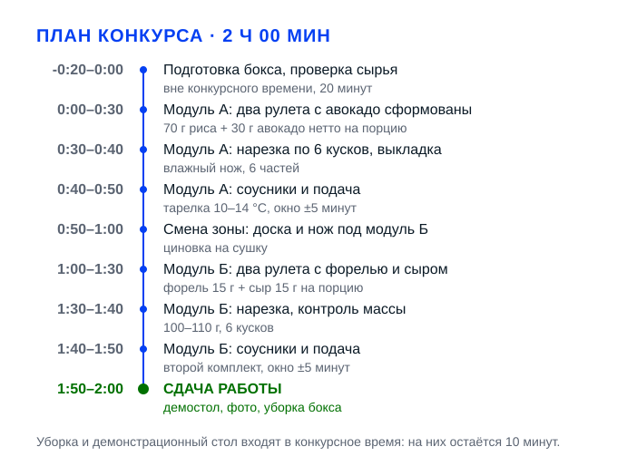
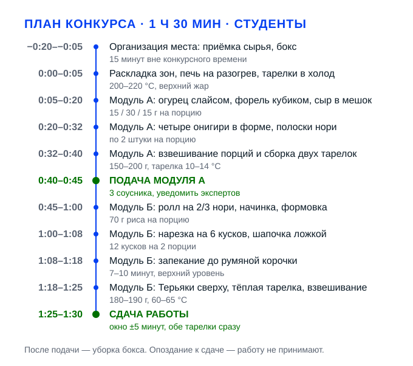
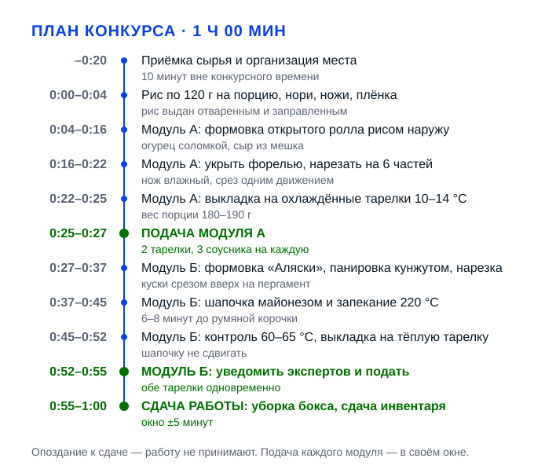

Повар-сушист (Р)
Задания ниже — официальные файлы «Абилимпикс» (источник: abilympics-russia.ru), разложенные по категориям. Решения написаны по тексту задания, регламенту и критериям оценки; в них указано, что именно проверяет эксперт.
Школьник
14–16 лет, базовый уровень заданияВыдержка из официального конкурсного задания: страницы, относящиеся к категории «Школьник» (стр. 6–9 источника).
Пошаговое решение
Задание категории «Школьники» — два закрытых ролла: ролл с авокадо в модуле А и ролл с форелью слабосолёной и творожным сыром в модуле Б. На каждый модуль отводится час, всего два часа конкурсного времени и ещё двадцать минут до старта — на сырьё и подготовку бокса. В каждом модуле нужно подать две одинаковые порции по сто граммов, нарезанные ровно на шесть кусков, на белой круглой плоской тарелке с температурой от 10 до 14 градусов, отдельно — соевый соус, имбирь и васаби в соусниках. Рис приходит отваренным и заправленным, поэтому борьба идёт не за варку, а за формовку, нарезку и чистоту: сто баллов складываются из санитарии и гигиены (9), техники безопасности (9), организации процесса (3), работы с досками и расточительности (5), времени подачи (3) и органолептики с весом (21). Ниже — порядок действий, при котором к сороковой минуте часа роллы уже нарезаны и выложены.

Задача 1. Подготовить бокс и принять сырьёПодготовка · 20 минут вне конкурса · 26 баллов в каждом модуле
Двадцать минут до старта — единственное время, когда не хватающее ещё можно получить, а переставленное место не стоит ни секунды конкурсного часа. За эти двадцать минут нужно надеть спецодежду, сверить корзину с перечнем сырья, оценить авокадо, форель и нори и разложить инструмент по зонам так, чтобы в модуле не искать крышку от соусника. Именно здесь складываются 9 баллов санитарии, 9 баллов техники безопасности и 5 баллов за доски и расточительность — их не отыграть позже, если на старте всё сделано небрежно.
Действие 1.1. Войти в бокс по санитарным правилам
Шаг 1.1.1
Надеваем куртку или фартук поверх чистой футболки, головной убор, закрытую обувь на нескользящей подошве. Волосы убираем полностью, и спереди, и на затылке, длинные пряди дополнительно закалываем под колпак. Рукава подворачиваем выше локтя, куртку застёгиваем на все пуговицы: расстёгнутый борт цепляется за край бамбуковой циновки и ложится в рис ровно в тот момент, когда вы наклоняетесь над доской.
Санитария и гигиена — 9 баллов в каждом модуле, и спецодежда оценивается по конкретным признакам, а не «в целом»: чистая ли, застёгнута ли, убраны ли волосы. Выбившаяся прядь считается формальным нарушением, и балл снимают независимо от того, насколько ровно нарезан ролл. Двадцать минут подготовки идут вне конкурса именно для того, чтобы войти в бокс спокойно, а не в спешке между первым и вторым модулем.
Отойдите к зеркалу или попросите соседа посмотреть со спины: волос не видно ни спереди, ни на затылке, куртка застёгнута и не топорщится, обувь закрытая и сухая, рукава выше локтя. Проверьте карманы — телефон и личные вещи из них убираем сразу, они мешают наклоняться над циновкой.
Колпак «на макушку» с открытым затылком — самая частая ошибка: спереди всё аккуратно, а сзади волосы выбиваются, и эксперт видит это при первом же подходе к боксу. Вторая — прийти в открытой обуви или в футболке с расчётом надеть куртку потом: время на переодевание уходит из модуля, а балл за спецодежду уже не вернуть.
Смотрит на участника до старта: колпак, борта куртки, рукава, обувь. Дальше фиксирует, остаётся ли куртка чистой по ходу работы — брызги соевого соуса и следы риса на груди к концу второго модуля тоже идут в оценку санитарии.
Шаг 1.1.2
Моем руки с мылом до запястий, не меньше двадцати секунд, не забывая большие пальцы и промежутки между пальцами, вытираем одноразовым полотенцем и выбрасываем его сразу. Повторяем каждый раз, когда трогали сырую рыбу, убирали мусор или поправляли волосы. Если работаете в перчатках, надеваем их на сухие руки и меняем после контакта с форелью, а не протираем о фартук.
Персональная гигиена — основа санитарного блока на 9 баллов, потому что ролл едят руками и без термической обработки: любая бактерия с рук попадает прямо в продукт. Рыба слабой соли и творожный сыр особенно чувствительны, а эксперты на дегустации пробуют именно то, что вы держали пальцами. Чистые руки здесь не формальность, а производственная необходимость, и её видно на протяжении всех двух часов.
Руки сухие, полотенце использованное и сразу в мусоре, а не на столе. Проверить себя просто: если вы только что поправляли нори или брали форель и собираетесь формовать рулет, руки моем снова. Правило «сырое, затем готовое» — и есть главный чек-лист санитарии на этой компетенции.
Протереть руки о фартук: визуально они сухие, но фартук становится переносчиком, и эксперт это отмечает отдельным пунктом. Вторая ошибка — помыть руки один раз на входе и считать вопрос закрытым: оценивают процесс, а не стартовое состояние, и смена перчаток после рыбы тоже входит в оценку.
Эксперт смотрит на руки в течение всего конкурса, а не только на входе, и отдельно отмечает, моется ли инвентарь и меняются ли перчатки после контакта с сырым продуктом.
Шаг 1.1.3
Снимаем часы, кольца, браслеты, длинные серьги; ногти коротко подстрижены, без покрытия и без лака. Кольцо, которое «сидит плотно и не мешает», снимаем тоже. Если на руках есть порез или ссадина, закрываем водонепроницаемым пластырем и сообщаем эксперту — это нормальная практика, а не признание в слабости. Часы и телефон оставляем вне рабочей зоны, в шкафчике или в сумке, подальше от стола с рисом.
Под украшениями остаются загрязнения, которые не смываются обычным мытьём, а камень из кольца или звено браслета могут оказаться в рисе. Для блюда, которое пробуют эксперты, посторонний предмет в тарелке — это не минус балл, а обнуление модуля и разговор с главным экспертом. На категории «Школьники» это проверяют на входе, поэтому лучше оставить украшения дома.
Осмотрите руки: украшений нет, ногти короткие, покрытия нет, порезы закрыты пластырем. Проверьте ещё раз после надевания куртки — иногда часы остаются под манжетой и обнаруживаются только при формовке, когда руки уже в рисе.
Оставить обручальное кольцо или часы «они же не мешают» — самое частое нарушение, и объяснение «я привык» не принимается. Вторая ошибка — снять украшения в последний момент и положить их на рабочую поверхность рядом с нори, где они гарантированно окажутся в продукте.
Отдельный пункт чек-листа санитарии: эксперт проверяет руки до старта и выборочно в процессе, особенно перед формовкой и нарезкой. Замеченное кольцо под манжетой снимает балл сразу, а не в конце модуля.
Действие 1.2. Принять и проверить сырьё
Шаг 1.2.1
Берём перечень сырья и идём по нему построчно: рис для суши и роллов, авокадо, водоросли нори, форель слабой соли, творожный сыр. Сверяем вес каждой позиции на весах, а не на глаз, и отмечаем карандашом то, что уже проверено. По рецептуре на одну порцию модуля А идёт 70 г риса, 30 г авокадо нетто и 1,4 г нори; на порцию модуля Б — 70 г риса, 15 г форели, 15 г творожного сыра и 1,4 г нори.
Приёмка — единственный момент, когда недостающее ещё можно получить: после старта замена идёт только через главного эксперта, и то если причина покажется уважительной. Двадцать минут хватает, чтобы спокойно пройти по списку, но не хватает, чтобы сначала начать готовить, а потом спохватиться. Кроме того, умение работать по перечню прямо входит в критерий организации производственного процесса на 3 балла.
Все строки перечня отмечены, расхождения записаны точно: чего нет, сколько нет, в каком виде. Если сомневаетесь в весе, взвешивайте сразу — весы стоят рядом, а пересчитывать потом, когда рис уже разложен, дороже по времени.
Начать с готовки, не сверив перечень: в середине модуля выясняется, что не хватает форели или творожного сыра, и менять план уже поздно. Вторая ошибка — заметить нехватку и промолчать, рассчитывая «обойтись»: недоложенная начинка даёт недовес и потерю баллов по органолептике и весу.
Эксперт видит, сверялся ли участник с перечнем или импортировал на ходу; аккуратно заполненный список читается как признак планирования и входит в 3 балла за организацию.
Шаг 1.2.2
Проверяем авокадо и форель. Авокадо должно быть спелым, но плотным: при нажатии пальцем мякоть пружинит и не оставляет вмятины, под кожурой нет тёмных волокон, на разрезе мякоть однородного жёлто-зелёного цвета. Форель слабой соли — упругая, поверхность влажная, но не липкая, запах свежий, без кислоты и сырости, цвет ровный оранжево-розовый без серых пятен. Творожный сыр пробуем на вкус: он должен быть сливочным, без горечи.
Из перезрелого авокадо полоска не держит форму и превращается в кашу под ножом, а из просроченной форели безопасный ролл не получится в принципе. Оценивают не только вкус, но и соблюдение санитарных норм, а за продукт с признаками порчи модуль могут снять целиком. Проверка занимает две минуты, а последствия пропуска проверяются на дегустации при полном зале экспертов.
Авокадо: нажатие пружинит, вмятина не остаётся, на срезе нет черноты. Форель: кусок держит форму на ладони, не разваливается, не пахнет кислым, на сгибе не трескается. Сыр: однородный, без крупинок и отделившейся сыворотки. Сомнительный продукт откладываем в сторону и показываем эксперту.
Взять мягкое авокадо «на вид нормальное»: полоски разъезжаются, рис темнеет от мякоти, и ролл теряет вид уже до нарезки. Вторая ошибка — выбросить сомнительный продукт молча: его не заменят, и вы останетесь без ключевого ингредиента на весь модуль.
Эксперт подходит к боксу во время приёмки и смотрит, осматривал ли участник рыбу и авокадо руками и на срезе, а не только по упаковке. Отдельно фиксируется, сказал ли участник о сомнительном продукте до старта.
Шаг 1.2.3
Отдельно оцениваем нори и рис. Лист нори должен быть тёмно-зелёным, почти чёрным, с ровной матовой поверхностью, без белого налёта, дыр и размягчённых участков по краям. Рис приходит отваренным и заправленным, поэтому проверяем его состояние: зёрна целые, блестящие, не слипшиеся в ком, температура не выше комнатной, запах кисло-сладкий, без посторонних нот. Пробуем пару зёрен на вкус — соль и уксус должны чувствоваться, но не перебивать.
Нори с белым налётом крошится при скручивании и рвётся по кромке, а рулет из такого листа не держит форму и разваливается при нарезке. Рис, который слипся в ком, не распределяется по листу ровным слоем, и в разрезе видны пустоты — это прямая потеря баллов по органолептике и весу, где на модуль отведено 21 балл. Рис предоставляется готовым, поэтому его состояние — единственное, что вы можете контролировать.
Нори: гнётся, не трескается, на просвет однородный, без светлых пятен. Рис: при перемешивании лопаткой распадается на зёрна, не мажет доску, на вкус сбалансирован. Если рис кажется холодным или слипшимся, скажите об этом до старта, а не в середине формовки.
Разложить нори, не проверив кромку: при скручивании лист лопается по сгибу, и рулет приходится перекладывать, теряя рис и время. Вторая ошибка — не попробовать рис: пересоленный или перекисленный рис испортит вкус обоих роллов, и это заметят на дегустации раньше, чем вы.
Эксперт проверяет, оценивал ли участник нори на ощупь и рис на вкус; это часть критерия органолептики, который складывается не только из готового блюда.
Действие 1.3. Разложить инструмент и зоны
Шаг 1.3.1
Ставим доски на стол так, чтобы они не касались друг друга торцами: отдельно доска для рыбы, отдельно для авокадо и овощей. Ножи раскладываем рядом с каждой доской, а не в общей куче: один длинный для нарезки ролла, второй для авокадо. Нож для нарезки должен быть острым — проверяем бумагой, он режет её без нажима. Полотенца, соль, вода для смачивания рук и ножа — в пределах вытянутой руки, но не в зоне, где лежит рис.
Правильное использование досок — отдельный критерий на 5 баллов, и нарушение товарного соседства фиксируется сразу: рыбу и авокадо на одной доске без смены и промывки эксперт считает грубым нарушением. Острый нож — не про удобство, а про качество среза: тупой нож давит ролл и выдавливает начинку наружу, и разрез получается рваным. Всё это закладывается за двадцать минут до старта.
На столе две рабочие доски разного назначения, каждая с закреплённым ножом, торцы досок не соприкасаются, поверхность сухая. Проверьте остроту ножа на бумаге и уберите лишний инвентарь со стола — всё, что не используется в модуле, лежит в стороне.
Одна доска на всё: сначала форель, потом авокадо — это и товарное соседство, и вкус, и минус баллы за использование досок. Вторая ошибка — тупой нож «он же режет»: ролл плющится, рис липнет к лезвию, куски получаются разной высоты.
Эксперт проходит по боксу до старта и отмечает маркировку досок, отдельные ножи и порядок на столе; критерий на 5 баллов складывается из этих мелочей.
Шаг 1.3.2
Готовим зону формовки. Бамбуковую циновку кладём на сухую ровную поверхность, сверху натягиваем пищевую плёнку и подворачиваем её под циновку с двух сторон — плёнка не даёт рису прилипать к бамбуку и защищает циновку от влаги. Рядом ставим миску с водой и уксусом для смачивания рук и ножа, кондитерский мешок с творожным сыром собираем заранее: мешок с насадкой, край отрезаем ровно, наискосок, отверстие не больше пяти миллиметров.
Плёнка на циновке экономит самый дорогой ресурс — время: без неё рис забивается между прутьями, циновку приходится промывать, а это минуты из часового модуля. Отверстие в мешке определяет толщину полоски сыра: слишком широкое даёт ком, который вылезает при нарезке, слишком узкое — сыра почти нет, и начинка не читается на разрезе.
Плёнка натянута без складок, края подвёрнуты, циновка не скользит по столу. Мешок собран, сыр при нажатии выходит ровной полоской толщиной около пяти миллиметров и не рвётся по краю отверстия. Миска с водой стоит так, чтобы в неё можно было опустить руку, не задев рис.
Формовать на голой циновке: рис забивается в прутья, циновка становится скользкой, и рулет ведёт в сторону. Вторая ошибка — отрезать угол мешка слишком широко: сыр выходит комком, при нарезке выдавливается на срез и пачкает куски.
Эксперт смотрит, подготовлена ли зона формовки: чистая циновка, плёнка, вода, собранный мешок. Это читается как понимание технологии, а не как импровизация.
Шаг 1.3.3
Отправляем в холод посуду для подачи: две белые круглые плоские тарелки на модуль, четыре соусника (соевый соус, имбирь, васаби на каждый модуль), всё это — в холодильник или в холодную зону бокса, но не рядом с горячим оборудованием. Проверяем, что тарелки без сколов, без рисунка и декора, край ровный. Соусники ставим на поднос, чтобы не переносить по одному в момент подачи.
Температура подачи тарелки по заданию — от 10 до 14 градусов, и на холодной посуде ролл держит форму дольше: рис не размягчается, нори не тянется, сыр не течёт. Требование к посуде жёсткое: только белая круглая плоская тарелка без декора, никаких несъедобных компонентов и вспомогательного инвентаря на тарелке — за это снимают баллы по подаче и внешнему виду.
Тарелки холодные на ощупь, сухие, без капель и сколов, соусники чистые и наполнены примерно на треть, чтобы соус не выплёскивался при переносе. Проверьте, что имбирь нарезан тонкими лепестками, а васаби — пастой, а не порошком.
Держать тарелки на столе у плиты: к подаче они нагреваются до комнатной температуры, и рис под роллом начинает отпотевать. Вторая ошибка — decorative-элементы на тарелке вроде листа или зубочистки: по заданию это прямо запрещено.
Эксперт проверяет посуду на соответствие требованию «белая круглая плоская без декора» и измеряет температуру тарелки при подаче — это входит в 21 балл за органолептику и вес.
Задача 2. Модуль А: закрытый ролл с авокадоМодуль А · 1 час · 50 баллов
Первый модуль — закрытый ролл с авокадо, две порции по 100 граммов, каждая нарезана ровно на шесть кусков. По рецептуре на порцию идёт 70 г готового риса, 30 г авокадо нетто и 1,4 г нори, то есть весь вес держится на рисе и авокадо, и любая потеря полоски сразу видна на весах. Работа идёт в три приёма: подготовка авокадо, формовка на циновке, нарезка влажным ножом. За час нужно успеть сделать два рулета, охладить тарелку, собрать соусники и подать — поэтому в этом модуле сначала формуют оба рулета, а режут и выкладывают уже вместе.
Действие 2.1. Подготовить авокадо и нори
Шаг 2.1.1
Берём авокадо весом около 56 г брутто, чтобы после очистки осталось 30 г нетто. Разрезаем вдоль по косточке круговым движением ножа, не продавливая мякоть, разводим половинки в стороны и вынимаем косточку ложкой. Снимаем кожуру пальцами или узким ножом, держа авокадо в ладони, затем нарезаем мякоть вдоль на полоски толщиной 5–7 мм и длиной около 18 см — по длине листа нори.
Полоски задают структуру разреза: слишком толстые не помещаются в один слой и выдавливаются наружу при скручивании, слишком тонкие превращаются в кашу под рисом. Тридцать граммов нетто — это примерно половина среднего плода, и считать нужно именно нетто: кожура и косточка в зачёт не идут. Ровная нарезка экономит и время, и продукт, а расточительность входит в критерий на 5 баллов.
На весах 30 г чистой мякоти, полоски одинаковой толщины, не темнеют на воздухе. Если мякоть начала буреть, срежьте потемневшее и доложите полоску из второй половины, но проверьте общий вес — он должен остаться 30 г.
Разрезать авокадо ножом до косточки и выкручивать половинки: мякоть рвётся, полоски получаются разной толщины, и часть уходит в отходы. Вторая ошибка — нарезать кубиком вместо полосок: кубик рассыпается в рисе и не читается на разрезе.
Эксперт смотрит на отходы после очистки авокадо: кожура и косточка — норма, а срезанная вместе с кожурой мякоть читается как расточительность и снижает 5 баллов за использование продуктов.
Шаг 2.1.2
Кладём половину листа нори на циновку блестящей стороной вниз, шероховатой вверх — рис лучше держится на матовой поверхности. Половину отмеряем по длинной стороне: полный лист примерно 19 на 21 см, значит половинка около 19 на 10,5 см. Кладём её длинной стороной к себе, ровно, без перекоса: перекос даже в пять миллиметров приведёт к тому, что рулет получится конусом и куски будут разной высоты.
Ориентация листа определяет геометрию рулета: если положить нори криво, при скручивании один край уйдёт вперёд, и рулет получится бочонком. Блестящая сторона вниз нужна потому, что матовая лучше впитывает влагу с риса и лист не скользит по циновке. Ровно уложенный лист — половина успеха нарезки на шесть равных кусков, за которую даются баллы по органолептике и весу.
Края половинки нори параллельны краям циновки, расстояние от края циновки до листа одинаковое сверху и снизу. Размер половинки проверьте линейкой один раз, дальше делите на глаз: 19 на 10,5 см, допуск — полсантиметра.
Взять целый лист вместо половины: риса 70 г не хватит на всю площадь, слой получится тонким, и рулет не будет держать форму. Вторая ошибка — положить нори шероховатой стороной вниз: лист скользит, при скручивании рис выходит за край.
Эксперт проверяет, ровно ли уложен лист и соответствует ли он половине листа: целый лист с 70 г риса — это уже нарушение рецептуры. Отдельно отмечает, лежит ли лист ровно по краю циновки: перекос виден сразу и часто объясняет неровную нарезку в конце модуля.
Шаг 2.1.3
Готовим воду для рук и ножа: в миску наливаем холодную воду и добавляем чайную ложку рисового уксуса. Руки смачиваем водой и слегка стряхиваем, чтобы с ладоней не капало на нори, но и не вытираем насухо. Воду меняем, как только она стала мутной от риса, и держим рядом сухое полотенце для ножа — мокрое лезвие должно быть влажным, а не текущим. Миску ставим справа от циновки, если работаете правой рукой, чтобы не тянуться через рис; полотенце — слева, отдельно от сухих продуктов.
Влажные руки не липнут к рису: сухими ладонями вы снимете половину слоя и получите неровную поверхность, а липкий рис будет тянуться за пальцами. Уксус в воде — это ещё и дезинфекция лезвия между разрезами, а чистый нож даёт ровный срез без задиров. Всё это входит в санитарный блок на 9 баллов и в качество нарезки, за которое дают баллы по внешнему виду.
В миске холодная вода с лёгким запахом уксуса, руки влажные, но не текут, полотенце сухое и лежит отдельно от продуктов. Проверьте: проведите мокрой рукой по краю нори — рис должен ложиться ровно, не прилипая к пальцам комками.
Смачивать руки над нори: капли попадают на лист, и он размокает именно в том месте, где будет кромка. Вторая ошибка — работать сухими руками и постоянно поправлять слой: рис сминается, появляются пустоты, которые видно на разрезе.
Эксперт наблюдает за работой рук: влажные ли они, не касается ли участник нори мокрыми пальцами, меняется ли вода. Это часть оценки санитарии и техники формовки.
Действие 2.2. Сформовать рулет на циновке
Шаг 2.2.1
Набираем 70 г риса влажной рукой, распределяем по нори от края до края ровным слоем толщиной около 7–8 мм, оставляя незакрытой полосу 1 см по длинной стороне, дальней от вас, — это кромка для склейки. Разравниваем пальцами, не прижимая сильно: рис должен лежать рыхло, зёрнышко к зёрнышку, а не быть спрессованным в пласт. Край слоя у кромки делаем ровным, тонким, без наплыва на сухую полосу.
Семьдесят граммов на половину листа — это и есть рецептурная норма на порцию, поэтому слой получается тонким по определению. Если положить больше, рулет станет толстым, но выйдет за 100 г и потеряет баллы по весу; если меньше — рулет будет пустым и рыхлым. Оставленный сантиметр — единственное место, где нори склеится само с собой: рис на кромке не даст шву схватиться, и рулет раскроется при нарезке.
Слой закрывает нори везде, кроме полосы 1 см, толщина примерно одинаковая по всей площади, на просвет не видно тёмных участков без риса. Проведите ладонью над слоем: он не должен липнуть к руке большими комками.
Выложить рис на всю площадь, включая кромку: шов не склеится, и рулет развалится на первой же нарезке. Вторая ошибка — прижимать рис ладонью: слой становится плотным и тяжёлым, в разрезе куски выглядят спрессованными, а рис теряет воздушность.
Эксперт оценивает ровность слоя и наличие свободной кромки: это базовый навык, который видно ещё до скручивания. Если кромка занята рисом, эксперт понимает, что рулет не склеится, задолго до того, как это случится.
Шаг 2.2.2
Полоски авокадо выкладываем в центр риса, вдоль длинной стороны, в один слой, не внахлёст, начиная с ближнего к вам края и оставляя по сантиметру свободного риса с каждой стороны. Тридцать граммов — это примерно четыре-пять полосок средней длины. Укладываем их слегка с нажимом, чтобы они не сдвигались при скручивании, но так, чтобы не прорезать рис насквозь.
Начинка в центре — это условие ровной нарезки: если авокадо лежит ближе к краю, при скручивании оно выйдет на поверхность, и кусок получится с разрывом. Один слой без нахлёста нужен, чтобы рулет не раздулся в середине и не сузился к концам: толщина по всей длине должна быть одинаковой, иначе шесть кусков будут разной высоты и потеряют баллы за внешний вид.
Полоски лежат по центру, не выглядывают за границы будущей начинки, между ними нет пустот, но и горки нет. Посмотрите вдоль рулета: линия авокадо должна быть прямой, как рельс, — тогда и разрез будет ровным.
Разложить авокадо по всей площади риса: при скручивании оно окажется у самой кромки и вылезет наружу. Вторая ошибка — положить полоски горкой в два слоя: центр рулета раздувается, а концы остаются пустыми, куски получаются разного веса.
Эксперт смотрит на распределение начинки до скручивания: ровная центральная линия читается как понимание технологии, а начинка по краю — как спешка. Проверяет он это бегло, но именно по этому признаку отличает продуманную работу от случайной.
Шаг 2.2.3
Скручиваем: большими пальцами обеих рук придерживаем начинку, остальными поднимаем ближний край циновки и накрываем ею рис так, чтобы кромка нори легла на начинку. Прижимаем пальцами по всей длине, затем подтягиваем циновку на себя, освобождая рулет, и продолжаем катить его вперёд, пока не дойдём до сухой полосы. Давим равномерно по всей длине, а не только в середине.
Подтягивание циновки — ключевой приём: если просто катить, циновка наматывается вместе с рисом и рулет получается рыхлым. Ровное давление по всей длине даёт одинаковый диаметр, а значит шесть кусков одной высоты. Это прямо связано с 21 баллом за органолептику и вес: неровный рулет либо не даёт нужных 100 г на порцию, либо даёт их за счёт толщины в одном месте.
Рулет держит форму, не раскрывается, диаметр одинаковый от конца до конца. Проведите ладонью по всей длине: не должно быть впадин и утолщений, а начинка не должна прощупываться у поверхности. Длина рулета должна совпадать с длиной листа — около 19 см: если он заметно короче, значит циновка подтянула рис и рулет получился толще нужного.
Катать, не подтягивая циновку: рис вминается в прутья, рулет выходит рыхлым и сплюснутым. Вторая ошибка — давить только середину: концы остаются пустыми, и крайние куски при нарезке разваливаются. Третья — скручивать на весу, отрывая циновку от стола: рулет изгибается дугой, и середина выходит толще концов.
Эксперт наблюдает за моментом скручивания: подтягивает ли участник циновку, придерживает ли начинку пальцами, держит ли давление по всей длине. Отдельно отмечается, придерживает ли участник начинку пальцами: выдавленное авокадо на поверхности — след торопливого скручивания.
Шаг 2.2.4
Смачиваем свободную полосу нори влажным пальцем — тонко, только по кромке, — и докатываем рулет до конца, прижимая шов ладонью на пару секунд. Снимаем циновку, кладём рулет швом вниз и обжимаем его еще раз ладонями, выравнивая диаметр. Проверяем вес: рулет с авокадо должен весить около 100 г, то есть вся порция целиком. Шов после обжима проверяем большим пальцем: он должен быть плоским, без бугра, иначе при нарезке первый кусок развалится.
Вода на кромке растворяет желирующие вещества нори, и шов схватывается за несколько секунд. Без воды кромка останется сухой и отойдёт при нарезке — рулет раскроется на куски, и модуль придётся переделывать, а времени на переделку в часовом модуле нет. Контроль веса до нарезки нужен потому, что после нарезки добавить рис уже невозможно: по заданию масса блюда модуля А — ровно 100 г.
Шов не виден, кромка приклеена по всей длине, рулет ровный, на весах 100 г плюс-минус 2 г. Нажмите на рулет пальцем: он должен пружинить и возвращать форму, а не проминаться до начинки. Сожмите рулет по длине: он должен быть упругим и одинаковым по толщине на концах и в середине.
Не смочить кромку или смочить слишком щедро: в первом случае шов расходится, во втором нори размокает и рвётся. Третья ошибка — не взвесить рулет: недовес выяснится у эксперта, и балл за вес уже не вернуть.
Эксперт проверяет плотность рулета на ощупь и вес на весах; рыхлый рулет виден и по внешнему виду, и по тому, как он держится на тарелке. Вес он может проверить и до нарезки, поэтому цифра на весах должна быть известна вам раньше, чем эксперту.
Действие 2.3. Нарезать рулет на шесть равных кусков
Шаг 2.3.1
Берём длинный нож, смачиваем лезвие в воде с уксусом и слегка стряхиваем. Рулет кладём швом вниз на доску, придерживаем левой ладонью вдоль, чтобы он не катился. Перед каждым движением нож смачиваем заново и вытираем о сухое полотенце, если рис налип на лезвие: липкий нож рвёт нори вместо того, чтобы резать. Доску под рулет выбираем отдельную, для готового продукта, и держим её сухой: лужица под рулетом размягчает нори снизу.
Влажное лезвие проходит через рис и нори, не прилипая: сухой нож тащит рис за собой, и срез получается рваным, с выдавленной начинкой. Шов вниз нужен для того, чтобы давление ножа не раскрыло рулет. Всё это напрямую определяет внешний вид, а органолептика и вес в каждом модуле — это 21 балл, самый весомый критерий.
Лезвие влажное по всей длине, на рулете нет крошек риса и следов начинки, рулет не катится при нажатии. Проверьте первый разрез: кромка нори должна быть ровной, без бахромы. Если на лезвии остались зёрна, промойте его и протрите: следующая пара разрезов должна идти так же чисто.
Резать сухим ножом: рис липнет, нори тянется, срез получается зубчатым, а начинка выдавливается на поверхность. Вторая ошибка — резать коротким ножом с нажимом: кусок сплющивается, высота становится разной.
Эксперт смотрит на нож и на воду перед нарезкой: подготовка лезвия — часть техники и аккуратности, которую фиксируют в этом модуле. Смотрит он и на хват: нож держат за рукоять, указательный палец не на лезвии, вторая рука придерживает рулет сбоку.
Шаг 2.3.2
Режем на шесть частей в два приёма: сначала рулет пополам, затем каждую половину на три равные части. Движение — одно, от себя, с лёгким нажимом и протяжкой, без пиления. Режем, не отрывая нож от доски, а поднимая его только для следующего разреза. Если рулет длиннее лезвия, разрезаем в два захода: сначала до середины, потом переворачиваем и заканчиваем.
Деление пополам и затем на три даёт шесть равных частей без вычислений: пилить на глаз сразу на шесть почти невозможно, а половина рулета делится на три точнее. Одно движение вместо пиления сохраняет структуру риса — при пилении зёрна выдавливаются, и срез выглядит мутным. Ровные куски одинаковой толщины — это и внешний вид, и равный вес каждой порции.
Шесть кусков одинаковой толщины, около 3 см каждый, высота одинаковая, нори на срезе образует ровную тёмную рамку по кругу, начинка не выдавлена. Проверьте линейкой первый и последний кусок: разница не должна превышать двух-трёх миллиметров.
Пилить ножом туда-сюда: рис выдавливается, срез становится неровным, а крайние куски разваливаются. Вторая ошибка — резать сразу на шесть частей на глаз: куски получаются разной толщины, и порция выглядит небрежно.
Эксперт смотрит на разрез: нори по кругу, рис плотный, начинка по центру, шесть кусков сопоставимы между собой. Это самый заметный признак мастерства в этом модуле.
Шаг 2.3.3
Выкладываем нарезанные куски на доску и оцениваем результат: шесть штук, все одинаковой высоты, ни один не развалился, начинка нигде не вышла за пределы нори. Взвешиваем порцию целиком — 100 г. Если кусок надломлен, оставляем его для своей дегустации, а не для подачи, и добираем вес из второго рулета, если он ещё не нарезан. Куски выкладываем на доску в том порядке, в каком они лежали в рулете: так видно, где нарушилась геометрия, и проще собрать ровную линию на тарелке.
Проверка до подачи — единственный шанс исправить брак: на тарелке развалившийся кусок уже не склеить, и эксперт увидит его первым. Вес 100 г — требование задания по модулю А, и отклонение фиксируется на весах. Спокойная проверка занимает минуту, а возвращает баллы сразу по двум критериям: внешний вид и вес.
Шесть целых кусков, одинаковый диаметр, на весах 100 г плюс-минус 2 г. Поднимите один кусок за бок: рис не осыпается, нори держит форму по всей окружности. Переверните кусок: на нижней стороне не должно быть осыпавшегося риса, иначе на тарелке останется белая дорожка.
Подать надломленный или развалившийся кусок: он выглядит как брак и тянет за собой оценку всего блюда. Вторая ошибка — не проверить вес до подачи и обнаружить недовес уже на весах у эксперта. Третья — оставить надломленный кусок «на потом» и случайно положить его на тарелку в спешке.
Эксперт может пересчитать куски и взвесить порцию: по заданию нарезать нужно ровно на шесть частей, а масса блюда модуля А — 100 г. Обращает внимание и на одинаковость кусков: разнобой по толщине виден на тарелке сразу, без линейки.
Действие 2.4. Подать две порции модуля А
Шаг 2.4.1
Достаём охлаждённую тарелку из холода, протираем сухим полотенцем, если на ней выступил конденсат. Выкладываем шесть кусков срезом вверх, по дуге или в один ряд вдоль края, плотно друг к другу, но не наезжая, отступив от борта примерно два сантиметра. Край тарелки оставляем чистым: тарелка по заданию белая круглая плоская, без декора и без дополнительных аксессуаров.
Температура подачи тарелки — от 10 до 14 градусов, и её измеряют: на тёплой тарелке рис отпотевает, нори отсыревает, и блюдо теряет вид за минуту. Отступ от края нужен, чтобы тарелку можно было взять, не задев ролл, и чтобы композиция читалась. Всё постороннее на тарелке запрещено прямым текстом задания, и за это снимают баллы по подаче.
Тарелка холодная на ощупь, сухая, шесть кусков лежат ровно, срезом вверх, край чистый и свободный. Посмотрите на тарелку сверху: композиция должна читаться без объяснений, а куски — быть одинаковыми. Проверьте расстояние от ролла до борта: оно должно быть одинаковым со всех сторон, иначе композиция кажется сдвинутой.
Нагреть тарелку или взять первую попавшуюся: температура выйдет из диапазона, и балл уйдёт. Вторая ошибка — украсить тарелку зеленью или зубочисткой: по заданию дополнительные аксессуары и несъедобные компоненты не допускаются.
Эксперт измеряет температуру тарелки при подаче и оценивает композицию: чистота края, ровность выкладки, отсутствие лишнего — всё это в 21 балл за органолептику и вес.
Шаг 2.4.2
Собираем соусники: в один наливаем соевый соус примерно на треть, во второй кладём имбирь тонкими лепестками, в третий — васаби пастой размером с горошину. Ставим их рядом с тарелкой, на модуль А — свой комплект, на модуль Б — свой. Соусник ставим донышком на сухую салфетку, чтобы не поставить его в каплю соуса. протираем снизу, чтобы не оставить кольцо на столе, и не ставим его на тарелку с роллом.
Соевый соус, имбирь и васаби подаются отдельно к каждому модулю — это требование задания, и проверяется оно визуально. Соус на тарелке с роллом испортит и внешний вид, и вкус: рис впитает соус и станет тёмным. Имбирь лепестками и васаби пастой — не формальность, а признак того, что участник понимает, как подают суши.
Три соусника на модуль, все чистые снаружи, соевый соус налит на треть, имбирь не плавает в жидкости, васаби свежий. Проверьте, что соусники стоят на подносе или рядом с тарелкой, а не на ней. Понюхайте васаби: резкий запах без горечи — свежий, а запах сырости говорит о том, что паста долго стояла открытой.
Поставить соусник на тарелку с роллом или забыть про имбирь: подача считается неполной, и баллы снимаются. Вторая ошибка — налить соус до края: при переносе он выплёскивается и пачкает тарелку. Третья ошибка — положить имбирь рядом с васаби одним комком: по правилам подачи их разделяют, и эксперт это отмечает.
Эксперт проверяет комплектность подачи: соевый соус, имбирь, васаби в соусниках на каждый модуль, всё отдельно от блюда. Отмечает он и опрятность соусников: подтёки на стекле или керамике снижают впечатление от всей подачи.
Шаг 2.4.3
Выносим тарелку в окно подачи модуля А, ставим её перед экспертом и коротко говорим: «Модуль А, ролл с авокадо, две порции». Уведомляем о завершении работы именно в этот момент, а не когда всё будет прибрано. Вторую тарелку оставляем на столе готовой: после оценки измеримых показателей она идёт на демонстрационный стол и на фотографирование. Говорим коротко и не оправдываясь: в этот момент эксперт записывает время подачи, и лишние слова только мешают.
Время подачи — отдельный измеряемый критерий на 3 балла, и он фиксируется по факту, а не по вашим ощущениям. Две идентичные тарелки нужны потому, что одну оценивают и фотографируют, а вторую отправляют на дегустацию: если вторая тарелка не готова в момент подачи, дегустация задерживается, а это тоже влияет на оценку.
Обе тарелки готовы, одинаковые по составу и выкладке, первая передана эксперту в пределах окна модуля А. Скажите вслух, что именно подаёте, — так эксперт быстрее и точнее заполнит протокол. Убедитесь, что тарелки стоят на столе, а не в руках: подача с рук считается незавершённой.
Молча поставить тарелку и уйти: эксперт не всегда видит момент подачи, и время может быть зафиксировано позже. Вторая ошибка — вынести одну тарелку, а вторую доделывать после: блюда перестают быть идентичными.
Эксперт фиксирует время подачи и сравнивает две тарелки между собой: они должны быть одинаковыми и по весу, и по выкладке. Если вторая тарелка отличается размером кусков, он фиксирует это как нестабильность работы.
Шаг 2.4.4
После подачи модуля А быстро приводим зону в порядок: снимаем циновку на мойку, убираем доску с авокадо, берём новую доску и нож для рыбы, протираем стол, меняем воду в миске, выбрасываем обрезки. Это пять-семь минут, и они входят в час модуля, а не идут сверх него. Циновку промываем тёплой водой без мыла и вешаем сушиться, а не кладём мокрой на стол.
Смена доски между модулями — прямое требование критерия о правильном использовании досок на 5 баллов: работать с рыбой на доске после авокадо нельзя. Убранная зона ещё и ускоряет второй модуль: на чистом столе не нужно искать нож и освобождать место под циновку. Порядок в боксе эксперт видит в любой момент, без предупреждения.
Стол сухой, доска заменена, нож для рыбы отдельный, обрезки в мусоре, вода свежая. Проверьте, что на столе не осталось полосок авокадо, которые потом попадут в следующий ролл. Проведите рукой по столу: он должен быть сухим, без липких следов риса.
Оставить ту же доску и тот же нож: смешение продуктов и нарушение товарного соседства, за которое снимают баллы. Вторая ошибка — начать модуль Б на столе с обрезками: теряется время и чистота. Третья — мыть циновку в самом конце, когда она уже понадобилась снова.
Эксперт отмечает порядок на столе после первого модуля: чистая зона и заменённая доска читаются как планирование процесса. Ему важно видеть, что участник убирает за собой по ходу, а не откладывает всё на финал.
Задача 3. Модуль Б: закрытый ролл с форелью и творожным сыромМодуль Б · 1 час · 50 баллов
Второй модуль отличается от первого начинкой и допуском по весу: на порцию идёт 70 г риса, 15 г форели слабой соли и 15 г творожного сыра, а масса подаётся в диапазоне от 100 до 110 г. Пятнадцать граммов — это три-четыре тонкие полоски рыбы, и вся сложность в том, чтобы они не потерялись под рисом и не выдавились сыром при скручивании. Сыр идёт из кондитерского мешка отдельной полосой, а не размазывается по листу: только тогда на срезе видно две отдельные начинки. Модуль идёт вторым, зона уже разогрета работой, и главный риск — потянуть время на формовке и подать в самом конце часа.
Действие 3.1. Подготовить форель и творожный сыр
Шаг 3.1.1
Достаём форель слабой соли из холода и отбираем 15 г нетто на порцию, то есть 30 г на две порции. Кладём кусок на отдельную доску для рыбы, осматриваем поверхность: кожа должна быть снята, мелкие косточки выбраны пинцетом, тёмная полоса по центру филе срезана. Нарезаем тонкими полосками толщиной 4–5 мм и длиной около 15 см — так, чтобы они укладывались вдоль рулета в один слой.
Форель в этом ролле — единственный источник вкуса и цвета, и её всего 15 г: если полоски толстые, они займут весь центр и выдавят сыр, если слишком тонкие — растворятся в рисе и на разрезе будет бледная полоса. Кожу и кости убирают до формовки, потому что после скручивания это уже невозможно. Точный вес нужен и для рецептуры, и для попадания в диапазон массы от 100 до 110 г.
На весах 15 г чистой мякоти на порцию, в руке — полоски одинаковой толщины, на сгибе они не ломаются. Проведите пальцем по мякоти: косточек не должно быть ни одной, а поверхность должна быть влажной, но не липкой.
Нарезать форель кубиком или толстыми ломтями: кубик рассыпается и не даёт ровной полосы на разрезе, а толстый ломоть вылезает из рулета при нарезке. Вторая ошибка — оставить кожу: она не жуётся и сразу заметна на срезе, а эксперт фиксирует это как нарушение технологии.
Эксперт осматривает нарезанную рыбу до формовки: однородные полоски без кожи и костей читаются как работа с продуктом, а не как нарезка на скорость. Отдельно он проверяет, нет ли на доске обрезков кожи: они говорят о том, что рыбу чистили наспех.
Шаг 3.1.2
Творожный сыр перекладываем в кондитерский мешок с насадкой, край отрезаем наискосок, отверстие около пяти миллиметров. Сыр должен быть комнатной температуры или чуть прохладнее, но не из холодильника: холодный сыр не продавливается через узкое отверстие и рвёт мешок. Если сыр слишком плотный, разминаем его ложкой в миске до однородности и только потом набираем в мешок.
Пятнадцать граммов сыра на порцию — это полоса длиной во весь рулет и толщиной примерно в сантиметр. Через мешок она ложится ровно и не размазывается по рису, а именно ровная полоса даёт чистый срез: две начинки читаются отдельно, и блюдо выглядит так, как описано в технологической карте. Холодный или крупинками сыр ложится комками, и при нарезке его выдавливает наружу.
Из мешка сыр выходит ровной непрерывной колбаской, не рвётся и не капает. Проверьте на отдельной доске: полоса должна держать форму и не расползаться, если провести по ней пальцем. Если сыр идёт рывками, значит он холодный: верните его в миску и разомните, а мешок соберите заново.
Набрать холодный сыр: он не идёт через насадку, приходится давить изо всех сил, и мешок лопается по шву. Вторая ошибка — отрезать угол слишком широко: сыр ложится комом, при нарезке выступает на срез и пачкает куски.
Эксперт смотрит на консистенцию сыра и на то, отсаживает ли участник полосу, а не выдавливает комок: это вопрос технологии, а не вкуса. Ему важно видеть, что сыр подготовлен до формовки, а не выдавливается в спешке в момент скручивания.
Шаг 3.1.3
Раскладываем начинку на две порции заранее: две порции форели по 15 г на отдельной доске и два отрезанных куска нори по 1,4 г. Рис берём из общей ёмкости по 70 г на рулет, отмеряя на весах, а не на глаз. Такой расклад занимает две минуты и снимает главную причину спешки во втором модуле: не нужно искать продукт в середине формовки. Вторую порцию раскладываем на второй доске, чтобы не путать куски и не перекладывать их с места на место.
Две порции по заданию должны быть идентичными, и единственный способ этого добиться — отвесить каждую позицию отдельно. Рис на глаз даёт разницу в десять-пятнадцать граммов, и тогда одна порция выйдет за верхнюю границу 110 г, а вторая окажется на нижней. Кроме того, предварительная раскладка — это организация процесса, за которую дают 3 балла.
На доске два равных куска рыбы, две половинки нори одинакового размера, рис отвешен на каждую порцию. Взвесьте контрольный кусок риса один раз: 70 г — это примерно полтора-два черпака небольшой ложкой.
Отвешивать один раз на два рулета: второй рулет получается тощим, и разница видна на тарелке. Вторая ошибка — выложить рыбу заранее на рис и оставить ждать: рис впитывает влагу из рыбы, и слой начинает темнеть по краю.
Эксперт отмечает, отвешивает ли участник сырьё или работает на глаз: это видно по ровности порций и по тому, остаётся ли лишнее на доске. Если на доске остаются лишние куски рыбы, это либо расточительность, либо ошибка в весе порции.
Действие 3.2. Сформовать рулет с форелью
Шаг 3.2.1
Половину листа нори кладём на циновку матовой стороной вверх, длинной стороной к себе, проверяем параллельность краёв. Набираем 70 г риса влажной рукой и распределяем от края до края ровным слоем 7–8 мм, оставляя незакрытой полосу 1 см по дальней длинной стороне. У самой кромки слой сводим почти на нет: тонкий край лучше приклеивается к рису при скручивании.
Схема та же, что в модуле А, и это не совпадение: закрытый ролл формуется одинаково независимо от начинки, а разница только в весе и составе центра. Ровный слой обеспечивает одинаковый диаметр по длине, а значит шесть кусков одной высоты, что напрямую влияет на 21 балл за органолептику и вес. Сухая кромка без риса — единственное место, где нори склеится с нори.
Слой закрывает лист везде, кроме полосы 1 см, толщина одинаковая, на просвет нет участков без риса. Проведите мокрой рукой вдоль кромки: рис не должен наползать на сухую полосу. Ширина сухой полосы — ровно сантиметр: на глаз это ширина ногтя большого пальца, проверьте один раз линейкой.
Выложить рис на всю площадь: шов не склеится, и рулет раскроется при первом же разрезе. Вторая ошибка — оставить слишком широкую сухую полосу, больше двух сантиметров: тогда рулет не закроется полностью и на срезе будет пустой угол.
Эксперт оценивает ровность слоя и состояние кромки: это базовая техника, одинаково важная в обоих модулях. Он может подойти и после скручивания: если кромка осталась сухой и не приклеилась, это видно по расходящемуся шву.
Шаг 3.2.2
Укладываем начинку в центр: сначала полоски форели в один слой, вдоль длинной стороны, с отступом по сантиметру от краёв, затем рядом, а не поверх, отсаживаем полосу творожного сыра из мешка. Сыр ведём от края до края ровным движением, держа насадку в сантиметре над рисом, чтобы струйка ложилась, а не вдавливалась. Две начинки должны лежать параллельными полосами.
Форель и сыр должны читаться на разрезе отдельными слоями — так задумано в технологической карте, где рыба и сыр идут как две самостоятельные позиции рецептуры. Если смешать их в ком, срез становится мутным, а вкус теряет контраст: солёная рыба и сливочный сыр должны встречаться во рту, а не превращаться в паштет. Полоса сыра рядом с рыбой ещё и не даёт рыбе вытечь при нарезке.
Полосы параллельны, не пересекаются, занимают центр и не подходят к краям ближе сантиметра. Сыр лежит полосой шириной около сантиметра, а не расползся пятном. Посмотрите вдоль рулета: линия начинки должна быть прямой.
Размазать сыр по всему рису лопаткой: слой становится скользким, рулет не сворачивается, а едет. Вторая ошибка — положить рыбу поверх сыра: полоски проваливаются и при нарезке уходят вниз, срез получается с пустой серединой.
Эксперт проверяет распределение начинки до скручивания: параллельные полосы видны сразу и говорят о понимании рецептуры. Отдельно отмечается, держит ли участник насадку выше риса: вдавленная струйка сыра читается как неуверенная работа.
Шаг 3.2.3
Скручиваем так же, как в модуле А: большими пальцами придерживаем начинку, поднимаем ближний край циновки и накрываем рис, прижимаем по всей длине, подтягиваем циновку на себя и катим рулет вперёд. Давление распределяем равномерно, но в зоне сыра давим чуть мягче: сыр пластичный и при сильном сжатии выходит вперёд, к открытому краю. Кромку держим большими пальцами до последнего момента, иначе начинка сдвинется вперёд вместе с рисом.
Подтяжка циновки — приём, который отличает плотный рулет от рыхлого: без неё циновка наматывается вместе с рисом, и внутри остаются воздушные полости. Мягкое давление в зоне сыра нужно потому, что 15 г творожного сыра при сжатии ведут себя как жидкость и стремятся выйти наружу — а на срезе это выглядит как размазанная начинка вместо аккуратной полосы.
Рулет держит форму, диаметр одинаковый по длине, сыр не выступил на поверхность нори. Проведите ладонью вдоль: не должно быть мягких участков, где начинка подошла близко к поверхности. Прощупайте рулет через нори: под пальцами не должно быть мягких бугров, где собрался сыр.
Давить изо всех сил, чтобы рулет был плотнее: сыр выдавливается к кромке, шов не склеивается, и рулет расходится. Вторая ошибка — катить, не подтягивая циновку: внутри остаются пустоты, и куски получаются разного веса.
Эксперт наблюдает за скручиванием: придерживает ли участник начинку и не выдавил ли сыр на поверхность к моменту, когда рулет готов. Если сыр вышел на поверхность, он отмечает это как потерю контроля над начинкой, а не как случайность.
Шаг 3.2.4
Смачиваем свободную полосу нори влажным пальцем только по кромке, докатываем рулет до конца и прижимаем шов ладонью на пару секунд. Снимаем циновку, кладём рулет швом вниз, обжимаем ладонями, выравнивая диаметр, и взвешиваем: порция модуля Б должна весить от 100 до 110 г. Если вес ниже, добавлять рис в уже сформированный рулет нельзя — проще проверить, не потерялась ли часть начинки.
Верхняя граница в 110 г в этом модуле не случайна: рыба и сыр добавляют вес, и отклонение вверх так же нежелательно, как недовес. Вода на кромке растворяет желирующие вещества нори, и шов схватывается за несколько секунд — без этого кромка отойдёт при нарезке, и рулет раскроется прямо на доске, когда до подачи останутся минуты.
Шов плоский и невидимый, кромка приклеена по всей длине, на весах от 100 до 110 г. Нажмите на рулет: он пружинит и возвращает форму, а не проминается до начинки. Проверьте концы — они не должны быть пустее середины.
Не смочить кромку: шов расходится, и рулет разваливается при нарезке. Вторая ошибка — не взвесить рулет и подать порцию на 115 г: превышение диапазона фиксируется на весах, и балл за вес теряется целиком.
Эксперт проверяет вес и плотность: в этом модуле диапазон 100–110 г, и он измеряется, а не оценивается на глаз. Проверяет он и шов: плоский, без бугра — значит рулет обжат правильно.
Действие 3.3. Нарезать и проверить шесть кусков
Шаг 3.3.1
Кладём рулет швом вниз на отдельную доску для готового продукта, придерживаем ладонью вдоль, чтобы он не катился. Нож смачиваем в воде с уксусом и стряхиваем лишнее. Режем в два приёма — сначала пополам, затем каждую половину на три части, одним движением от себя, без пиления. Перед каждым разрезом проверяем лезвие: налипший рис снимаем пальцем и смачиваем нож заново.
Влажное лезвие проходит через рис и нори, не разрывая их, а липкое тянет начинку за собой: на срезе появляются размазанные следы сыра, и кусок выглядит небрежным. Деление пополам и затем на три даёт шесть равных частей без вычислений на глаз — это самый надёжный способ получить одинаковую толщину, за которую дают баллы по внешнему виду блюда.
Шесть кусков одинаковой толщины около 3 см, нори образует ровную тёмную рамку по кругу, начинка не выдавлена. Разница между первым и последним куском — не больше двух-трёх миллиметров, проверьте линейкой хотя бы раз.
Пилить ножом: рис выдавливается, срез мутнеет, крайние куски разваливаются. Вторая ошибка — резать сразу на шесть частей на глаз: куски получаются разной толщины, и порция на тарелке выглядит собранной из разных роллов.
Эксперт смотрит именно на срез: две начинки, ровная рамка нори, шесть сопоставимых кусков — это главный визуальный критерий модуля. Ещё один признак — одинаковый наклон кусков: если они заваливаются набок, рулет был неровным.
Шаг 3.3.2
Раскладываем куски на доске и оцениваем каждый: сыр не выдавлен за пределы нори, форель видна полосой, рис не осыпается, шов не разошёлся. Если один кусок надломлен или начинка вышла наружу, откладываем его для своей дегустации, а не для подачи. Проверяем и чистоту торцов: на срезе не должно быть крошек и мазков сыра по внешней стороне нори. Отдельно проверяем, не осталось ли на доске выдавленного сыра: если осталось, значит начинки в ролле меньше, чем нужно.
Двадцать один балл за органолептические показатели — самый весомый критерий в модуле, и часть его складывается из внешнего вида до дегустации. Развалившийся кусок на тарелке эксперт видит раньше, чем пробует, и оценивает блюдо целиком, а не отдельные куски. Отбраковка одного куска стоит меньше, чем потеря баллов за внешний вид всей порции.
Все шесть кусков целые, срез чистый, начинка на месте, внешняя сторона нори без мазков. Поднимите кусок за бок: рис держится, нори не отходит, начинка не выпадает. Проверьте кусок на просвет у окна: полоса форели должна быть видна, как тёмная линия внутри.
Подать кусок с выдавленным сыром: он выглядит как брак и тянет за собой оценку всего блюда. Вторая ошибка — протереть такой кусок пальцем: на нори остаётся жирный след, который видно на белой тарелке.
Эксперт осматривает куски до дегустации, обращая внимание на чистоту среза и целостность нори. Он может попросить показать срез крупным планом — на фото видны все неровности начинки.
Шаг 3.3.3
Взвешиваем порцию целиком: шесть кусков должны дать от 100 до 110 г. Если вес выше — проверьте, не осталось ли лишнего риса внутри, и уберите излишек ножом с торцов аккуратно, не разрушая форму. Если ниже — доложите кусок из второго рулета, только если он ещё не нарезан и вес второго позволяет. Записывайте или запоминайте цифру: она понадобится при подаче.
Диапазон массы — прямое требование задания, и он проверяется на весах, а не оценивается визуально. Недовес в этом модуле почти всегда означает потерянную начинку: если форель или сыр остались на доске, вес уйдёт вниз, а вкус станет пресным. Перевес, наоборот, говорит о лишнем рисе и толстом слое, который разваливается при нарезке.
На весах от 100 до 110 г, все шесть кусков на месте, форма не нарушена. Сравните с первой порцией: разница по весу между двумя порциями не должна превышать пяти граммов, иначе блюда перестают быть идентичными.
Подать порцию на 95 г, рассчитывая, что «на глаз не видно»: весы у эксперта показывают точнее, и балл за вес снимается. Вторая ошибка — подровнять вес, срезав рис с боков: куски теряют форму, и внешний вид страдает сильнее, чем от недовеса.
Эксперт взвешивает порцию и сверяет с заданием: для модуля Б это диапазон от 100 до 110 г, и отклонение в любую сторону фиксируется. При перевесе он смотрит на толщину слоя риса: чаще всего причина именно в нём.
Действие 3.4. Подать модуль Б
Шаг 3.4.1
Достаём вторую охлаждённую тарелку, протираем сухим полотенцем от конденсата. Выкладываем шесть кусков срезом вверх, в один ряд по дуге вдоль края, с отступом около двух сантиметров от борта, плотно, но без нажима. Проверяем пальцем температуру борта: тарелка должна быть холодной, в диапазоне от 10 до 14 градусов. Куски выкладываем от дальнего края к ближнему, чтобы не задеть уже поставленные.
Температура подачи — измеряемый показатель, и он одинаков для обоих модулей: от 10 до 14 градусов. На тёплой тарелке рис отпотевает, нори отсыревает и темнеет, а сыр начинает подтаивать по краю среза. Отступ от борта нужен, чтобы тарелку можно было взять, не задев ролл, и чтобы композиция читалась как аккуратная выкладка, а не как случайно поставленные куски.
Тарелка холодная и сухая, шесть кусков лежат ровно, срезом вверх, край чистый и свободный. Посмотрите сверху: куски должны идти одной линией, без сдвигов вверх и вниз. Проверьте, что ролл не касается соусников и не стоит на самом краю — тарелку потом поднимают за борт.
Выложить куски как попало, в кучу: композиция не читается, и эксперт снижает оценку за внешний вид. Вторая ошибка — взять тёплую тарелку с сушилки: температура выходит из диапазона, и это фиксируется термометром.
Эксперт измеряет температуру тарелки и оценивает композицию: чистота края и ровность выкладки входят в 21 балл по органолептике и весу. Отдельно отмечается, не осталось ли на тарелке капель воды после протирания.
Шаг 3.4.2
Собираем второй комплект соусников: соевый соус на треть, имбирь тонкими лепестками, васаби пастой размером с горошину. Каждый соусник протираем снизу и ставим рядом с тарелкой, а не на неё. Комплект модуля А к этому моменту уже снят с подачи и убран, чтобы не путались два набора. Соевый соус наливаем из бутылки, не касаясь горлышком соусника, чтобы не оставить следов на стекле.
По заданию соевый соус, имбирь и васаби подаются отдельно к каждому модулю, и второй комплект — это не дубль, а требование. Если соусники с первого модуля остались на столе, эксперт может посчитать подачу некомплектной или, наоборот, увидеть на тарелке лишнее. Чистота соусников снаружи тоже оценивается визуально.
Три чистых соусника на модуль Б, все наполнены, стоят рядом с тарелкой на подносе, подтёков нет. Проверьте, что имбирь лепестками, а не комком: это признак аккуратной подготовки. Если имбирь лежит розовыми лепестками, а васаби — ровной горкой, комплект собран правильно.
Забыть про второй комплект, решив, что «соусники уже стоят»: подача считается неполной. Вторая ошибка — поставить соусник на тарелку с роллом: это прямо противоречит требованию подавать соусы отдельно.
Эксперт проверяет комплектность и опрятность подачи: три соусника на модуль, всё отдельно от блюда. Ему также видно, менялись ли соусники между модулями: повторное использование одного набора читается как нарушение.
Шаг 3.4.3
Выносим тарелку в окно подачи модуля Б, ставим перед экспертом и говорим коротко: «Модуль Б, ролл с форелью и творожным сыром, две порции». Одновременно уведомляем о завершении работы, если это последний модуль. Вторую тарелку держим готовой на столе: после оценки измеримых показателей она идёт на демонстрационный стол и на фотографирование, а первая — на дегустацию.
Время подачи — измеряемый критерий на 3 балла, и оно фиксируется по факту. Две идентичные тарелки нужны потому, что одну фотографируют и оценивают по измеримым показателям, а вторую пробуют: если вторая тарелка не готова, дегустация задерживается. Уведомление о завершении работы — отдельное требование задания, и оно должно прозвучать до того, как вы начнёте убирать рабочее место.
Обе тарелки готовы и стоят на столе, первая передана в пределах окна модуля Б, эксперт услышал, что модуль сдан. Проверьте часы до выноса: лучше подать на две минуты раньше, чем на две позже. После выноса сразу вернитесь к столу: вторая тарелка должна быть готова к фотографированию без доработок.
Молча поставить тарелку и заняться уборкой: момент подачи может быть зафиксирован позже, а уведомление о завершении работы вообще не прозвучит. Вторая ошибка — вынести тарелку с неполным комплектом, рассчитывая донести соусники потом.
Эксперт фиксирует время и сравнивает две тарелки: они должны совпадать и по весу, и по выкладке, и по комплекту соусников. Он записывает время и коротко смотрит комплект: тарелка, три соусника, ничего лишнего.
Шаг 3.4.4
Перед выносом проводим последнюю проверку по трём пунктам: температура тарелки в диапазоне 10–14 градусов, вес порции 100–110 г, на тарелке нет ничего, кроме шести кусков ролла. Край тарелки протираем сухой салфеткой, если остался след от пальца. Сравниваем две тарелки глазами: одинаковое количество кусков, одинаковый рисунок выкладки, одинаковый отступ от борта.
Идентичность двух порций — требование задания: одна тарелка идёт на оценку измеримых показателей, вторая на дегустацию, и расхождение между ними эксперт замечает сразу. Финальная проверка стоит тридцать секунд и закрывает сразу три критерия: время, вес и внешний вид. На этом этапе почти всегда находится то, что легко исправить: капля соуса на борту или съехавший кусок.
Три пункта проверены, обе тарелки выглядят одинаково, край чистый, на тарелке только ролл. Проверьте, что соусники стоят сбоку и не касаются тарелки, — это тоже часть композиции подачи. Если хотя бы один пункт не сходится, исправляйте сейчас: после выноса изменить что-то будет нельзя.
Оставить на тарелке лишний предмет: по заданию дополнительные аксессуары и несъедобные компоненты на тарелках не допускаются, и это прямо снижает баллы. Вторая ошибка — не сравнить тарелки между собой: разница в выкладке читается как нестабильность работы.
Эксперт осматривает обе тарелки подряд и отмечает расхождения: одинаковость подачи — признак отработанной техники. Ему достаточно одного взгляда на две тарелки рядом, чтобы увидеть разницу в размере кусков или в отступе.
Задача 4. Завершить работу: демонстрационный стол, уборка, отчётМодули А–Б · уборка и организация · до 12 баллов
Финальная часть конкурса не добавляет новых блюд, но возвращает баллы, которые легко потерять: санитария и техника безопасности оцениваются до последней минуты, а порядок в боксе после подачи виден без всяких измерений. Здесь важно довести до конца три вещи: выставить вторую тарелку на демонстрационный стол, привести зону в состояние, в котором её не стыдно показать, и коротко объяснить эксперту, что и почему было сделано. Уборка входит в конкурсное время, поэтому её планируют заранее, а не начинают за минуту до сигнала.
Действие 4.1. Выставить работу и убрать бокс
Шаг 4.1.1
После оценки измеримых показателей берём первую тарелку — ту, что уже побывала у эксперта, — и переносим её на демонстрационный стол. Ставим ровно, не поправляя выкладку руками, чтобы не оставить следов на борту. Если рядом стоит табличка с номером участника, проверяем, что она на месте и читается. Вторую тарелку в это время держим готовой к передаче на дегустацию.
По заданию одна тарелка идёт на оценку измеримых показателей и затем выставляется на демонстрационный стол для фотографирования, а вторая — в дегустацию. Это не формальность: фотография остаётся в протоколе, и по ней потом сверяют спорные моменты. Аккуратно выставленная работа читается как завершённое действие, а тарелка, брошенная на стол второпях, — как недоделанная.
Тарелка стоит на демонстрационном столе ровно, композиция не нарушена, номер участника виден, на борту нет отпечатков. Отойдите на шаг и посмотрите со стороны: тарелка должна выглядеть так же, как в момент подачи.
Схватить тарелку за край, где лежит ролл, и сдвинуть куски: композиция рушится, а на фото остаётся неряшливая работа. Вторая ошибка — оставить тарелку на своём столе, решив, что «её и так видно»: демонстрационный стол указан в задании.
Он ставит тарелку под лампу и снимает сверху: на снимке видно и вес выкладки, и чистоту борта. Если номер участника не читается, он просит поправить табличку — оформление тоже входит в оценку.
Шаг 4.1.2
Убираем по зонам, в понятном порядке: сначала посуда — тарелки, соусники, миски — в мойку; затем инвентарь — циновку промываем тёплой водой без мыла и вешаем сушиться, доски моем и ставим вертикально на ребро, ножи ополаскиваем, вытираем насухо и убираем в подставку или на магнит. Продукты — остатки рыбы, авокадо, сыра — в контейнеры и в холод, обрезки в мусор.
Уборка входит в оценку санитарии, которая в каждом модуле стоит 9 баллов, и в критерий организации процесса на 3 балла. Вертикальная сушка досок — не прихоть: на горизонтальной поверхности под доской остаётся вода, и там размножаются бактерии. Циновку нельзя мыть с мылом, потому что бамбук впитывает запах, и следующий ролл будет пахнуть моющим средством.
Посуда в мойке, а не на столе; доски сушатся вертикально; ножи чистые и убраны; циновка висит, а не лежит мокрой. Пройдите по боксу глазами эксперта: что бы вы отметили сами? И проверьте, что под досками сухо.
Вымыть посуду и оставить её в раковине: это не считается убранным местом. Вторая ошибка — свалить инвентарь в кучу и заняться отчётом: на разбор уйдёт больше времени, чем на аккуратную уборку сразу. Третья — оставить грязную тряпку на столе: при уборке её меняют на чистую.
Эксперт проходит по боксу после подачи и отмечает состояние рабочих зон: порядок виден сразу, без вопросов участнику. Сухие доски на ребре и чистые ножи он отмечает отдельно.
Шаг 4.1.3
Протираем рабочие поверхности, меняем тряпки на чистые, вытираем насухо стол и пол, если что-то пролилось. Мусор раскладываем по контейнерам: пищевые отходы отдельно, упаковка отдельно. Проверяем холодильник и контейнеры — всё закрыто, внутри порядок, ничего не осталось открытым. Воду из миски для рук выливаем, миску моем и убираем сушиться на ребро.
Санитарное состояние проверяется визуально, и мокрый пол — это ещё и риск падения с ножом в руках, то есть вопрос техники безопасности на 9 баллов. Открытые контейнеры и размороженные продукты в холодильнике читаются как нарушение хранения. Всё это фиксируется в конце, когда участник уже думает, что работа закончена, — именно поэтому здесь теряют баллы чаще всего.
Поверхности сухие и чистые, тряпки чистые, пол сухой, мусор разделён, холодильник закрыт, контейнеры закрыты. Проверьте углы стола и место под досками: там остаётся грязь, которую не видно с первого взгляда.
Оставить мокрый стол «досохнуть»: баллы снимаются, а по технике безопасности это нарушение. Вторая ошибка — выбросить обрезки рыбы в общий контейнер с упаковкой: раздельный сбор указан в требованиях, и его проверяют. Третья — оставить на столе грязную тряпку: при уборке её меняют на чистую, и это видно.
Эксперт оценивает санитарное состояние в конце конкурса, и эта оценка идёт в зачёт обоих модулей. Он смотрит на пол под боксом и на холодильник: там чаще всего остаются следы спешки.
Действие 4.2. Отчитаться и проверить себя по критериям
Шаг 4.2.1
Подходим к эксперту и коротко, в три-четыре фразы, рассказываем, что сделано: какие два ролла приготовлены, из какого сырья, сколько порций и кусков подано, какой вес у каждой порции. Говорим спокойно и по делу, без оправданий и без пересказа всего процесса. Если эксперт задаёт вопрос, отвечаем на него точно, а не начинаем рассказ сначала, и не перебиваем уточняющий вопрос.
Отчёт — часть коммуникации и организации, и по нему видно, понимает ли участник, что именно он приготовил. Умение назвать вес и состав без подглядывания в записи говорит о том, что рецептура усвоена, а не списана. Кроме того, короткий точный ответ экономит время эксперта, который заполняет протокол по нескольким участникам подряд.
Вы называете оба блюда, вес каждой порции и количество кусков без запинки. Эксперт понял, что именно вы подали, и вопросов к составу у него не осталось. Если он переспрашивает про вес, значит цифра прозвучала неуверенно.
Начать перечислять всё, что делали с самого начала: эксперт теряет нить, а главное — вес и состав — так и не прозвучало. Вторая ошибка — отвечать «не знаю, я не считал»: это сразу читается как отсутствие контроля над работой.
Эксперт слушает отчёт и оценивает, насколько участник владеет своей работой: это входит в критерий организации производственного процесса и в общее впечатление от выступления.
Шаг 4.2.2
Если что-то пошло не так — кусок надломился, вес вышел за диапазон, соусник поставили позже, — называем это сами, коротко и без оправданий, и говорим, что именно сделали, чтобы исправить. Например: «Одна порция модуля Б вышла на 112 граммов, лишний рис снял с торцов, форма сохранена». Честный отчёт ценится выше, чем попытка сделать вид, что всё идеально.
Эксперт всё равно увидит отклонение — на весах, на фотографии или на дегустации. Признанное и объяснённое отклонение читается как профессиональная рефлексия, а скрытое — как непонимание собственной работы. На чемпионате оценивают не только результат, но и то, как участник им управляет, а это прямо связано с критерием организации.
Вы назвали отклонение, его причину и то, что предприняли. Если отклонений не было, так и говорим: «Обе порции в диапазоне, по шесть кусков, замечаний нет». Короткая формулировка лучше длинного объяснения.
Промолчать и надеяться, что не заметят: на весах и на фото видно всё, а молчание читается хуже, чем признание. Вторая ошибка — начать объяснять отклонение внешними причинами: «тарелка была тёплая», «нож плохой» — эксперт слышит это каждый год.
Эксперт задаёт уточняющий вопрос именно по тому отклонению, которое заметил сам, и смотрит, совпадает ли ваш ответ с фактами. Расхождение он фиксирует в протоколе.
Шаг 4.2.3
Проводим последнюю самопроверку по шести критериям задания: санитария и гигиена (9 баллов), техника безопасности (9), организация процесса (3), использование досок и расточительность (5), время подачи (3), органолептика и вес (21). По каждому задаём себе один вопрос: что бы я отметил на месте эксперта? Если ответ «ничего» — работа завершена, если есть замечание — исправляем, пока есть минуты.
Шесть критериев дают в сумме 100 баллов за два модуля, и каждый из них закрывается конкретным действием, а не общим впечатлением. Самопроверка по этому списку возвращает контроль над ситуацией: часто выясняется, что доски не выставлены на сушку или соусники остались на столе. Такие мелочи стоят нескольких баллов, а исправляются за минуту.
По каждому пункту есть ответ: волосы убраны, перчатки сменены, доски промаркированы, обрезков нет, время подачи в окне, вес в диапазоне, на тарелке шесть ровных кусков. Если хоть один пункт вызывает сомнение, проверяем его физически, а не по памяти.
Пропустить самопроверку, решив, что всё и так сделано: именно на этом этапе находятся забытые мелочи, которые стоят баллов. Вторая ошибка — проверять только блюдо и забывать про бокс и инвентарь, который тоже оценивают.
Эксперт в конце коротко проходит по боксу и смотрит на работу целиком: самопроверка участника видна по тому, в каком состоянии он оставляет место, и по тому, называет ли он свои ошибки сам.
Студент
учащиеся колледжей и техникумовВыдержка из официального конкурсного задания: страницы, относящиеся к категории «Студент» (стр. 6–10 источника).
Пошаговое решение
Конкурсное задание категории «Студенты» — полтора часа и два модуля по сорок пять минут, за которые нужно приготовить, оформить и подать по две порции двух блюд: онигири с форелью слабосолёной, огурцом слайсом и творожным сыром, где порция — это две штуки, и закрытый запечённый ролл с начинкой из свежего огурца и творожного сыра и шапочкой из крабовых палочек, форели, майонеза, соуса Терьяки и твёрдого сыра, нарезанный на шесть равномерных кусков. Ещё пятнадцать минут даётся на организацию места вне конкурсного времени. Рис выдают отваренным и заправленным, поэтому вся работа строится вокруг холода, рук и формы. Требования измеримые: онигири от ста пятидесяти до двухсот граммов при температуре тарелки от десяти до четырнадцати градусов, ролл от ста восьмидесяти до ста девяноста при температуре блюда от шестидесяти до шестидесяти пяти. Подача парная — две идентичные тарелки без декора.

Задача 1. Организовать бокс, принять сырьё и принять рисОрганизация места · 15 минут вне конкурсного времени
Пятнадцать минут до старта — единственное время, когда недостающий продукт ещё можно получить, взвесить и разложить по зонам. В этой компетенции оно уходит не на готовку: рис приходит отваренным и заправленным, поэтому первый ваш продукт — это чистая форма, холодная тарелка и разделочная зона. Дальше идут два модуля по сорок пять минут, и всё, что не подготовлено на входе, придётся догонять в темпе, уже внутри конкурсного времени.
Действие 1.1. Войти в бокс по форме и по гигиене
Шаг 1.1.1
Надеваем форму в том порядке, который потом не придётся переделывать: сначала колпак или косынку, затем куртку, фартук, в последнюю очередь закрытую обувь на нескользящей подошве. Колпак садим глубоко, до линии бровей, и убираем под него волосы по всей голове, включая затылок, потому что чёлку участник видит, а затылок нет. Куртку застёгиваем на все пуговицы, рукава подворачиваем выше локтя: рукав ложится в рис и цепляется за край циновки. Фартук повязываем так, чтобы он закрывал грудь и колени, — именно туда сыплются крошки нори и капает соус Терьяки.
Форму проверяют до старта, и в этой компетенции она весит больше обычного: онигири и ролл формуют руками, а рыба в обоих блюдах идёт слабосолёной, без тепловой обработки, поэтому грязные руки или выбившийся волос попадают прямо в готовое блюдо. Санитарный блок оценивают отдельно от вкуса, и потерять его можно на входе, ещё до первой порции риса. К тому же заправленный рис липнет к рукаву и цепляется за незастёгнутую куртку.
Посмотрите на себя в зеркало или попросите наставника осмотреть со спины: волос не видно ни спереди, ни сзади, куртка застёгнута, фартук сухой и ровный, обувь закрытая. Рукав не спускается ниже локтя, иначе он ляжет в рис на доске. Отдельно проверьте, что на форме нет вчерашних пятен: чистоту оценивают визуально, а не на слово.
Типичная ошибка — колпак на макушку и прикрытая спереди чёлка: со спины волосы лежат на воротнике, и это фиксируется как нарушение санитарии. Вторая — прийти в открытой обуви и футболке, рассчитывая надеть куртку потом: время на переодевание уйдёт из модуля, а балл за санитарную одежду уже потерян.
Эксперт осматривает участника до старта: комплектность и чистота формы, убранные волосы, закрытая обувь. Дальше он следит, остаётся ли форма чистой к концу второго модуля, когда после рыбы, крабовых палочек и соуса на рукаве и фартуке появляются пятна.
Шаг 1.1.2
Моем руки с мылом до запястий не меньше двадцати секунд, не забывая большие пальцы и промежутки между пальцами, вытираем одноразовым полотенцем и повторяем это перед каждой операцией с рисом. Для формовки онигири и ролла удобнее работать влажными руками: держим рядом миску с подкисленной водой и смачиваем ладони перед каждой порцией, стряхивая лишнюю воду. Перчатки берём по необходимости, но меняем их сразу после контакта с рыбой и после уборки.
Рис для суши липкий, и сухими руками его не сформовать: он прилипает к ладони и отрывается от формы, поэтому руки смачивают водой с уксусом — это часть технологии, а не косметика. Влажные руки при этом должны быть чистыми: вода не заменяет мытьё, она только снимает липкость. Оценивают и то и другое, причём гигиену смотрят в динамике, по ходу всей работы, а не один раз на входе.
Ладони влажные, но с них не течёт, полотенце использованное и сразу выброшено, а не положено на стол рядом с нори. Если вы только что трогали рыбу и берётесь за рис — руки надо мыть, даже если внешне они чистые. Правило простое: сырое и готовое не встречаются на одних руках.
Самая частая ошибка — обтереть руки о фартук: визуально они сухие, а фартук становится переносчиком и намокает, после чего липнет к столу. Вторая — налить воду в таз и пользоваться ею весь модуль: к середине работы это уже мутная жидкость с рисом, и эксперт видит её на столе.
Эксперт смотрит на руки в течение всего конкурса, а не только на входе: мыл ли участник руки после рыбы, менял ли перчатки, остаётся ли зона формовки чистой. Отдельно он отмечает, чем вытираются руки и не лежит ли мокрое полотенце рядом с нори.
Шаг 1.1.3
Снимаем часы, кольца, браслеты и длинные серьги, ногти коротко подстрижены, без лака и покрытия. Готовим два рабочих полотенца: одно для рук и инвентаря, второе сухое — для протирания края тарелки и ножа, потому что одним полотенцем это делать нельзя. Мокрую тряпку для стола держим отдельно от сухой и не путаем их в спешке. Если кольцо снимается тяжело, снимите его дома — в боксе на это уйдёт время из модуля.
Под украшениями остаются загрязнения, которые не смываются обычным мытьём, а камень из кольца или звено браслета могут оказаться в рисе: посторонний предмет в тарелке — это немедленное обнуление модуля, а не снижение балла. Разделение полотенец нужно по той же логике: полотенцем для рук нельзя протирать край тарелки, иначе на нём остаются следы и разводы, которые видны на белой плоскости.
Руки осмотрены: украшений нет, ногти короткие, покрытия нет. Оба полотенца на месте, сухое лежит отдельно и не намокло. Проверьте, что рядом нет лишних вещей — телефона, ключей, блокнота: на конкурсном столе им не место.
Оставить обручальное кольцо, потому что оно не мешает — классика, которую фиксируют на входе. Вторая ошибка — одно полотенце на всё: к середине модуля оно мокрое и разносит рис и соус по тарелке вместо того, чтобы убирать следы.
Эксперт проверяет руки до старта и отдельно смотрит, чем участник протирает нож и край тарелки: сухое полотенце для подачи и влажное для стола — признак понимания санитарии, одно общее полотенце — признак спешки.
Действие 1.2. Принять и проверить сырьё по перечню
Шаг 1.2.1
Берём список сырья и идём по нему сверху вниз, отмечая каждую позицию карандашом: наименование, вес, количество, целостность упаковки. На приёмку даётся пятнадцать минут и они идут вне конкурсного времени, за двадцать минут до старта, то есть это время нельзя тратить на готовку и не нужно на неё жалеть. Всё, что вызывает сомнение, откладываем в отдельную сторону и не смешиваем с принятым.
Приёмка — единственный момент, когда недостающее ещё можно получить: после старта замена идёт только через главного эксперта, и то если причина признана уважительной. Пятнадцати минут хватает, чтобы спокойно пройти по всем позициям, но не хватает, чтобы сначала начать работать, а потом спохватиться. Организационные навыки оценивают по тому, работал участник по списку или импровизировал.
Все строки отмечены, расхождения записаны точно: чего нет, сколько нет, в каком виде. Если сомневаетесь в весе, взвесьте сразу — весы стоят на столе, а не в конце коридора. Итог приёмки должен помещаться в одну фразу, чтобы вы могли повторить её эксперту без бумажки.
Начать с готовки, не сверив перечень, — потом в середине модуля выясняется, что нет соуса Терьяки или крабовых палочек, и менять план уже поздно. Вторая ошибка — заметить недостачу и промолчать, решив обойтись: блюдо по конкурсному заданию готовится строго по составу, и замена одного компонента меняет его оценку.
Эксперт нередко подходит к боксу именно в эти пятнадцать минут: это удобный момент уточнить спорные веса и наличие позиций. Он видит, работал участник по списку или импровизировал, и запоминает, были ли претензии до старта.
Шаг 1.2.2
Проверяем форель слабосолёную: цвет ровный оранжево-розовый без серых пятен, поверхность не заветренная и не липкая, запах свежий, без кислоты, температура на ощупь холодная, не выше четырёх градусов. Пальцем нажимаем на мякоть: след должен восстанавливаться, а не оставаться ямкой. Тонкую тёмную полоску по центру куска, если она есть, срезаем — она даёт горечь и жестковата в начинке.
Форель идёт в оба блюда слабосолёной, без нагрева, поэтому её качество определяет безопасность и вкус сразу двух модулей: в онигири тридцать граммов рыбы на порцию, в запечённом ролле десять граммов в шапочке. Если рыба тёплая или заветренная, никакая аккуратная формовка это не исправит, а дегустационная тарелка уходит экспертам именно с ней. Кроме того, тёмная полоска в начинке заметна на разрезе и портит внешний вид.
Проверьте три признака: цвет без серых участков, упругость при нажатии, чистый запах. Разрежьте один кусок поперёк: волокна должны блестеть, а не выглядеть сухими. Если сомневаетесь — откладываете и идёте к эксперту до старта, а не после.
Опасная ошибка — взять рыбу, которая на вид нормальная, но тёплая на ощупь: температура уже нарушена, а внешне это не читается. Вторая — оставить рыбу на столе на всё время модуля: за сорок пять минут она прогреется, и к подаче вкус изменится.
Эксперт проверяет органолептику рыбы на приёмке — цвет, упругость, запах и температуру, — а затем оценивает её на дегустации: заветренный край и потерявшая упругость мякоть читаются и на вкус, и в текстуре.
Шаг 1.2.3
Проверяем остальные позиции по весу: огурец свежий пятнадцать граммов нетто на порцию в каждом блюде, творожный сыр пятнадцать граммов в онигири и десять в ролле, крабовые палочки десять, майонез семь, соус Терьяки десять, сыр твёрдый пять, нори полтора грамма. Огурец берём плотный, тёмно-зелёный, без вялых боков и желтизны; творожный сыр смотрим на срок и на то, не отслоилась ли сыворотка; крабовые палочки должны быть холодными, а не размороженными повторно.
Каждый компонент здесь работает на конкретный результат: огурец даёт хруст и влагу, и именно из-за него блюдо быстрее всего течёт; творожный сыр из мешка держит начинку; крабовые палочки, майонез и Терьяки формируют шапочку, которую запекают до корочки. Повторно размороженные палочки расползаются в смеси и дают водянистую шапочку, которая не румянится, а варится.
Взвесьте каждую позицию и разложите по контейнерам с подписями, если их дают: пятнадцать граммов огурца — это примерно треть небольшого огурца, семь граммов майонеза — две чайные ложки без верха. Все позиции холодные и стоят в холодильнике, а не на столе возле печи.
Частая ошибка — не взвешивать и брать на глаз: на шапочку уходит весь майонез, смесь становится жидкой и стекает с кусков на противень. Вторая — держать рыбу, сыр и огурец рядом с местом, где будет греться печь.
Эксперт смотрит на раскладку сырья: подписанные контейнеры, холодное хранение и точные веса читаются как понимание рецептуры, а куча продуктов на столе возле печи — как спешка и отсутствие плана.
Действие 1.3. Разложить зоны, инвентарь и посуду
Шаг 1.3.1
Делим стол на четыре зоны и держим их до конца конкурса: слева холодная зона с рыбой, огурцом и сыром, в центре место формовки с циновкой и миской воды, справа зона запекания с противнем и лопаткой, у края — зона подачи с тарелками и соусниками. Между зонами оставляем полосу шириной в ладонь, чтобы крошки и рис не переезжали с места на место. Мусорную ёмкость ставим под стол, а не на него.
Зоны нужны не для красоты: рис липкий, и любое лишнее движение по столу тянет за собой крошки нори и зёрна, которые потом оказываются на белой тарелке. Разделение холодной зоны и зоны запекания — это ещё и санитария: сырая и готовая части не должны пересекаться. Работа по зонам экономит минуты на уборке и на поиске инструмента, а время здесь расписано по модулям.
Проверьте, что каждая зона укомплектована и ничто не пересекает границу: рыба не лежит рядом с противнем, нож не валяется в зоне подачи. Пройдите взглядом по столу и мысленно проговорите порядок движений — если он путается, переставьте сейчас.
Раскладывать всё подряд, потому что так быстрее — потом половину модуля ищешь нож или ложку для шапочки. Вторая ошибка — поставить миску с водой для рук вплотную к нори: листы набирают влагу и ломаются при скручивании.
Эксперт оценивает организацию места в начале и в конце конкурса: чистота, логика раскладки, отсутствие лишнего на столе. По зонам видно, понимает ли участник, где у него холод, где формовка и где запекание.
Шаг 1.3.2
Готовим инвентарь под оба модуля сразу: бамбуковую циновку, обёрнутую пищевой плёнкой или пакетом, острый нож с длинным лезвием, форму для онигири, кондитерский мешок с насадкой восемь-десять миллиметров, чайную ложку для шапочки, весы, пирометр, доску для рыбы и отдельную для огурца. Нож правим до старта: тупой нож рвёт нори и давит рис, и никакая техника нарезки это не компенсирует.
Плёнка на циновке — практическое решение: рис не забивается между бамбуковыми прутьями, циновку не надо отмывать в середине конкурса, а ролл снимается без деформации. Длинное лезвие нужно потому, что ролл режут одним движением на всю глубину: короткий нож приходится пилить, и кусок разваливается. Форма для онигири даёт одинаковые изделия, а на тарелке оценивают именно идентичность.
Проверьте нож на листе нори: он должен резать бумагу, а не мять её. Насадка на мешке сидит плотно и не слетает при нажатии, весы включаются и показывают ноль с пустой тарелкой, пирометр показывает комнатную температуру — всё это лучше выяснить до старта, чем в момент подачи.
Тупой нож — самая дорогая мелочь на этой компетенции: шесть кусков вместо ровных получаются рваными, шапочка ложится на неровный срез, и внешний вид уходит. Вторая ошибка — циновка без плёнки: рис забивается в прутья, и следующий ролл формуется уже с комками.
Эксперт замечает подготовку инвентаря в момент нарезки: ровный срез с первого куска говорит о наточенном ноже и плёнке на циновке, а рваные края и комки риса в прутьях — об обратном.
Шаг 1.3.3
Заранее ставим в холодильник две белые круглые плоские тарелки для онигири и две для запечённого ролла, а также соусники: соевый соус, имбирь и васаби отдельно на каждый модуль. Четыре листа нори держим в закрытом пакете или под сухим полотенцем, разрезаем их на две части пополам и на две трети — под онигири пойдут полоски, под ролл две трети листа. Ничего из посуды не декорируем и не украшаем.
Температура тарелки для онигири по заданию от десяти до четырнадцати градусов, то есть тарелка должна быть именно охлаждённой, и ставить её в холод нужно в начале, иначе к подаче она останется комнатной. Тарелки под запечённый ролл, наоборот, греют перед выкладкой. Соусники готовят на каждый модуль отдельно: подача идёт двумя независимыми комплектами, а аксессуары на тарелке запрещены заданием.
Проверьте: тарелки в холодильнике, нори в пакете и не ломается при сгибе, соусники вымыты и сухие, соевый соус налит так, чтобы не переливался через край при переноске. Имбирь и васаби выкладываем аккуратно, по небольшой порции, без размазывания по борту.
Ошибка — положить тарелки в холод в середине модуля: они не успеют остыть до нужного диапазона, и температура подачи выйдет за границы. Вторая — налить соус в соусники доверху: при переноске он выплёскивается на белую тарелку, и край приходится вытирать в спешке.
Эксперт проверяет температуру тарелки пирометром в момент подачи и сразу видит лишние предметы на тарелке. Отдельно он отмечает, готовы ли соусники к каждому модулю и не смешан ли имбирь с васаби.
Действие 1.4. Принять рис и удержать его кондицию
Шаг 1.4.1
Рис для суши и роллов по заданию выдаётся уже отваренным и заправленным, поэтому его не варят и не заправляют уксусом заново — его принимают и держат в кондиции. Проверяем на ощупь: рис тёплый, но не горячий, зёрна отделяются друг от друга и не текут, комок при сжатии слипается и разминается обратно. Держим его в широкой посуде под влажным полотенцем, а не в закрытом контейнере, где он отсыревает и киснет.
Кондиция риса определяет всё остальное: из переваренного риса онигири не держат форму, а ролл разваливается при нарезке на шесть частей, из холодного — крошится и не склеивается. Заправленный рис нельзя перемешивать ложкой как кашу: зёрна мнутся и превращаются в массу. Рис — единственный компонент, который вы не готовите, поэтому всё, что можно сделать, это сохранить его таким, каким его выдали.
Сожмите горсть риса в кулаке и разожмите: комок должен держаться, но рассыпаться от лёгкого нажатия пальцем. Полотенце над рисом влажное, а не мокрое, и не касается зёрен. Если рис остыл и стал жёстким, не разбавляйте его водой — формуйте сразу, пока он пластичен.
Самый частый провал — оставить рис открытым на столе: за двадцать минут он заветривается по краям и покрывается сухой коркой, которая потом видна в онигири белыми вкраплениями. Вторая ошибка — держать рис рядом с горячей печью, где он греется неравномерно и начинает киснуть.
Эксперт трогает рис на приёмке и оценивает текстуру на срезе: раздавленные зёрна, сухие вкрапления и кашеобразная масса читаются до дегустации, потому что рис видно на разрезе каждого куска.
Шаг 1.4.2
Делим рис на две части по весу: сто сорок граммов на модуль А, то есть по семьдесят на порцию из двух онигири, и сто сорок граммов на модуль Б — по семьдесят на порцию запечённого ролла. Взвешиваем на весах, а не на глаз, и держим вторую часть под полотенцем, пока идёт первый модуль. Сразу проверяем по рецептуре, сколько начинки уйдёт в каждый онигири: тридцать граммов рыбы, пятнадцать сыра и пятнадцать огурца на порцию делятся на две штуки поровну.
Веса принципиальны: задание задаёт не только рецептуру, но и массу подачи — онигири от ста пятидесяти до двухсот граммов, ролл от ста восьмидесяти до ста девяноста. При этом таблица рецептуры даёт выход онигири сто тридцать граммов, а порция — это две штуки, и цифры между собой не сходятся. Решать это надо до старта: уточните у эксперта, что именно взвешивают, и держите в голове оба ориентира.
Проверьте две цифры на весах: сто сорок граммов риса отложено на каждый модуль, и начинка разложена по порциям так, что на две порции онигири уходит тридцать граммов рыбы, тридцать сыра и тридцать огурца. Всё остальное — на ролл. Если вес расходится, лучше добрать рисом сейчас, чем обнаружить нехватку в конце.
Ошибка — отсыпать рис на глаз и в середине второго модуля обнаружить, что его не хватает на две порции ролла. Вторая — не уточнить расхождение весов и подать порцию легче нижней границы: недовес фиксируется на весах и стоит баллов независимо от того, как красиво выглядит тарелка.
Эксперт взвешивает порции на своей проверке и сверяет с диапазонами задания. Спорный момент с выходом онигири он готов обсудить до старта, но не в момент подачи: уточняющий вопрос на приёмке — норма, претензия после подачи — нет.
Задача 2. Модуль А: онигири с форелью, огурцом и творожным сыромМодуль А · 45 минут · 2 порции по 2 штуки
Сорок пять минут на четыре онигири: две порции по две штуки, масса порции от ста пятидесяти до двухсот граммов, температура тарелки от десяти до четырнадцати градусов. Работа короткая, но точная: начинка должна оказаться внутри, рис — полностью закрыть её сверху, полоска нори — лечь ровно по центру, а все четыре изделия — быть одинаковыми. Подача на белой круглой плоской тарелке без декора, соевый соус, имбирь и васаби отдельно в соусниках.
Действие 2.1. Подготовить начинку и полоски нори
Шаг 2.1.1
Огурец промываем, обсушиваем полотенцем и режем слайсом толщиной полтора-два миллиметра: сначала срезаем один бок, чтобы овощ лежал устойчиво, потом идём поперёк тонкими ровными ломтиками. Семенную часть, если она водянистая, выбираем чайной ложкой, а готовые слайсы раскладываем на сухое полотенце и промокаем сверху, чтобы убрать поверхностную влагу. На порцию идёт пятнадцать граммов нетто, на четыре онигири — тридцать, и режем мы именно столько, а не весь огурец.
Вода в огурце — главный враг онигири: рис впитывает её, размягчается, и изделие начинает расползаться уже на тарелке, а полоска нори отсыревает и становится вязкой. Слайс нужен тонкий, потому что внутри он должен лежать плоско и не создавать бугор, из-за которого форма не прижмётся. Пятнадцать граммов нетто — это вес по рецептуре, и превышение здесь не улучшает вкус, а добавляет воды.
Слайсы просвечивают на свету, не рвутся при подъёме и на ощупь сухие. На весах — тридцать граммов на два модуля онигири, то есть по пятнадцать на порцию. Если слайс получился толстым, лучше перерезать его, чем укладывать двойным слоем.
Толстые ломтики по четыре-пять миллиметров — самая частая ошибка: форма не смыкается, рис выдавливается по бокам, а внутри остаётся сырой огуречный сок. Вторая — не промокнуть слайсы, и тогда через пять минут на тарелке появляется лужица.
Эксперт смотрит на нарезку до сборки: слайсы должны быть одинаковой толщины, без воды на доске. На срезе онигири видно, промокнут ли огурец, — влажный слайс выдаёт себя размокшим рисом вокруг.
Шаг 2.1.2
Форель слабосолёную режем кубиком со стороной восемь-десять миллиметров: сначала полосами вдоль волокон шириной около сантиметра, затем поперёк. Кожу, если она есть, снимаем, тёмную полоску по центру срезаем. Нарезаем тридцать граммов на две порции онигири — это примерно шесть-семь кубиков на порцию, по три в каждый онигири, и остаток рыбы оставляем на шапочку запечённого ролла отдельно, чтобы не путать заготовки.
Кубик одного размера нужен для того, чтобы в каждом онигири была рыба: если часть кусков будет мельче, один онигири окажется пустым на разрезе, и разница между изделиями станет видна. Тридцать граммов на порцию — самая весомая часть начинки, именно она даёт вкус, который пробуют на дегустации. Резать рыбу заранее и держать в холоде важно ещё и потому, что тёплая форель теряет упругость и начинает разваливаться под ножом.
Проверьте: кубики одного размера, на весах тридцать граммов, рыба холодная. Возьмите один кубик и разомните пальцами — волокна должны пружинить, а не расползаться в пасту. Рыба не должна пахнуть кислотой или копчёностью.
Мелко порубленная рыба или фарш — ошибка: начинка размазывается по рису, и на разрезе вместо кубика видна розовая каша. Вторая — нарезать всю форель сразу, включая ту, что нужна на шапочку, и потом отделять её от риса мокрыми руками.
Эксперт оценивает начинку на дегустации: кубик форели должен чувствоваться на зуб, а не растворяться в рисе. Отдельно он отмечает, одинаковы ли кубики, если разрезать онигири пополам.
Шаг 2.1.3
Перекладываем пятнадцать граммов творожного сыра в кондитерский мешок с насадкой восемь-десять миллиметров, выпускаем воздух и закручиваем верх. Из листа нори нарезаем четыре полоски шириной около двух сантиметров и длиной сантиметров десять-двенадцать — по одной на каждый онигири, всего на них уходит полтора грамма нори. Полоски держим под сухим полотенцем или в пакете: на воздухе нори за пять минут становится ломким и трескается при обмотке.
Сыр из мешка даёт ровную порцию и не пачкает рис: ложкой его не разложить так, чтобы в каждом изделии было одинаково, а на разрезе будет видно, что в одном онигири сыра больше. Полоска нори по рецептуре — единственное, что обматывает онигири, и она же держит форму, поэтому её размеры должны соответствовать высоте изделия: слишком узкая не держит, слишком широкая закрывает рис и утяжеляет вкус.
Проверьте мешок: при нажатии сыр выходит ровной колбаской, не рвёт насадку и не течёт по шву. Полоски ровные, одинаковой ширины, не надломлены по краю. Нори глянцевое с одной стороны, и на изделии глянец должен смотреть наружу.
Ошибка — набить мешок до отказа: он лопается по шву в самый неподходящий момент, и сыр оказывается на столе. Вторая — нарезать полоски заранее и оставить их открытыми: к моменту обмотки они ломаются в руках.
Эксперт замечает работу с мешком: аккуратная колбаска сыра внутри онигири видна на разрезе, размазанный сыр — нет. Полоски нори он оценивает по ширине и по тому, не потрескались ли они на сгибе.
Действие 2.2. Сформировать четыре онигири
Шаг 2.2.1
Ставим форму для онигири на доску, смачиваем её водой и выкладываем на дно рис так, чтобы он полностью закрывал дно и доходил до углов: примерно половина порции риса, то есть около тридцати пяти граммов на изделие. Рис кладём влажными пальцами и слегка прижимаем, но не утрамбовываем в плотный брикет. Если дно осталось где-то открытым, начинка ляжет на голый пластик и при извлечении останется на форме.
Нижний слой риса — это стенка изделия: он должен быть одинаковым по толщине, иначе один бок окажется тоньше и при прижиме начинка выйдет наружу. Ровное дно задаёт геометрию, а на тарелке четыре онигири должны стоять как четыре близнеца, потому что подача оценивается по идентичности. Тридцать пять граммов на изделие — это ровно половина порции в семьдесят граммов по рецептуре.
Поднимите форму на просвет или посмотрите сверху: рис лежит ровным слоем, без просветов, по краям не выше, чем в центре. На весах нижний слой весит около тридцати пяти граммов. Форма смочена, и рис к ней не прилипает.
Ошибка — набить рис горкой в центре: при прижиме он поднимется по стенкам, и верхний слой ляжет неровно. Вторая — сухая форма: рис прилипает к дну и при извлечении онигири разваливается на две половины.
Эксперт смотрит на геометрию изделий на тарелке, и первопричина неровности — первый слой риса: если дно формы не закрыто, изделие выходит с провалом, который виден и сбоку, и сверху.
Шаг 2.2.2
В центр нижнего слоя выдавливаем из мешка творожный сыр — примерно семь граммов на изделие, кольцом или короткой колбаской, отступив от стенок минимум полтора сантиметра. Сверху кладём три кубика форели и два-три слайса огурца, укладывая их плашмя, а не горкой. Начинка должна занимать центр и не касаться стенок формы: это главное условие, чтобы рис закрыл её со всех сторон.
Если начинка доходит до стенки, при прижиме она выдавится наружу, и в готовом изделии появится разрыв, через который видно рыбу: изделие перестаёт быть закрытым, а идентичность нарушается. Плашмя уложенный огурец не создаёт бугра, из-за которого верхний слой риса не прижмётся. Распределение начинки по центру — это и есть та техника, которую в задании описывают как выкладывание начинки поверх нижнего слоя риса.
Проверьте, что между начинкой и стенкой видна полоса риса шириной в палец, а высота начинки не выше половины глубины формы. Огуречные слайсы лежат плоско, рыба не выпирает углом. Соотношение начинки и риса должно быть таким, чтобы верхний слой полностью её скрыл.
Сдвинуть начинку к краю, чтобы её было больше внутри, — прямой путь к разрыву: рис выдавливается, и на боку появляется окно с рыбой. Вторая ошибка — уложить огурец стопкой: сверху остаётся купол, верхний слой риса не прижимается, и изделие выходит рыхлым, а на разрезе видна пустота под крышкой.
Эксперт проверяет разрез: начинка должна стоять компактно в центре, с полосой риса до стенки. Сдвинутая к краю начинка даёт открытый бок, и изделие перестаёт читаться как закрытое.
Шаг 2.2.3
Выкладываем сверху оставшийся рис — ещё около тридцати пяти граммов на изделие, — распределяя его сначала по краям, потом к центру, чтобы начинка не выдавилась в одну сторону. Накрываем верхней частью формы и прижимаем: усилие среднее, ладонью, в течение двух-трёх секунд, до ощущения, что рис сомкнулся. Держим форму ровно, не перекашивая, и не отрываем верх до полного сжатия.
Прижим — момент, где решается, будет ли изделие целым: слабое усилие оставляет внутри воздух и рыхлый рис, чрезмерное — выдавливает начинку наружу и превращает онигири в лепёшку. Две-три секунды нужны, чтобы зёрна успели слипнуться, а не разошлись обратно. Ровное положение формы важно потому, что перекос даёт клин: один бок толще другого, и на тарелке это заметно.
После прижима верхняя часть должна лежать плотно, без зазора по периметру. Проверьте ладонью: изделие держит форму и не пружинит, как пустой коробок. Если слышно, что рис хрустит и расходится, прижим был слабым.
Давить изо всех сил, чтобы наверняка — начинка выходит по шву, и изделие приходится переделывать, а рис уже смят. Вторая — прижать и сразу отпустить: рис не успевает схватиться, и при извлечении онигири разваливается.
Эксперт оценивает плотность изделия на ощупь и на разрезе: рис держится комком, но не раздавлен в массу. Он же смотрит, нет ли перекоса формы, — по нему видно, ровно ли держали форму при прижиме.
Шаг 2.2.4
Снимаем верхнюю часть формы, переворачиваем её над ладонью и аккуратно вытряхиваем онигири, поддерживая снизу пальцами. Сразу осматриваем: начинка не видна, углы целые, форма одинаковая у всех четырёх изделий. Если с какого-то бока рис тоньше, добираем два-три грамма влажными пальцами и приглаживаем, но не начинаем заново: переделанное изделие теряет форму сильнее, чем подправленное.
Извлечение — единственная операция, где изделие можно безвозвратно испортить: поддетывание ножом или ложкой оставляет вмятины, а резкое вытряхивание ломает угол. Осмотр сразу после извлечения нужен потому, что дальше идёт обмотка нори, и исправлять что-то под полоской уже невозможно. Идентичность четырёх изделий — прямой предмет оценки подачи: две порции должны выглядеть как одна работа.
Все четыре онигири одинаковы по высоте и ширине, начинка не просвечивает, поверхность риса ровная, без вмятин от пальцев. На весах каждое изделие весит примерно одинаково: разброс больше пяти граммов виден на тарелке.
Вытряхивать с силой, стуча формой о доску — углы сминаются, и изделие приходится выбрасывать. Вторая ошибка — не осмотреть и обмотать нори на изделие с разрывом: полоска закроет середину, а разрыв останется сбоку.
Эксперт осматривает изделия до обмотки, когда они лежат на доске: разница в размерах, вмятины от пальцев и разрывы он замечает сразу, а после полоски нори исправить их уже невозможно.
Действие 2.3. Обмотать нори, выровнять и взвесить порции
Шаг 2.3.1
Берём полоску нори и обматываем онигири по короткой стороне: глянцевой стороной наружу, шов снизу, концы заходят друг на друга на пять миллиметров и слегка прижимаются к рису. Полоска должна лежать по центру изделия, на одинаковом расстоянии от обоих краёв. Придерживаем изделие пальцами снизу, а не сжимаем с боков, чтобы не оставить вмятин на рисе.
Полоска нори — по рецептуре единственный элемент оформления онигири, и она же удерживает изделие при переносе на тарелку. Глянцевая сторона наружу нужна потому, что матовая шероховатая сторона впитывает влагу риса и через десять минут выглядит серой и влажной, а на белой тарелке это заметно. Шов снизу — чтобы его не было видно при осмотре сверху, а нахлёст в пять миллиметров не даёт полоске разойтись, когда рис немного осядет.
Полоска ровная, не перекошена, не закрывает больше трети высоты изделия, концы сходятся снизу с нахлёстом и не топорщатся. Нори не потрескалось по сгибу. Проверьте все четыре изделия: у них должна быть одинаковая высота полоски.
Слишком широкая полоска закрывает рис почти полностью, и изделие читается как тёмный цилиндр, а не как онигири. Узкая полоска не держит и сползает при переносе. Отдельная ошибка — обматывать сухим, ломким нори: полоска трескается на сгибе и разваливается в руках.
Эксперт оценивает оформление при подаче: полоска нори по центру, глянцевой стороной наружу, одинаковая высота у всех четырёх изделий. Перекошенная полоска читается как спешка, а не как стиль.
Шаг 2.3.2
Снимаем с изделий крошки нори сухой кистью или уголком сухого полотенца: крошки прилипают к влажному рису и на белой тарелке выглядят как грязь. Выравниваем изделия по высоте, ставим их на доску в том порядке, в котором будете выкладывать, и накрываем лёгким полотенцем, чтобы рис не заветривался. Воду со стола вокруг вытираем насухо — мокрое пятно рядом с зоной подачи гарантирует капли на тарелке.
Крошки нори — самая заметная мелочь на белой плоскости: они дают тёмные точки и создают впечатление небрежности, хотя изделие может быть идеальным. Выравнивание по высоте нужно для композиции: четыре изделия разной высоты на одной тарелке читаются как разные блюда. Полотенце защищает рис от заветривания, но должно лежать свободно, иначе оно примнёт полоски и оставит ворс.
На изделиях нет крошек и следов пальцев, все четыре стоят ровно и одинаково, доска сухая. Проверьте, что полотенце не касается нори: влажное нори размокает и прилипает к ткани. Крошки собирайте с доски сухим полотенцем, а не сдувайте: дыхание их только разносит.
Протереть изделия мокрой тряпкой, чтобы снять крошки, — рис размокнет и полоска поедет. Вторая ошибка — сложить изделия в контейнер друг на друга: полоски сминаются, и к подаче онигири выглядят помятыми.
Эксперт осматривает тарелку целиком и замечает крошки нори раньше, чем пробует блюдо: на белом фоне тёмные точки видны сразу и создают впечатление небрежности даже при идеальных изделиях.
Шаг 2.3.3
Взвешиваем порцию: два онигири на тарелке должны дать от ста пятидесяти до двухсот граммов по требованию задания. Если получается меньше, добираем рисом и подправляем форму до взвешивания второй порции, чтобы обе вышли одинаковыми. Если больше — уменьшаем следующую порцию, но не разламываем уже готовые изделия: разломанный онигири на тарелку не годится.
Здесь есть расхождение, о котором надо помнить: таблица рецептуры даёт выход изделия сто тридцать граммов, а требование к подаче — от ста пятидесяти до двухсот на порцию из двух штук, и эти цифры не сходятся. Практический вывод простой: взвешивайте порцию и держите её в диапазоне подачи, а спорный момент уточните у эксперта до старта. Такое уточнение не считается ошибкой, а невзвешенная порция — считается.
Весы показывают обе порции в диапазоне от ста пятидесяти до двухсот граммов, разница между порциями не больше десяти граммов. Запишите или запомните два числа, чтобы назвать их эксперту на проверке. Округление до пяти граммов на весах ошибкой не считается.
Подать порцию на глаз, не взвешивая, — самый частый провал на проверке измеримых показателей: недовес фиксируется цифрой, и спорить не о чем. Вторая ошибка — уравнивать порции, отрезая от готового изделия кусок: внешний вид разрушен, а вес всё равно неточный.
Эксперт взвешивает порции на проверке измеримых показателей и сравнивает с диапазоном из задания. Он же вправе спросить, как участник решил расхождение между выходом по рецептуре и массой подачи.
Действие 2.4. Собрать тарелки и подать модуль А
Шаг 2.4.1
Достаём охлаждённые тарелки и проверяем температуру пирометром: по заданию она должна быть от десяти до четырнадцати градусов, то есть тарелка холодная на ощупь, но не ледяная. Если тарелка тёплая, возвращаем её в холод на несколько минут и начинаем выкладку только после этого. Протираем тарелку насухо: конденсат от холодильника оставляет разводы, которые на белом видны как пятна.
Температура тарелки — измеримый показатель, его снимают прибором в момент подачи, и тёплая тарелка сразу выводит модуль из диапазона независимо от качества изделий. Холодная тарелка нужна и технологически: онигири подают холодными, и на тёплой поверхности рис начинает отпотевать и блестеть. Разводы от конденсата — отдельная мелочь, из-за которой аккуратная работа выглядит небрежной.
Пирометр показывает число в диапазоне десяти-четырнадцати градусов на обеих тарелках, поверхность сухая и без пятен. Проверьте край тарелки: он должен быть чистым, без отпечатков пальцев. Пирометр держите у самой поверхности, а не в воздухе над ней.
Выкладывать на тарелку прямо из холодильника, не протерев, — на белом остаются полосы от воды. Вторая ошибка — держать тарелку в руках, пока собираешь вторую: она нагревается от ладоней, и температура уходит вверх.
Эксперт снимает температуру тарелки прибором в момент подачи, поэтому цифра должна быть в диапазоне именно тогда, а не за десять минут до выноса. Разводы от конденсата он отмечает как небрежность.
Шаг 2.4.2
Готовим соусники на модуль А: в один наливаем соевый соус примерно до половины, во второй кладём имбирь, в третий — небольшую порцию васаби. Все три ставим на тарелку рядом с онигири или подаём отдельно, но так, чтобы они относились именно к этому модулю. Борт соусника протираем сухим полотенцем, капли соуса на белой тарелке недопустимы. Если соусники подаются отдельно от тарелки, ставьте их на маленькую тарелку, а не прямо на стол.
Соевый соус, имбирь и васаби подаются отдельно к каждому блюду — это прямое требование задания, и оно повторяется для обоих модулей, поэтому наборы не объединяют. Соус в соуснике нужен для того, чтобы участник не заливал им рис: онигири с соусом внутри размокает, а на тарелке остаётся лужа. Имбирь и васаби в отдельных ёмкостях — это ещё и гигиена вкуса: их не смешивают с соусом заранее.
Три соусника на модуль, в каждом свой продукт, борта сухие, соус не переливается. Имбирь нарезан тонко и лежит аккуратно, васаби — небольшой аккуратной порцией, а не размазан по дну. Соусников ровно три, четвёртый на этой подаче лишний.
Смешать васаби с соевым соусом заранее «как в ресторане» — это меняет подачу и лишает эксперта возможности оценить баланс. Вторая ошибка — налить соус до края: при переносе он выплёскивается и пачкает тарелку.
Эксперт проверяет комплектность подачи до дегустации: три соусника на модуль, каждый продукт отдельно, борта сухие. Смешанный заранее васаби он считает отступлением от задания, а не ресторанной привычкой.
Шаг 2.4.3
Выкладываем две идентичные тарелки: на каждой по два онигири, полосками к центру или параллельно, на одинаковом расстоянии от края. Композиция простая и симметричная, без декора и без дополнительных аксессуаров: по заданию допускается только декор из продуктов перечня, а несъедобные элементы и вспомогательный инвентарь на тарелке запрещены. Край тарелки после выкладки протираем сухим полотенцем по кругу.
Две тарелки подаются как одна работа: одна идёт на оценку измеримых показателей и фотографирование, вторая в дегустацию, и любая разница между ними читается как нестабильность. Симметрия нужна потому, что на белой плоскости без декора взгляд держится только на геометрии: два изделия должны стоять как отражения. Запрет на аксессуары — прямое требование задания, и нарушение снимает баллы за подачу целиком, как бы хорошо ни выглядело блюдо.
Обе тарелки выглядят одинаково: те же изделия, то же расположение, те же расстояния. Край чистый, без отпечатков, на поверхности нет крошек и капель. Посмотрите на тарелку сверху — композиция должна читаться без объяснений.
Поставить на тарелку что-то для красоты — веточку, зубочистку, фигурку — и потерять подачу целиком из-за запрета. Вторая ошибка — выложить тарелки по-разному, потому что изделия отличаются по размеру.
Эксперт сравнивает две тарелки между собой: они должны быть идентичны вплоть до положения полосок нори. Любой лишний предмет на тарелке он фиксирует как нарушение запрета, до того как снимет пробу.
Шаг 2.4.4
Уведомляем экспертов о завершении модуля А, называя блюдо и количество порций, и выносим тарелки на выдачу в пределах отведённых сорока пяти минут. Перед выносом проверяем по короткому списку: температура тарелки в диапазоне, две тарелки, на каждой по два онигири, три соусника на модуль, край чистый, лишнего нет. Держим тарелки ровно, не наклоняя, и несём обе одновременно.
Уведомление — обязательный элемент задания: эксперты должны знать, что работа закончена, иначе тарелка стоит и остывает, а время модуля продолжает идти. Вынесенные одновременно тарелки оценивают как один комплект, а разнесённая по времени подача создаёт вопросы, где чья работа. Короткий список перед выносом нужен потому, что после подачи возможности что-то исправить уже не будет: соусник, оставленный на столе, вернуть в кадр невозможно.
Тарелки вынесены в пределах модуля, эксперт подтвердил приём, обе тарелки на выдаче одновременно и без повреждений. Соусники на месте, ничего не опрокинулось по дороге. Придерживайте соусники при переносе, чтобы ни один не опрокинулся.
Тянуть до последней минуты, доделывая оформление, и вынести тарелку за границей модуля — время фиксируется, и работа не принимается. Вторая ошибка — вынести одну тарелку, вернуться за второй и поставить их с разницей в несколько минут.
Эксперт фиксирует время подачи и полноту комплекта: две тарелки, три соусника, прозвучавшее уведомление. Тарелка, вынесенная после модуля, к оценке не принимается, и объяснять это будет поздно.
Задача 3. Модуль Б: запечённый ролл с шапочкой из крабовых палочек и форелиМодуль Б · 45 минут · 2 порции по 6 кусков
Вторые сорок пять минут — на закрытый ролл с начинкой из огурца и творожного сыра и шапочкой из крабовых палочек, форели, майонеза, соуса Терьяки и твёрдого сыра. Ролл режут на шесть равномерных кусков, шапочку выкладывают ложкой и запекают до румяной корочки. Здесь два жёстких требования, которых нет в первом модуле: масса порции от ста восьмидесяти до ста девяноста граммов и температура готового блюда от шестидесяти до шестидесяти пяти градусов.
Действие 3.1. Свернуть ролл с начинкой из огурца и творожного сыра
Шаг 3.1.1
Кладём на циновку две трети листа нори глянцевой стороной вниз — от стандартного листа это примерно тринадцать на двадцать сантиметров. Влажными руками берём семьдесят граммов риса и распределяем его от края до края, оставляя свободной полосу около одного сантиметра по дальнему краю. Ровняем по всей площади, но не придавливаем в плотный слой: рис должен лежать рыхло, чтобы ролл свернулся, а не треснул.
Две трети листа — рецептурная пропорция именно для этого ролла: на всей поверхности нори рис ложится толстым слоем, ролл выходит крупным, и после нарезки куски получаются выше нужного, а шапочка с них сползает. Свободная полоса в сантиметр нужна для склейки. Семьдесят граммов риса на порцию — вес по рецептуре, и распределять его надо равномерно, иначе один конец ролла толще другого и шесть равных кусков не выйдут.
Рис лежит ровным слоем без просветов нори, толщина по всей площади одинаковая, свободная полоса чистая и сухая. Проверьте пальцем середину и края: разница на ощупь не должна читаться. Рис не должен выходить за боковые края листа.
Навалить рис горкой в середину — при скручивании он выдавится с торцов, и ролл получится с пустыми концами. Вторая ошибка — размазать рис до самого края, не оставив полосы: склеить ролл будет нечем, и он развернётся на нарезке.
Эксперт смотрит на распределение риса, когда ролл уже свёрнут: равномерность видна по торцам, а после нарезки — по срезу. Просветы нори и толстый слой с одного края он замечает сразу.
Шаг 3.1.2
По центру риса выкладываем полоски огурца — пятнадцать граммов, нарезанных тонкой соломкой длиной с ширину листа, в один слой и без воды. Сверху из кондитерского мешка выдавливаем десять граммов творожного сыра ровной полосой, не доходя до краёв по два сантиметра. Начинка должна лежать узкой полосой по центру, а не размазываться по всей площади риса: иначе ролл не свернётся кольцом.
Огурец и творожный сыр — вся начинка этого ролла по рецептуре: пятнадцать и десять граммов на порцию. Полоски, а не слайсы, нужны потому, что соломка укладывается вдоль ролла и не мешает скручиванию, а слайс поперёк даёт бугры и разрывы нори. Сыр выполняет роль связки: он держит огурец на месте, пока циновка подтягивает рис. Полоса начинки шириной около трёх сантиметров — тот размер, при котором ролл после скручивания получается ровным цилиндром.
Начинка лежит полосой по центру, огурец не выглядывает за её границы, сыр не растекается по рису. Отступы от краёв одинаковые с двух сторон. Огурец на ощупь сухой — если соломка мокрая, промокните её полотенцем до укладки.
Разложить начинку по всей ширине риса — ролл не свернётся, рис пойдёт волной, и шесть равных кусков не выйдут. Вторая ошибка — выдавить весь сыр, предназначенный на модуль, в один ролл: начинка становится жидкой, вытекает при нарезке, и первый кусок разваливается прямо на доске.
Эксперт видит начинку на срезе: она должна стоять компактным кольцом в центре, а не расползаться к краям. Мокрый огурец выдаёт себя размокшим рисом вокруг начинки и мягкой текстурой.
Шаг 3.1.3
Приподнимаем ближний край циновки и накрываем им начинку, прижимая рис пальцами, чтобы он не вылез вперёд. Двигаемся по всей длине ролла, подтягивая циновку на себя и одновременно придавливая её ладонями. Дойдя до свободной полосы, смачиваем её водой пальцем и докручиваем до конца, после чего отпускаем циновку и прокатываем ролл по столу, придавая ему ровную цилиндрическую форму.
Подтягивание циновки — то движение, которое делает ролл плотным: если просто закатывать рис, внутри останется воздух, и при нарезке куски развалятся. Смоченная полоса нори склеивается сама, без нажима и без лишнего риса, поэтому шов держится, а не расходится через минуту. Прокатка по столу выравнивает диаметр по всей длине, а именно от него зависит, получатся ли шесть равных кусков.
Ролл держит форму в руке, шов снизу закрыт, торцы ровные, без пустот. Надавите на ролл пальцем через салфетку: он должен пружинить, а не проминаться до начинки. Диаметр одинаковый по всей длине — проверьте, прокатив его по доске.
Крутить циновку вместе с рисом, не подтягивая её на себя, — ролл получается рыхлым и разваливается на первом же разрезе. Вторая ошибка — не смочить свободный край: шов расходится через минуту, куски идут веером, и порцию приходится собирать заново уже без права на ошибку.
Эксперт проверяет плотность ролла рукой и смотрит на срез: пустоты внутри означают слабое подтягивание циновки, а разошедшийся шов — несмоченный край нори. И то и другое он относит к технике формовки.
Действие 3.2. Нарезать ролл на шесть равных кусков
Шаг 3.2.1
Смачиваем нож в подкисленной воде, стряхиваем лишнюю каплю и режем ролл одним движением от себя на всю глубину, без пиления и без нажима. Держим нож перпендикулярно, лезвие длиннее диаметра ролла, пальцы левой руки придерживают ролл сверху, а не сжимают с боков. После каждого разреза протираем лезвие сухим полотенцем и снова смачиваем: липкий рис на ноже — главная причина рваных краёв.
Нарезка на шесть равномерных кусков — прямое требование задания для этого модуля, его проверяют и на глаз, и по весу: шесть одинаковых кусков дают ровную порцию в диапазоне от ста восьмидесяти до ста девяноста граммов. Влажный нож проходит через рис, не размазывая его, а сухой тянет зёрна за собой и вырывает начинку. Одно движение нужно потому, что при возвратно-поступательном движении срез получается волнистым, а нори рвётся.
Срез ровный, нори прорезано чисто, начинка не выдавлена на бок, куски не разъехались. Ширина первого и последнего куска отличается не больше чем на два-три миллиметра. На лезвии после разреза не остаётся комка риса.
Пилить ножом туда-сюда — срез рваный, начинка вылезает, куски разной толщины. Вторая ошибка — резать сухим ножом и не протирать его: к третьему куску лезвие облеплено рисом, и последние куски выходят мятыми.
Эксперт смотрит на шесть кусков на тарелке: равномерность видна сразу, а при сомнении он проверяет линейкой. Рваный срез и выдавленная начинка читаются как ошибка нарезки, а не как свойство ролла.
Шаг 3.2.2
Укладываем куски срезом вверх на противень, застеленный пергаментом, или на перфорированный лист, оставляя между ними два сантиметра: шапочка не должна соединиться в общий пласт. Ролл режем на две порции по шесть кусков, то есть двенадцать кусков на оба ролла, и держим их до запекания в том порядке, в котором будете выкладывать на тарелку. Противень ставим рядом с печью, но не на неё.
Расстояние между кусками нужно потому, что шапочка при запекании расширяется и соединяется: если поставить куски вплотную, получится одна запечённая плита, и разделить её на порции без разрушения уже не выйдет. Срез вверх — обязательное условие: шапочку кладут именно на срез, где видно начинку, иначе она ляжет на нори и сползёт. Двенадцать кусков на два ролла дают по шесть на порцию, как требует задание.
Куски стоят отдельно, не соприкасаясь, все срезом вверх, пергамент сухой. Между кусками виден просвет. Куски одной порции одинакового размера — их удобно сравнить до запекания, потом будет поздно. Пергамент под куском должен быть сухим: влага даст пар и размягчит нори.
Поставить куски вплотную, чтобы сэкономить место на противне: шапочка слипается в общий пласт, и разделить порции без разрушения корочки уже не выйдет. Вторая ошибка — уложить куски на нори, а не на срез: шапочка сползает на бок, подгорает и утягивает за собой рис.
Эксперт замечает порядок на противне, когда проверяет запекание: куски, поставленные раздельно и срезом вверх, говорят о понимании технологии, слипшиеся — о спешке и нехватке места.
Действие 3.3. Сделать шапочку и выложить её на куски
Шаг 3.3.1
Крабовые палочки — десять граммов — режем мелким кубиком три-четыре миллиметра: сначала вдоль на тонкие пластины, затем поперёк. Форель — десять граммов — режем кубиком пять-семь миллиметров, ровнее и крупнее, чем в онигири, потому что здесь она должна чувствоваться в общей массе. Сыр твёрдый — пять граммов — трём на мелкой тёрке, чтобы он расплавился за минуты, а не остался сухими крупинками.
Размер нарезки определяет, как поведёт себя шапочка: слишком крупные палочки не схватятся с майонезом и будут сползать с куска, слишком мелкая форель превратится в пасту и потеряет вкус. Тёртый на мелкой тёрке сыр плавится в тонкую румяную плёнку именно за то время, которое нужно для корочки. Веса здесь небольшие — десять, десять и пять граммов, — и превышение любого из них делает смесь тяжёлой, она сползает с куска и утягивает его за собой.
Кубики одинакового размера, сыр натёрт тонко и не слипся в комок, на весах три положенных веса. Смесь перед соединением должна быть холодной: тёплые ингредиенты быстрее отделяют влагу. Проверьте, что натёртый сыр не слипся в комок: он должен быть рыхлым.
Натереть сыр на крупной тёрке — он не успеет расплавиться и останется резиновыми нитями на корочке. Вторая ошибка — нарезать крабовые палочки вместе с плёнкой, которая их покрывает: она не разжуётся и будет заметна в шапочке.
Эксперт оценивает шапочку и на вид, и на вкус: различимые кусочки рыбы и палочек, тонкая плёнка расплавленного сыра, отсутствие резиновых нитей. Размер нарезки он определяет по текстуре.
Шаг 3.3.2
Смешиваем крабовые палочки, форель и тёртый сыр с майонезом — семь граммов — и соусом Терьяки — десять граммов, перемешиваем ложкой до однородного состояния, но не разминаем кусочки. Доводим до вкуса: пробуем и, если нужно, добавляем щепотку соли или каплю Терьяки, но помним, что соус уже сладкий и солёный. Готовую смесь держим в холоде до момента выкладки.
Соотношение майонеза и Терьяки — это и есть вкус шапочки: майонез даёт жирность и связность, Терьяки — сладость, солёность и глянец после запекания. Если майонеза больше, смесь течёт и горит на противне; если меньше, шапочка сушится и не схватывается с куском. Смесь должна держать форму на ложке: именно из неё потом выкладывают шапочку чайной ложкой, как описано в технологии задания.
Смесь однородная, кусочки видны, с ложки сходит комком, а не струёй. Вкус сбалансированный: сладость Терьяки не перебивает рыбу. На весах смесь весит около сорока двух граммов — примерно по три с половиной грамма на кусок.
Перелить Терьяки, чтобы шапочка была ярче, — соус карамелизуется и темнеет до горечи быстрее, чем рыба пропечётся. Вторая — не пробовать смесь на вкус: на дегустации недосол или переслащенность читаются сразу, а исправить уже нечем.
Эксперт пробует шапочку отдельно и вместе с рисом: баланс майонеза и Терьяки отличает аккуратную работу от грубой. Переслащённая или пересоленная смесь читается сразу, даже на фоне солёной рыбы.
Шаг 3.3.3
Чайной ложкой выкладываем шапочку на каждый кусок горкой, примерно по три-четыре грамма: ложку держим близко к куску и снимаем вторым движением, чтобы смесь легла, а не растеклась. Шапочка закрывает верх и слегка нависает на срез, но не заливает бока нори. Остатки смеси распределяем по кускам равномерно, чтобы порции были одинаковыми. Ложку после каждого куска вытираем, иначе смесь тянется нитями и пачкает нори.
Шапочка на верхнем срезе — это то, что видят эксперты первым, и то, что запекается в корочку: если она легла на бока, нори под ней не пропекается и остаётся влажным, а кусок разваливается при переносе. Горка нужна потому, что при запекании смесь оседает и растекается; плоский слой даёт после печи тонкую плёнку без корочки. Равномерное распределение остатков важно для идентичности двух порций, которые сравнивают между собой.
На каждом куске шапочка лежит по центру, бока нори чистые, высота горки одинаковая. Смесь не свисает с куска до пергамента. Порции выглядят одинаково ещё до запекания. Ложку после каждого куска вытирайте, чтобы смесь не тянулась нитями.
Намазать шапочку на бока, чтобы её было больше видно, — нори намокает, и кусок разваливается. Вторая ошибка — положить всю смесь на первые куски и оставить последние почти пустыми: на тарелке это выглядит как разные блюда.
Эксперт сравнивает куски до и после запекания: одинаковая шапочка на всех двенадцати кусках читается как контроль порции, а куски с пустым верхом — как невнимательность к раздаче смеси.
Действие 3.4. Запечь до корочки и подать горячим
Шаг 3.4.1
Ставим печь или пароконвектомат на разогрев в самом начале конкурса, а не перед запеканием: режим верхнего жара, температура двести-двести двадцать градусов. Пока идёт первый модуль, печь уже выходит на режим, и к моменту, когда куски легли на противень, вам нужно только открыть дверцу. Противень ставим на верхний уровень, чтобы корочка образовалась сверху, а рис не пересох.
Запекание — узкое место всего второго модуля: недогретая печь превращает семь минут в пятнадцать, и весь график сорока пяти минут рассыпается. Верхний жар нужен потому, что румяниться должна шапочка, а не низ; при нижнем жаре рис подгорает, а шапочка остаётся бледной и влажной. Разогрев заранее — это организационная часть работы, её замечают: печь, включённая в последний момент, читается как отсутствие плана.
Индикатор показывает выход на режим, дверца прогрета, противень свободен и стоит рядом. Проверьте рукой у дверцы: жар чувствуется сразу, а не через минуту. Если печь с конвекцией, включите обдув на средней скорости.
Включить печь после того, как куски уже разложены на противне, — четыре-пять минут простоя, которых в модуле нет, и запекание уезжает в конец. Вторая ошибка — поставить противень на нижний уровень: низ схватывается и горит, а шапочка остаётся бледной и влажной, поэтому корочки нет вовсе.
Эксперт обращает внимание, когда включена печь: разогрев на старте он считает признаком грамотного планирования, а печь, включённую перед запеканием, — потерей пяти минут из модуля.
Шаг 3.4.2
Ставим противень в разогретую печь и запекаем семь-десять минут до румяной корочки, наблюдая через стекло, не открывая дверцу без нужды. Готовность определяем по цвету шапочки: от золотистого до уверенно румяного, но не тёмного. Если верх уже румяный, а рис кажется холодным, дайте ещё минуту-две, не поднимая температуру. Противень не закрываем фольгой: под ней шапочка не румянится, а сохнет.
Корочка — это и вкус, и внешний вид: именно она отличает запечённый ролл от обычного, и именно её видит эксперт первым. Каждое открывание дверцы сбрасывает температуру, и запекание затягивается, поэтому смотрим через стекло и включаем свет. Пересушенная шапочка становится плотной плёнкой, а недопечённая остаётся влажной и сползает с куска при переносе.
Шапочка румяная по всей поверхности, сыр расплавился и схватился, при наклоне куска смесь не сползает. Рис под шапочкой горячий: проверьте щупом или пирометром один крайний кусок — он для этого и нужен.
Открывать дверцу каждые две минуты, чтобы посмотреть, — печь теряет жар, и корочка образуется неравномерно. Вторая ошибка — держать куски до тёмного цвета: горелая Терьяки даёт горький вкус, и вся порция уходит в брак.
Эксперт оценивает цвет корочки и её равномерность по всем двенадцати кускам: пятна, бледные участки и подгоревшие края он отмечает как нарушение режима запекания, а не как особенность продукта.
Шаг 3.4.3
Достаём противень, даём кускам полминуты отойти и переносим их на прогретую тарелку или на доску, а сверху украшаем соусом Терьяки: тонкой змейкой или каплей на каждый кусок, не заливая корочку целиком. Тарелку для подачи греем заранее, до тёплого состояния, чтобы горячее блюдо не остыло на холодном фарфоре за время переноса. Бутылку с Терьяки держим под углом и ведём быстро, чтобы линия осталась тонкой.
Терьяки сверху — по технологии задания, и он же даёт глянец, который читается как аккуратность. Слишком много соуса размягчает корочку, и она перестаёт хрустеть; тонкая змейка сохраняет и вкус, и текстуру. Прогретая тарелка нужна потому, что требование к температуре блюда — от шестидесяти до шестидесяти пяти градусов, а на холодной тарелке кусок теряет несколько градусов за первую же минуту.
Соус лежит тонко и ровно, корочка блестит, но не плавает в соусе. Тарелка тёплая на ощупь, сухая, без капель. Куски держат форму и не разваливаются при переносе щипцами или лопаткой. Переносите куски лопаткой, поддерживая снизу, чтобы шапочка не съехала.
Полить куски соусом от души, чтобы блюдо выглядело ярче: корочка размокает, глянец превращается в липкую плёнку, и на тарелке остаётся лужа. Вторая ошибка — переносить куски руками: шапочка остаётся на пальцах, на куске появляется проплешина, и вся партия выглядит разнородной.
Эксперт смотрит на глянец и на аккуратность соусной линии: ровная змейка Терьяки — признак контроля, лужа соуса — его отсутствия. Размокшую корочку он отмечает отдельно, потому что она меняет текстуру.
Шаг 3.4.4
Собираем две идентичные тарелки по шесть кусков, проверяем пирометром температуру блюда — она должна быть от шестидесяти до шестидесяти пяти градусов — и ставим на весы: порция от ста восьмидесяти до ста девяноста граммов. Соусники с соевым соусом, имбирём и васаби готовим отдельным комплектом на этот модуль. Подаём немедленно, уведомив экспертов, потому что каждая минута на столе — это минус градусы.
Температура и масса — два измеримых показателя этого модуля, и оба проверяются приборами в момент подачи: остывшее блюдо и недовес фиксируются цифрой, независимо от вкуса. Шесть кусков на порцию — требование задания по нарезке, а две идентичные тарелки — общее правило подачи для обоих модулей. Соусники на каждый модуль отдельно: смешивать комплекты нельзя, это прямо прописано в задании.
Пирометр показывает шестьдесят-шестьдесят пять градусов на поверхности кусков, весы — сто восемьдесят-сто девяносто граммов. На каждой тарелке ровно шесть кусков, расположение одинаковое, край чистый, три соусника на модуль.
Собирать тарелку медленно, любуясь результатом, — за три минуты блюдо теряет десять градусов и выходит из диапазона. Вторая ошибка — положить семь кусков вместо шести, решив, что так порция выглядит богаче: нарезка проверяется по количеству.
Эксперт снимает температуру и вес при подаче и пересчитывает куски: шесть на порцию — обязательное условие, а диапазон шестьдесят-шестьдесят пять градусов узкий, поэтому подача должна идти сразу.
Задача 4. Удержать график и свести два модуля в одно окноОба модуля · 90 минут · окно подачи ±5 минут
Полтора часа делятся на два модуля по сорок пять минут, и оба заканчиваются подачей. График здесь держится не силой воли, а заготовками: печь греется, пока формуются онигири, соусники наполняются до старта, тарелки стоят в холоде с первой минуты. Кто планирует только готовку и забывает про подачу, тот теряет время именно на ней — а окно у подачи узкое.
Действие 4.1. Разложить полтора часа по минутам
Шаг 4.1.1
Пишем для себя карту времени до старта: с нулевой по пятую минуту — раскладка зон и включение печи, с пятой по двадцать пятую — начинка и четыре онигири, с двадцать пятой по сороковую — тарелки первого модуля и соусники, подача до сорок пятой. Второй модуль: с сорок пятой по час пять — ролл и нарезка, с часа пяти по час пятнадцать — шапочка и запекание, дальше выкладка и подача до полутора часов. Карту держим в голове и сверяемся с часами на стене, а не с телефоном.
Сорок пять минут на модуль — это время из задания, и оно включает подачу, а не только готовку: если вы выкладываете тарелку на сорок шестой минуте, модуль уже не укладывается. Разбивка по пятнадцатиминутным отрезкам удобна тем, что отставание видно сразу, а не в конце. Планирование входит в организационную оценку, и эксперт замечает, работает участник по плану или бросается между задачами.
К середине первого модуля у вас готовы все четыре онигири, а не два; к сороковой минуте — обе тарелки. Если к двадцатой минуте начинка ещё режется, план уже провален и надо сокращать декор, а не нарезку.
Начать с подачи и только потом взяться за готовку — к концу модуля не остаётся времени на тарелку. Вторая ошибка — планировать «примерно», без привязки к часам: время на конкурсе идёт быстрее, чем кажется.
Эксперт видит, сверяется ли участник с часами, и по темпу работы понимает, есть ли у него план. Ровный ритм с паузами на подачу читается как организация, рывки в конце — как её отсутствие.
Шаг 4.1.2
Параллелим всё, что можно: печь включаем на первой минуте, соусники наполняем до старта или в первые пять минут, тарелки ставим в холод сразу, шапочку для второго модуля режем в паузах первого, пока онигири держат форму под полотенцем. Рис для второго модуля не трогаем до его начала, но держим под влажным полотенцем рядом. В итоге к началу второго модуля у вас уже разогрета печь и нарезана шапочка.
Параллельная работа — единственный способ уложить два модуля в полтора часа без спешки в конце. Нарезка шапочки занимает три-четыре минуты, и если делать её во втором модуле, они вычитаются из времени запекания. Разогретая печь экономит ещё пять минут. В сумме эти восемь-десять минут — тот запас, который позволяет выложить тарелку спокойно и нести её, не торопясь.
К сорок пятой минуте печь на режиме, шапочка нарезана и лежит в холоде, соусники готовы, тарелки охлаждены. Проверьте это по факту, а не по памяти: откройте дверцу, посмотрите на индикатор, загляните в холодильник.
Готовить строго последовательно, потому что так спокойнее: к концу второго модуля остаётся пять минут на всё, и подача уходит за границу времени. Вторая ошибка — занимать печь первым модулем, хотя она нужна только для второго.
Эксперт отмечает, сколько операций участник делает в паузах между этапами: нарезанная заранее шапочка и разогретая печь — самые наглядные признаки планирования на этом конкурсе.
Шаг 4.1.3
Ставим три контрольные точки и проверяем их по часам: на двадцатой минуте — четыре онигири сформованы; на сороковой — обе тарелки первого модуля собраны, соусники готовы; на часе пятнадцатой — ролл запечён и выложен. Если точка пройдена позже, следующее действие сокращаем: убираем лишние движения, но не технологические операции, от которых зависят вес, температура и нарезка.
Контрольные точки нужны потому, что отставание накапливается незаметно: пять минут на первом модуле превращаются в двенадцать на втором, и тогда подача идёт в спешке, а спешка — это и температура не в диапазоне, и неровные куски. Сокращать надо оформление, а не обязательные параметры: вес, температуру и число кусков проверяют приборами, а декор — нет.
Все три точки пройдены в срок или раньше, и у вас остаётся три-четыре минуты запаса перед подачей. Проверьте время по часам на стене: телефон в боксе держать не надо, а часы на стене видно всем. Если точка пройдена раньше, не ускоряйтесь, а проверьте предыдущий этап.
Догонять график за счёт сокращения запекания: шапочка остаётся бледной и влажной, корочки нет, и внешний вид теряется целиком. Вторая ошибка — не замечать отставания, пока оно не станет критическим: пять минут на первом модуле превращаются в двенадцать на втором, и подача идёт в спешке.
Эксперт смотрит на темп и на моменты подачи: обе тарелки в окне — главный показатель того, что график был. Опоздание даже на пять минут он фиксирует по часам, а не по ощущению.
Действие 4.2. Уложить подачу в окно и сохранить запас
Шаг 4.2.1
Подаём каждый модуль в его окно: первый — до сорок пятой минуты, второй — до девяностой, с допуском плюс-минус пять минут. Перед выносом сверяемся с часами и громко, коротко уведомляем экспертов о завершении работы, называя модуль. Тарелки несём обе сразу, ровно, на разносе или в двух руках, не наклоняя: шапочка на запечённом ролле ещё тёплая и легко сползает при толчке.
Окно плюс-минус пять минут — это правило, а не ориентир: тарелку, вынесенную позже, могут не принять, и тогда весь модуль оценивать нечего. Уведомление нужно для того, чтобы эксперт зафиксировал время и подошёл к выдаче с прибором: температура блюда измеряется в момент подачи, и если тарелка постоит, цифра уйдёт из диапазона. Обе тарелки несут вместе потому, что их оценивают как один комплект.
Тарелка на выдаче в пределах окна, время названо эксперту, обе тарелки целы, ничего не съехало по дороге. Соусники стоят на тарелке, а не в руке отдельно. Назовите модуль и число порций и убедитесь, что эксперт посмотрел на часы.
Выносить тарелку, доделывая последний штрих, — время уходит, и работа не принимается. Вторая ошибка — нести тарелки по одной: вторая едет в руках дольше, температура падает на несколько градусов, и запечённый ролл выходит из узкого диапазона шестьдесят-шестьдесят пять.
Эксперт фиксирует время подачи по часам и снимает температуру сразу: у участника есть секунды, а не минуты. Тарелки, вынесенные по одной, он оценивает как неполный комплект до прихода второй.
Шаг 4.2.2
Держим резерв на непредвиденное: пять минут запаса к каждой подаче. Если что-то пошло не так — порвалось нори, треснул кусок, не встала корочка, — сначала сохраняем обязательные параметры, а потом красоту. Порядок приоритетов такой: количество порций и кусков, вес в диапазоне, температура в диапазоне, чистота края, и только затем оформление. Резерв тратим только на обязательное.
Именно резерв отличает спокойную подачу от паники: без него любая мелочь выбивает график, а с ним вы успеваете исправить одно повреждение и всё равно выйти в окно. Приоритеты расставлены по тому, что проверяется приборами и подсчётом, а не на глаз: шесть кусков и вес проверяются линейкой и весами, а листик декора — только впечатлением. На конкурсе с ограниченным временем выигрывает тот, кто в первую очередь спасает измеримое.
К моменту подачи у вас есть либо запас времени, либо запас по обязательным параметрам: порции собраны, вес в диапазоне, температура снята. Если резерва нет вовсе, отказываемся от оформления, но не от запекания.
Тратить резерв на декор, когда вес порции ещё не проверен, — самая дорогая перестановка приоритетов: красивая тарелка с недовесом теряет больше, чем простая с точным весом. Вторая ошибка — переделывать испорченный кусок с нуля, когда до подачи две минуты: новое изделие выходит хуже прежнего.
Эксперт видит, что участник спасает в первую очередь: сохранение веса, температуры и числа кусков при отказе от декора он считает профессиональным мышлением, обратный порядок — потерей контроля.
Задача 5. Проверить измеримые показатели, сдать тарелки и убрать боксОба модуля · проверка прибором и подсчётом
Финальная часть — та, где баллы уже не набираются техникой, а теряются на цифрах. Вес порции, температура блюда и тарелки, количество кусков, идентичность двух тарелок, чистота края и уведомление экспертов проверяются приборами и подсчётом в момент подачи. Здесь же сдают две тарелки, объясняют состав и технологию и убирают бокс, потому что по заданию после подачи рабочее место приводят в порядок.
Действие 5.1. Сверить вес, температуру и внешний вид с заданием
Шаг 5.1.1
Перед выносом ставим на весы каждую тарелку и сверяем: онигири — от ста пятидесяти до двухсот граммов на порцию из двух штук, запечённый ролл — от ста восьмидесяти до ста девяноста граммов на порцию из шести кусков. Весы обнуляем с пустой тарелкой той же серии, взвешиваем обе порции и запоминаем два числа. Если порция вышла за нижнюю границу, добрать её уже нечем — но знать об этом нужно до подачи, чтобы не удивляться на проверке.
Вес — измеримый показатель, его снимают на весах и сравнивают с диапазоном из задания, поэтому на глаз здесь не работает: разница в двадцать граммов на белой тарелке не видна, а на весах очевидна. Обнуление с пустой тарелкой нужно потому, что фарфор весит сто пятьдесят-двести граммов, и без него вы взвесите тарелку, а не блюдо. Запомнить два числа полезно и для разговора с экспертом: точный ответ читается как контроль.
Обе порции в диапазоне, разница между тарелками не больше десяти граммов, числа запомнены. Если один онигири весит заметно меньше остальных, он виден на тарелке — переставьте его в глубину композиции, а не выкладывайте первым.
Взвешивать одну тарелку, а вторую считать такой же: на проверке вторая оказывается легче на двадцать граммов, и обе порции идут в протокол с недовесом. Вторая ошибка — не обнулять весы с тарелкой и показывать цифру вместе с фарфором: сто пятьдесят граммов фарфора превращают точный вес в бессмысленный.
Эксперт взвешивает порции сам и сверяет с диапазоном задания: ваши цифры должны совпасть с его. Вопрос о том, что именно взвешивали — блюдо или тарелку, — он задаёт первым, если цифра выглядит странно.
Шаг 5.1.2
Снимаем температуру: у онигири — тарелки, она должна быть от десяти до четырнадцати градусов; у запечённого ролла — самого блюда, от шестидесяти до шестидесяти пяти. Пирометром меряем на расстоянии десяти-пятнадцати сантиметров, три-четыре точки на поверхности, и берём среднее, а не первый попавшийся замер. Для горячего блюда полезно дополнительно проверить щупом центр крайнего куска — он покажет, прогрелся ли рис под шапочкой.
Температура — второй измеримый показатель, и он самый недолговечный: горячее блюдо теряет градусы на воздухе, холодная тарелка нагревается от рук и от кухни. Диапазон шестьдесят-шестьдесят пять градусов узкий, поэтому замер делают непосредственно перед подачей, а не за пять минут. Несколько точек нужны потому, что шапочка и рис имеют разную температуру: если мерить только корочку, можно получить завышенную цифру.
Замеры укладываются в диапазон, причём во всех точках, а не в одной. Тарелка онигири холодная на ощупь, ролл — горячий, но не обжигающий. Если цифра ниже границы, поставьте тарелку на минуту в тепло или верните в печь, если выше — дайте полминуты остыть.
Мерить один раз и на глаз: на подаче выясняется, что блюдо уже шестьдесят градусов, а тарелка нагрелась от ладоней. Вторая ошибка — греть тарелку руками, пока собираешь композицию: холодная тарелка для онигири нагревается за минуту, и диапазон десять-четырнадцать уходит вверх.
Эксперт снимает температуру своим прибором в момент подачи: расхождение с вашими замерами означает, что между проверкой и выносом прошло слишком много времени. Он меряет и тарелку, и блюдо.
Шаг 5.1.3
Осматриваем тарелки как чужую работу: у онигири четыре изделия одинаковой высоты, полоски нори по центру, крошек нет; у ролла шесть кусков одинаковой толщины, шапочка румяная и лежит ровно, соусная линия тонкая. Проверяем край тарелки по кругу и поверхность между кусками: там чаще всего остаются капли и крошки. Сравниваем две тарелки между собой — они должны читаться как копии.
Внешний вид и идентичность двух тарелок оценивают отдельно от вкуса, и это блок, где теряются баллы за мелочи: крошка нори, съехавшая шапочка, разная толщина кусков читаются мгновенно на белом фоне. Шесть равномерных кусков — прямое требование к нарезке запечённого ролла, оно проверяется и на глаз, и линейкой. Сравнение тарелок нужно потому, что одна идёт на измерение и фото, вторая в дегустацию.
Обе тарелки выглядят одинаково, край чистый, крошек и капель нет, все куски одинаковой толщины. Посмотрите на тарелку под углом к свету: на белом глянце видны следы пальцев, которые не видны сверху. Край протирайте по кругу сухим полотенцем, а не рукой.
Протереть край рукавом или полотенцем для рук: на белом глянце остаются разводы, и это хуже, чем исходное пятно. Вторая ошибка — поправить съехавшую шапочку пальцем: на корочке остаётся вмятина, а на пальце Терьяки, которым потом пачкается соседний кусок.
Эксперт осматривает обе тарелки до дегустации при хорошем свете и сравнивает их между собой: крошки, следы пальцев на глянце и разная толщина кусков читаются раньше вкуса.
Действие 5.2. Сдать тарелки по правилам и убрать бокс
Шаг 5.2.1
Сдаём по правилу задания: две идентичные порции на белых круглых плоских тарелках без декора, первая идёт на оценку измеримых показателей и фотографирование, вторая — в дегустацию. Никаких несъедобных компонентов, дополнительных аксессуаров и вспомогательного инвентаря на тарелках быть не должно, декор — только из продуктов перечня. К каждому модулю отдельно подаём соевый соус, имбирь и васаби в соусниках, уведомляем экспертов о завершении работы и произносим название блюда.
Порядок сдачи прописан в задании дословно, и он не формальность: если тарелка с аксессуаром уйдёт на фото, она попадёт в протокол с нарушением, а дегустационная порция должна быть полной и одинаковой с первой. Соусники на каждый модуль отдельно — тоже требование задания, и объединённый комплект читается как невнимательность. Уведомление фиксирует время, без него подача считается несостоявшейся.
На тарелках нет ничего лишнего, обе порции полные и одинаковые, три соусника относятся к своему модулю. Эксперт принял работу и назвал время. Тарелки стоят так, как их будут фотографировать. Назовите блюдо и число порций, чтобы эксперт записал подачу без вопросов.
Поставить на тарелку зубочистку или фигурку для красоты — прямое нарушение запрета, и подача теряет баллы целиком. Вторая ошибка — сдать одну тарелку, а вторую оставить «на потом»: дегустационная порция должна быть на выдаче вместе с первой.
Эксперт проверяет комплектность подачи и наличие запрещённых предметов до того, как снимет пробу: аксессуар или несъедобный декор он относит к нарушению задания, а не к оформлению.
Шаг 5.2.2
После сдачи убираем бокс: посуду в мойку, инвентарь на место, доски моем и ставим сушиться вертикально, ножи на магнит или в подставку, циновку освобождаем от плёнки и промываем. Стол протираем насухо, крошки нори сметаем, а не сдвигаем на край, мусор разделяем по контейнерам. Рыбу и сыр убираем в холод, остатки риса не оставляем на столе. Полотенца меняем на чистые и складываем туда, где их видно.
Уборка входит в оценку организации и санитарии, и по заданию рабочее место приводят в порядок после каждой подачи. Крошки нори и рис на столе — это ещё и скользко, а мокрый пол в боксе относится к безопасности. Вертикальная сушка досок — требование санитарии: на горизонтальной поверхности под доской остаётся вода. Чистый бокс нужен и вам: после первой подачи остаётся ещё второй модуль, и работать в грязи дороже по времени.
Стол сухой и пустой, доски сушатся вертикально, ножи убраны, пол сухой, мусор разделён, раковина свободна. Пройдите по боксу взглядом эксперта: что бы вы отметили сами, если бы зашли впервые. Раковину оставьте свободной: в ней не должно оставаться посуды.
Вымыть посуду и оставить её в раковине — это не убрано, эксперт видит загруженную мойку и отмечает незавершённую уборку. Вторая ошибка — оставить циновку с рисом между прутьями: к следующему модулю она уже не годится, а плёнка снимается вместе с зёрнами.
Эксперт проходит по боксу после подачи и отмечает санитарное состояние: сухой стол, вымытые доски на вертикальной сушке и разделённый мусор видны без измерений, как и пол с крошками нори.
Действие 5.3. Объяснить работу эксперту и сдать остатки
Шаг 5.3.1
Готовим короткий рассказ о каждом блюде: состав по рецептуре, ключевая операция и принятое решение. Для онигири — рис семьдесят, форель тридцать, сыр и огурец по пятнадцать граммов, формовка в форме с начинкой по центру и обмотка полоской нори. Для ролла — рис семьдесят граммов на две трети листа, начинка из огурца и сыра, шесть кусков, шапочка из крабовых палочек, форели, майонеза, Терьяки и сыра, запекание до корочки. Говорим спокойно и по делу, отвечая на вопросы.
Задание прямо указывает, что блюда разработаны как авторские на основании ГОСТ 32691-2014, и эксперт вправе спросить, чем ваша работа отличается от базовой рецептуры и почему вы поступили так, а не иначе. Точный ответ показывает, что участник понимает технологию, а не повторяет движения. Коммуникация входит в организационную оценку, и способность объяснить своё решение без запинки читается как профессиональная зрелость.
Вы можете назвать все веса и температуры без подсказки: сто пятьдесят-двести граммов, сто восемьдесят-сто девяносто, десять-четырнадцать и шестьдесят-шестьдесят пять градусов, шесть кусков на порцию. Ответы совпадают с тем, что вы делали, и не расходятся с заданием.
Говорить общими словами про качество и старание: эксперт ждёт конкретики по рецептуре, весам и температуре. Вторая ошибка — спорить с замечанием или оправдываться: уточняющий вопрос уместен всегда, а пререкания читаются как неумение держать себя в работе.
Эксперт задаёт два-три вопроса по технологии в момент дегустации: состав, ключевую операцию, температуру подачи. Отвечает тот, кто действительно понимает, что делал, а не тот, кто помнит текст.
Шаг 5.3.2
Сдаём остатки и инвентарь: считаем, что осталось от рыбы, сыра, огурца и нори, называем цифры, возвращаем форму, циновку и ножи на место. Если что-то испорчено или сломано — говорим сразу, до выхода из бокса, а не после. Проверяем, что все контейнеры закрыты, холодильник закрыт, а рабочее место осталось в том виде, в котором его можно показать. Форму и циновку сдаём чистыми, без остатков риса между прутьями.
Честный и точный счёт остатков — часть организационной оценки и коммуникации. Если испорченный продукт обнаружат после вас, объясняться придётся в других обстоятельствах, а испорченный инвентарь спишут на участника. Кроме того, порядок на выходе — последнее впечатление о работе, и оно остаётся у эксперта дольше, чем вкус.
Остатки посчитаны и названы, инвентарь на месте, бокс чистый, вопросов к вам нет. Уходите с уверенностью, что ни один пункт не остался на «потом». Проверьте холодильник: он закрыт, контейнеры подписаны, стол пустой.
Уйти молча, оставив испорченный продукт или сломанный инвентарь: это фиксируется и переносится в личный протокол участника. Вторая ошибка — сдать остатки на глаз, без счёта: расхождение обнаружится при сверке, и объясняться придётся уже после конкурса, когда исправить нечего.
Эксперт закрывает оценку бокса после ухода участника и отмечает порядок и полноту сдачи: посчитанные остатки, целый инвентарь и закрытый холодильник говорят о доведённой до конца работе.
Специалист
работающие профессионалыВыдержка из официального конкурсного задания: страницы, относящиеся к категории «Специалист» (стр. 6–17 источника).
Пошаговое решение
Конкурсное задание категории «Специалисты» — два блюда за один час: открытый ролл с форелью слабосоли, огурцом и творожным сыром (модуль А, тридцать минут) и запечённый ролл «Аляска» с тунцом и авокадо под майонезной шапочкой (модуль Б, ещё тридцать минут). По две порции каждого блюда весом от 180 до 190 г: холодный ролл подаётся при температуре тарелки 10–14 °C, запечённый — горячим, 60–65 °C, оба нарезаны на шесть равномерных кусков и выложены на белые плоские тарелки без декора, с отдельными соусниками соевого соуса, имбиря и васаби на каждый модуль. Внутри модуля по пятьдесят баллов: санитария и техника безопасности по девять, организация по три, работа с досками по пять, время подачи три и органолептика с весом — двадцать один. Ниже — сорок пять шагов от входа в бокс до сдачи рабочего места.

Задача 1. Подготовить бокс, сырьё и холодПодготовка · 10 минут вне конкурса · санитария 9 и техника безопасности 9 баллов в каждом модуле
На организацию рабочего места отводится десять минут, и идут они вне конкурсного времени — за двадцать минут до старта. Это единственный отрезок, когда можно спокойно проверить рис, взвесить рыбу, охладить тарелки и разогреть печь, не отнимая ни секунды у модулей. Дальше вы работаете ровно час, и недоделка подготовки превращается в потерянные минуты: пока ищете нож, «Аляска» не успевает дойти до корочки. Санитария и техника безопасности дают по девять баллов в каждом модуле — восемнадцать из пятидесяти, и набираются они именно здесь.
Действие 1.1. Войти в бокс по правилам
Шаг 1.1.1
Надеваем комплект из раздела 3.1 конкурсного задания: белый поварской китель с рукавом три четверти, чёрный или белый фартук, тёмные штаны без рисунка, белый колпак и закрытую обувь с зафиксированной пяткой. Рукав три четверти не свисает в рис и не цепляется за ручку соусника, а фиксированная пятка держит ногу на мокром полу. Колпак садится так, чтобы закрывать лоб и темя, а волосы на затылке убираем под него полностью — именно сзади они чаще всего выбиваются и попадают в тарелку.
Санитария и гигиена стоят девять баллов в модуле А и девять в модуле Б, восемнадцать из ста, и оценивают их по внешнему виду, а не по намерениям. Волос в рисе эксперт заметит раньше, чем попробует ролл, и обнулит не только этот пункт. Спецодежда входит и в блок техники безопасности, ещё девять баллов за модуль: открытая обувь на мокром полу и свисающий рукав у горячего противня — это прямые риски, которые фиксируются без обсуждений.
Отойдите на два шага и проверьте себя по трём признакам: волос не видно ни спереди, ни на затылке; китель застёгнут на все пуговицы и не расходится на груди; обувь закрытая и сухая. Попросите соседа по боксу посмотреть со спины — самому затылок не видно, а именно там и находят нарушение.
Самая частая ошибка — надеть колпак «на макушку»: спереди картинка идеальная, а сзади волосы выбиваются, и минус идёт по санитарии сразу в двух модулях. Вторая — прийти в удобной открытой обуви или в футболке, рассчитывая надеть китель «потом», уже в конкурсное время: балл за спецодежду к тому моменту потерян, а минуты модуля уже идут.
Эксперт фиксирует комплект до старта, в эти десять минут подготовки, и дальше следит, остаётся ли китель чистым к подаче: пятно от соуса Терьяки на груди к моменту сдачи читается как небрежность, даже если роллы сделаны ровно.
Шаг 1.1.2
Моем руки с мылом до запястий не меньше двадцати секунд, не забывая большие пальцы и промежутки между пальцами, вытираем одноразовым полотенцем и выбрасываем его сразу. Снимаем часы, кольца и браслеты, ногти короткие и без покрытия. Рядом с рабочей поверхностью ставим миску с водой и долькой лимона или каплей уксуса: этой водой смачиваем руки перед каждым взятием риса, потому что сухая рука прилипает к зерну и тянет его за собой.
Гигиена — те же девять баллов за модуль, и она проверяется в процессе, а не на входе. После нарезки форели на руках остаётся рыбный сок, и если сразу взяться за рис для второй порции, вы переносите его на продукт, который дальше не проходит тепловую обработку. В модуле Б грязные руки делают майонезную шапочку нестойкой. Влажная рука нужна не для красоты, а чтобы рис не прилипал и не тянулся за ладонью, оставляя рваный край у нори.
Проверьте себя так: после мытья руки сухие, полотенце уже в мусоре, а не на столе; при касании риса зерно остаётся на месте, а не тянется комком. Если рис липнет к ладони целым слоем, руки недостаточно смочены — окуните ещё раз и стряхните лишнюю воду.
Протирать руки о фартук — классика: визуально они сухие, но фартук становится переносчиком, и эксперт это видит. Вторая ошибка — мыть руки один раз в начале и считать вопрос закрытым: оценивается весь процесс, а после рыбы руки моются обязательно, даже если внешне они чистые.
Эксперт смотрит на руки по ходу всего часа и отдельно отмечает, меняются ли перчатки после рыбы и моется ли нож между модулями — это самые заметные нарушения санитарии на суши-площадке.
Действие 1.2. Принять и проверить сырьё
Шаг 1.2.1
Приёмку ведём по рецептуре, пересчитанной на две порции каждого блюда. Для модуля А нужно 240 г отварного риса, 60 г форели слабой соли нетто, 30 г огурца, 10 г творожного сыра и два половинных листа нори общим весом около 2,8 г; для модуля Б — 240 г риса, 60 г тунца консервированного, 30 г авокадо, 34 г майонеза, 10 г кунжута и те же два половинных листа. Берём весы, а не глазомер: брутто форели по заданию 54 г на порцию, потому что при нарезке часть уходит в обрезь, и нетто должно получиться ровно 30 г.
Расточительность и правильная работа с продуктом — пять баллов в каждом модуле, и они снимаются за перерасход и за обрезки, отправленные в мусор. Рыба в этом задании — самый дорогой компонент, и её перерасход видно по остаткам на доске. Кроме того, приёмка идёт в десять минут вне конкурса: обнаружить нехватку здесь можно и получить замену, а обнаружить её на двадцатой минуте модуля — уже нет.
Все позиции сверены и взвешены, расхождения названы вслух и записаны. Убедитесь, что рис пришёл отваренным и заправленным, как указано в задании: варить его на площадке не нужно и негде, а если рис не заправлен, вопрос решается только через главного эксперта до старта.
Начать с готовки, не сверив вес, — потом выясняется, что риса хватает на полторы порции, а ролл должен весить от 180 до 190 г. Вторая ошибка — взять рыбу «примерно» и не заметить, что нетто в два раза меньше брутто: после нарезки не хватает пластов на закрытие рулета.
Эксперт проходит по боксам во время приёмки и смотрит, пользуется ли участник весами и списком или берёт продукты на глаз; в критерий «Организация и планирование» (три балла за модуль) это входит прямо.
Шаг 1.2.2
Рис проверяем до всего остального, потому что он основа обоих роллов. Он должен быть тёплым, около 30–35 °C, клейким, но не мокрым: комок сжимается в ладони, держит форму и рассыпается на отдельные зёрна, а не размазывается. Пробуем на вкус: чуть кисловатый от заправки, не пересоленный, без запаха старого зерна. Если рис остыл, не разогреваем его в микроволновке до горячего состояния и тем более не ставим в холодильник — держим в закрытом контейнере рядом с рабочей зоной.
Из холодного риса ролл не формуется: зерно теряет клейкость, цилиндр трескается по шву, а при нарезке куски разваливаются — это сразу минус по органолептике, где стоит двадцать один балл из пятидесяти за модуль. Перегретый рис даёт пар, нори от него отсыревает и рвётся, а рыба сверху начинает подвариваться. Нормальная температура риса — это технологическое требование, а не вкусовое предпочтение.
Возьмите щепотку риса и сожмите в кулаке: комок должен слипнуться и развалиться при разжатии, не оставив на ладони мокрого крахмального следа. Проверьте край контейнера — если на стенках конденсат, рис слишком горячий, дайте ему две-три минуты и накройте полотенцем, а не крышкой.
Хранить рис открытым на столе — он заветривается и покрывается жёсткой коркой, которая не лепится. Вторая ошибка — долить в рис воду «чтобы был липче»: ролл поплывёт, нори размокнет, и вес порции уйдёт за 190 г.
Эксперт может попробовать рис отдельно, до ролла: пересол или перекисшая заправка в этом случае видны сразу и стоят нескольких баллов из двадцати одного.
Шаг 1.2.3
Проверяем рыбу и овощи по очереди. Форель слабой соли должна быть упругой, с ровным цветом, без тёмных краёв и заветренной корочки; нарезаем её на пласты толщиной 3–4 мм и сразу убираем в холод. Тунец в собственном соку откидываем на сито и даём стечь, иначе шапочка поплывёт. Авокадо нужно спелое, но плотное: при нажатии пальцем мякоть пружинит, а не проминается. Огурец берём твёрдый, без пустот, семена вырезаем. Нори должна блестеть и гнуться, а не трескаться — держим её в закрытом пакете до формовки.
Органолептические показатели и вес — двадцать один балл за модуль, самая большая позиция во всей таблице критериев, и половина этих баллов теряется именно на подготовке продукта. Водянистый тунец или мокрый огурец дают течь на тарелке, и ролл выглядит как развалившийся. Ломкая нори рвётся при скручивании, шов расходится, кусок при нарезке распадается — и это уже не поправить на этапе подачи.
Согните лист нори под прямым углом: на сгибе не должно быть трещин и белых заломов. Проведите пальцем по форели — след должен быстро выровняться. Положите ломтик авокадо на доску: он держит форму, не расползается. Если тунец оставляет на сите лужу, промокните его полотенцем до сухого состояния.
Класть нори на стол без пакета: за десять минут она набирает влагу и начинает рваться. Вторая ошибка — нарезать форель тонко «для экономии»: пласт в 1–2 мм рвётся при прокатке, и верх ролла остаётся голым.
Эксперт осматривает заготовки во время работы и на разрезе, а не только готовое блюдо: рваный пласт рыбы и размокшая нори видны и в куске, и на тарелке.
Действие 1.3. Разложить зоны, настроить холод и печь
Шаг 1.3.1
Раскладываем инвентарь по зонам слева направо, в порядке работы: доска для овощей, доска для рыбы, циновка, обёрнутая пищевой плёнкой, нож для рыбы, отдельный нож для нарезки роллов, кондитерский мешок, весы, палетка, шесть соусников. Циновку ставим прямо перед собой, нож для нарезки — справа под рукой, чтобы не искать его с липкими от риса пальцами. Плёнка на циновке нужна, потому что рисом наружу ролл прилипает к бамбуку и рвётся при раскрытии.
Правильное использование досок и расточительность — пять баллов за модуль, и здесь оценивают две вещи: раздельные доски для рыбы и овощей и отсутствие лишних движений. Если резать огурец на той же доске, где лежала рыба, нарушается товарное соседство, и эксперт фиксирует это как санитарное нарушение. Плёнка на циновке экономит не только ролл: без неё половина риса остаётся на бамбуке, и на вторую порцию его уже не хватает.
Проверьте, что доски разного цвета или с разной маркировкой и стоят в разных зонах, циновка затянута плёнкой без складок, нож для нарезки лежит отдельно от ножа для рыбы, соусники вымыты и стоят в ряд. Рукой проведите по столу: крошек, капель и обрезков быть не должно.
Резать всё одним ножом и на одной доске — самая частая экономия времени, которая стоит пяти баллов и добавляет риск по санитарии. Вторая ошибка — оставить циновку без плёнки: первый ролл ещё получится, второй развалится, потому что бамбук забился рисом.
Эксперт обходит боксы перед стартом и смотрит на организацию зон: разложенный инвентарь читается как готовность к работе, а куча на столе — как отсутствие плана.
Шаг 1.3.2
Сразу после приёмки ставим тарелки в холодильник: температура подачи по заданию от 10 до 14 °C, и на тёплой тарелке холодный ролл становится тёплым за три-четыре минуты. Рыбу держим в лотке на льду, рис — наоборот, в тепле, в закрытом контейнере: это две разные температурные зоны, и путать их нельзя. Перед выкладкой каждую тарелку проверяем термометром или пирометром, а не на ощупь.
Температура подачи — измеримый критерий, его проверяют прибором, а не глазами, и он входит в органолептический блок на двадцать один балл. Ролл с форелью не проходит тепловую обработку, поэтому холод — это ещё и безопасность: при комнатной температуре рыба быстро выходит из режима хранения. Разделение зон нужно, чтобы рис не остыл рядом со льдом, иначе он потеряет клейкость и ролл не сформируется.
Пирометр показывает на поверхности тарелки 10–14 °C, тарелка сухая, без конденсата и капель. Рыба на ощупь холодная, лоток стоит на льду, а не рядом. Рис в контейнере тёплый, крышка закрыта, конденсата на стенках нет.
Держать тарелки на столе «они же холодные с утра»: за час работы они нагреваются до комнатных 22–24 °C, и разница с нормой видна прибором. Вторая ошибка — положить рыбу рядом с печью, которая разогревается до 220 °C.
Эксперт проверяет температуру тарелки в момент подачи, обычно тем же пирометром, и фиксирует отклонение в протокол. Ещё один признак — тарелки не должны стоять рядом с печью: жар от неё поднимает температуру поверхности за несколько минут.
Шаг 1.3.3
Печь разогреваем заранее, не позже чем за пятнадцать минут до старта: для «Аляски» нужно 220 °C, и режим должен выйти на рабочую температуру, а не «начать греться». Противень застилаем пергаментом, проверяем, что он входит в направляющие без перекоса, рядом кладём рукавицы и ставим таймер. Заранее отмеряем кунжут и ставим на стол поднос с ровным слоем — к моменту панировки искать его будет некогда.
Запекание занимает шесть-восемь минут, и в модуле Б их всего тридцать на всё: формовку, панировку, нарезку, шапочку и запекание. Если печь включается только к началу запекания, она добирает температуру как раз в те минуты, когда ролл уже должен румяниться, и корочка получается бледной, а рис пересыхает. Готовая печь и разложенный противень — это выигранные пять минут из тридцати.
Индикатор печи показывает 220 °C, а не «горит нагрев»; противень сухой, пергамент лежит ровно; рукавицы на месте. Проверьте нагрев делом: бросьте щепотку кунжута на противень — она должна начать пахнуть через несколько секунд.
Включать печь тогда, когда ролл уже нарезан, — корочка не успевает схватиться, и ролл уходит на подачу бледным, с майонезом, который растёкся, но не зарумянился. Вторая ошибка — застелить противень фольгой: шапочка прилипает, и куски рвутся при переносе.
Эксперт видит, работает ли участник с печью уверенно и не открывает ли её каждые полминуты, теряя жар; внешний вид шапочки входит в оценку подачи и органолептики.
Задача 2. Сделать открытый ролл с форелью (Модуль А)Модуль А · 30 минут · 50 баллов
Модуль А — открытый ролл с форелью слабой соли, огурцом и творожным сыром. Открытый значит, что рис оказывается снаружи, а рыба закрывает ролл сверху: на порцию идёт 120 г риса, 30 г форели нетто, 15 г огурца и 5 г сыра, выход 185 г, на тарелке допустимо 180–190 г. Сначала формуется рулет рисом наружу, потом он прокатывается по выложенным в ряд пластам форели — так рыба прижимается без клея. Тридцать минут — это два ролла, нарезка каждого на шесть частей и подача двух тарелок при 10–14 °C, где двадцать один балл из пятидесяти дают органолептика и вес.
Действие 2.1. Подготовить рис, форель и начинку
Шаг 2.1.1
Отвешиваем 240 г риса — это две порции по 120 г — и делим на две равные части, по 120 г каждая: одну под первый ролл, вторую держим в закрытом контейнере. Рис берём тёплым, около 30–35 °C, и не перемешиваем его ложкой перед формовкой, а аккуратно поддеваем с края, чтобы не раздавить зёрна. Контейнер держим рядом с циновкой, но не на самом столе: крышка открыта только на время взятия.
Вес 120 г на порцию задан рецептурой, и от него считается выход 185 г: недоложите двадцать граммов — порция выйдет меньше 180 г, и вес попадёт в минус по двадцать первому критерию. Разделение на две части заранее нужно, чтобы не отмерять рис липкими руками посреди формовки: пока вы это делаете, рис остывает, а нори на столе тянет влагу из воздуха и начинает ломаться.
Проверьте на весах каждую часть отдельно: 120 ± 2 г. Комок должен держать форму в контейнере и не расползаться по дну. Если рис липнет к рукам целым слоем, он переувлажнён — откиньте на сито на минуту, но не промывайте.
Брать рис «горкой» и делить на глаз: первый ролл получается толстым, второй тонким, и порции выходят разного веса, что видно на двух тарелках рядом. Вторая ошибка — держать рис без крышки: к формовке он заветривается и не склеивается.
Эксперт сверяет массу порций на весах при оценке измеримых показателей, поэтому разница в весе между тарелками читается как нестабильность работы. Отдельно он смотрит, не липнет ли рис к рукам и не тянется ли за ладонью.
Шаг 2.1.2
Нарезаем 60 г форели слабой соли на пласты толщиной 3–4 мм, шириной примерно 4 см и длиной 8–9 см: на два ролла нужно 12 таких пластов, по шесть на порцию. Режем поперёк волокна острым ножом одним движением, без нажима, чтобы пласт не разъехался. Готовые пласты укладываем на доску для рыбы, накрываем плёнкой и держим в холоде до момента укрытия ролла.
Пласт тоньше двух миллиметров рвётся при прокатке, и верх ролла остаётся с проплешинами, а толще пяти миллиметров — ролл становится тяжёлым, выходит за 190 г и плохо прижимается к рису. Шесть пластов на порцию нужны потому, что ролл режется на шесть частей: на каждом куске должен лежать целый пласт, иначе срез выглядит рваным. Длина 8–9 см соответствует длине рулета, и лишние хвосты потом не свисают с куска.
Возьмите пласт и поднимите его на ноже: он не рвётся и не свисает с лезвия. На срезе видно ровный цвет без тёмной каймы. Посчитайте пласты — их должно быть двенадцать, и они одного размера, потому что разнокалиберная рыба даёт неровный верх.
Резать рыбу на доске для овощей или тем же ножом, которым резали огурец: и то и другое нарушает товарное соседство, а сок огурца делает рыбу скользкой. Вторая ошибка — нарезать пласты заранее и оставить открытыми: за двадцать минут форель заветривается и края темнеют.
Эксперт смотрит на разрез готового ролла: ровные пласты рыбы и одинаковый рисунок на всех шести кусках — признак аккуратной работы с продуктом. Если пласты разной ширины, верх ролла получается бугристым, и это видно на фотографии.
Шаг 2.1.3
Огурец весом 30 г на две порции очищаем от кожуры, разрезаем вдоль и вырезаем семенную часть ложкой: она даёт сок, который размягчает нори и рис. Нарезаем соломкой сечением примерно 3 на 3 мм и длиной 7 см — по 15 г на порцию, это примерно шесть-семь соломок. Обсушиваем на полотенце и держим отдельно от рыбы, чтобы сок не попал на форель. Соломку держим на полотенце, а не на голой доске.
Мокрый огурец — главная причина, по которой открытый ролл через двадцать минут даёт лужицу на тарелке и расползается по шву. Семена содержат больше всего воды, поэтому их удаляют даже в тех случаях, когда огурец кажется сухим. Сечение 3 на 3 мм удобно тем, что соломка не выпирает из рулета и не мешает ему держать круглый профиль.
Сожмите соломку в пальцах — на полотенце не должно оставаться мокрого пятна. Длина около 7 см: соломка короче 5 см не достаёт до края рулета, и на крайних кусках огурец виден только в середине. На полотенце под соломкой не должно остаться мокрого следа.
Крошить огурец кубиком или тереть на тёрке: сок и каша размягчают рис, ролл теряет форму, а на разрезе вместо рисунка получается мутное пятно. Вторая ошибка — почистить огурец заранее и держать его нарезанным полчаса.
На разрезе эксперт видит рисунок начинки: ровная соломка в центре читается как профессиональная нарезка, каша — как работа без понимания технологии. Каша из огурца видна и по вкусу: ролл получается водянистым.
Шаг 2.1.4
Перекладываем 10 г творожного сыра в кондитерский мешок с отверстием примерно 5 мм или в плотный пакет с отрезанным уголком. Сыр должен быть комнатной температуры, поэтому достаём его из холода заранее, за десять-пятнадцать минут: холодный сыр не продавливается через узкое отверстие, а выходит комками и рвёт мешок. Мешок держим в стакане горловиной вверх, чтобы сыр не вытекал на стол.
Сыр по рецептуре — всего 5 г на порцию, и это единственный компонент, который отсаживается полосой: размазать его ложкой по рису нельзя, он смешается с рисом и перестанет читаться на разрезе. Полоса из мешка ложится точно по центру и даёт на срезе ровный светлый штрих, а это ровно тот элемент, по которому видно, что технология соблюдена.
Надавите на мешок: сыр выходит ровной колбаской, без комков и без рывков. Проверьте вес — на две порции уходит 10 г, и после двух роллов в мешке должно остаться пусто. Если сыр не идёт, отверстие мало, а не сыр «не тот».
Отсаживать прямо из холодильника: мешок рвётся по шву, сыр ложится кусками, и часть порции уходит на стол. Вторая ошибка — отсадить слишком много: сыр вытекает в рис и ролл становится тяжёлым и мокрым.
Эксперт оценивает, читается ли начинка на разрезе, и полоса сыра — самый заметный признак аккуратной отсадки. Проверяет он и вес: 5 г на порцию — это полоса длиной с ролл и толщиной с карандаш.
Действие 2.2. Сформовать ролл рисом наружу и укрыть форелью
Шаг 2.2.1
Кладём половинный лист нори на циновку, обёрнутую плёнкой, блестящей стороной вниз и длинной стороной поперёк циновки — так, как указано в технологии. Лист весом 1,4 г занимает примерно половину стандартного и ложится ровно, без перекоса: угол листа должен совпадать с краем циновки. Разглаживаем ладонью от центра к краям, чтобы под нори не осталось воздушной подушки.
Положение «блестящей стороной вниз» влияет на то, как нори держит рис: шероховатая сторона лучше сцепляется с зерном, и при перевороте рулет не расползается. Если лист лежит с перекосом, рулет получится косым, а при нарезке крайние куски выйдут неровными — это сразу видно на тарелке из шести частей. Плёнка на циновке нужна, потому что рис снаружи прилипает к бамбуку и при раскрытии рвёт поверхность.
Проверьте: лист лежит симметрично, его края параллельны краям циновки, под ним нет складок плёнки. Плёнка натянута без бугров — проведите ладонью, она должна скользить ровно. Углы листа не завёрнуты, нори лежит плоско.
Класть нори на голый бамбук: рис прилипает, и при раскрытии циновки верх ролла остаётся на бамбуке. Вторая ошибка — взять целый лист вместо половинного: ролл получится толстым, рис уйдёт за край, а вес порции выйдет за 190 г.
Эксперт обходит боксы в процессе и видит, работает ли участник с плёнкой и правильным размером листа: это часть критерия организации и работы с инвентарём.
Шаг 2.2.2
Берём 120 г риса влажной рукой и распределяем его по нори от края до края, оставляя незакрытым примерно 1 см с одного края и выкладывая рис на 1 см длиннее нори с противоположного края — именно так описано в технологии для открытого ролла. Разравниваем пальцами, не придавливая: слой должен быть ровным, без провалов у краёв и без бугра в середине. Двигаемся от центра к краям, а не наоборот.
Выступ риса на 1 см за край нори — это не небрежность, а конструктивный элемент: после переворота именно этот выступ закрывает шов, и ролл получается сплошным, без полосы нори на поверхности. Свободная полоса в 1 см нужна для склейки: её смачивают водой, когда рулет уже почти закрыт. Ровный слой в 120 г даёт нужную плотность — тонкий слой рвётся, толстый не сворачивается в круг.
Слой риса на просвет ровный, толщиной примерно 7–8 мм, зерно не раздавлено. Свободная полоса нори ровная по всей длине, рис за её границу не заходит. На весах остаток риса в контейнере — 120 г ровно. Слой не просвечивает, а свободная полоса остаётся сухой.
Размазывать рис, прижимая его ладонью: зерно давится, превращается в клейкую массу, и ролл на разрезе выглядит как каша. Вторая ошибка — выложить рис только до середины листа: рулет не склеится, а на поверхности останется полоса нори.
Эксперт смотрит на срез: равномерный слой риса без пустот и уплотнений — одна из главных характеристик качества формовки. Пустоты у края он тоже отмечает: из-за них рулет получается рыхлым.
Шаг 2.2.3
Подхватываем лист за свободные углы и переворачиваем его так, чтобы нори оказалась сверху, а рис — снизу; выступ риса при этом ложится на плёнку у дальнего края. Теперь на нори укладываем соломку огурца вдоль длинной стороны, немного отступив от края, и поверх неё отсаживаем творожный сыр полосой 5 мм. Начинку кладём узкой полосой по центру, не растягивая к краям.
Переворот — ключевой момент открытого ролла: если его не сделать, рис окажется внутри, и получится закрытый ролл, то есть другое блюдо с другим весом и другим внешним видом. Начинка по центру нужна для ровного среза: если она размазана к краю, крайние куски будут пустыми, а середина перегруженной. Полоса сыра поверх огурца связывает начинку и не даёт ей высыпаться при нарезке.
После переворота рис лежит ровным слоем снизу, нори сверху, выступ риса у дальнего края. Начинка занимает не больше трети ширины листа. Плёнка не подвёрнута под рис и не попала в начинку. Выступ риса лежит ровно у дальнего края.
Перевернуть вместе с плёнкой, и потом искать её край под рисом: плёнка попадает в рулет, и кусок приходится разбирать. Вторая ошибка — выложить начинку по всей ширине: рулет не свернётся, начинка выдавится с торцов.
Эксперт проверяет, рис ли снаружи: для модуля А это принципиально, и перепутанный ролл оценивается как несоответствие заданию. Если рис оказался внутри, модуль считается невыполненным по заданию.
Шаг 2.2.4
Сворачиваем рулет циновкой: большими пальцами придерживаем начинку, остальными поднимаем ближний край циновки и накрываем ею начинку, прижимаем к рису и только потом тянем циновку на себя, подворачивая край. Дойдя до свободной полосы, смачиваем её водой и закрываем рулет, прижимая шов ладонью через циновку. Потом прокатываем рулет вперёд-назад 3–4 раза, слегка надавливая, чтобы профиль стал круглым.
Прижим через циновку, а не пальцами, даёт равномерную плотность: ролл держит форму, не разваливается при нарезке и на срезе выглядит монолитным. Прокатка 3–4 раза выравнивает профиль — именно от неё зависит, будут ли все шесть кусков одинаковой высоты. Влажный шов склеивается за секунды, а сухой расходится при первом же разрезе, и кусок разваливается на тарелке.
Рулет ровный по всей длине, круглый в сечении, шов закрыт и не виден. При лёгком нажатии пальцем ролл пружинит, а не проминается до начинки. Длина соответствует листу, торцы ровные, начинка не выпирает.
Крутить с нажимом «чтобы плотнее»: рис давится, начинка выдавливается с торцов, а рыба потом не ложится ровно. Вторая ошибка — не смочить шов: при нарезке рулет раскрывается, и крайние куски разваливаются.
Эксперт берёт ролл в руки и смотрит профиль и шов; рыхлый или сплюснутый ролл теряет баллы ещё до нарезки. Отдельно смотрит на шов: если он расходится уже при осмотре, при нарезке ролл развалится.
Шаг 2.2.5
Выкладываем 12 пластов форели на циновку в ряд, вплотную друг к другу с нахлёстом 3–5 мм, блестящей стороной вниз: получается полоса длиной с рулет. Кладём рулет сверху, поднимаем циновку и прокатываем ролл по рыбе, прижимая через плёнку, пока пласты не облягут рис. Двигаем циновку от себя и обратно 2–3 раза, не сдвигая рыбу вдоль рулета. Придерживаем рулет второй рукой, чтобы он не уехал с рыбы.
Прокатка прижимает рыбу за счёт плотности риса, без клея и без лишнего давления руками: пласт ложится по окружности и держится сам. Нахлёст 3–5 мм перекрывает стыки, и на разрезе видно сплошное покрытие, а не отдельные лоскуты. Если двигать рыбу вдоль, пласты съезжают на одну сторону, и на шести кусках получается разный рисунок — а блюдо должно выглядеть как шесть одинаковых частей.
Все шесть пластов на месте, стыки перекрыты, рыба держится при переворачивании ролла. Нажмите пальцем — пласт не отходит от риса. Торцы закрыты, длина полосы совпадает с длиной рулета. На плёнке и на циновке не осталось пластов.
Прокатывать рукой без циновки: рыба смещается, часть пластов остаётся на столе. Вторая ошибка — класть пласты с большими промежутками: на срезе видны полосы риса, и блюдо не соответствует названию. В итоге на тарелке видно рис вместо рыбы.
Внешний вид и правильность формовки эксперт оценивает по готовой тарелке: рыба должна покрывать ролл полностью, без белых пятен. Ровное покрытие рыбой — то, по чему он отличает открытый ролл от закрытого.
Действие 2.3. Нарезать, выложить и взвесить порции
Шаг 2.3.1
Даём роллу постоять 2–3 минуты, чтобы рис схватился и рыба прижалась, а сами готовим нож: смачиваем лезвие водой и вытираем насухо, чтобы на нём не оставалось риса. Нож берём широкий и острый, отдельный от того, которым резали рыбу. Циновку раскрываем, плёнку снимаем движением вдоль ролла, а не поперёк, чтобы не сдвинуть пласты. Нож держим под углом, а не плашмя.
Свежий срез держится за счёт остывшего и слегка уплотнившегося риса: если резать сразу, куски разъезжаются и рыба сползает. Влажное лезвие не тянет рис за собой, а сухое — тянет и рвёт пласты. Снимать плёнку поперёк нельзя: она сдёргивает несколько пластов форели, и верх ролла остаётся наполовину открытым.
Ролл держит форму без поддержки, шов не расходится, рыба лежит ровно. На ноже после первого разреза не остаётся рисовой каши. Плёнка снята целиком, её край не застрял под рыбой. Плёнка не тянет за собой рыбу.
Резать сразу после формовки: рис ещё тёплый и мягкий, куски сминаются, срез получается рваным. Вторая ошибка — дёрнуть плёнку вверх: верхний слой рыбы съезжает, и шесть кусков выглядят по-разному. Ролл выглядит разобранным.
Эксперт обращает внимание на ровность среза — это самый быстрый способ понять, умеет ли участник держать нож и выдерживать паузу. По срезу он понимает, был ли ролл выдержан перед нарезкой.
Шаг 2.3.2
Режем ролл на шесть равных частей: сначала находим середину и делаем первый разрез, потом делим каждую половину на три части. Каждый разрез — одно уверенное движение от себя, без пиления; нож после каждого движения протираем и смачиваем заново. Ширина куска при длине ролла около 20 см получается примерно 3 см, и все шесть должны быть одинаковыми. Куски складываем в порядке нарезки.
По заданию ролл нарезается на шесть равномерных кусков, и равномерность проверяют на глаз и линейкой: разница в ширине видна сразу, особенно когда шесть кусков лежат на одной тарелке веером. Одно движение ножом даёт чистый срез; пиление рвёт пласты рыбы и вытаскивает начинку. Именно на нарезке теряется больше всего баллов по органолептике, потому что срез видно на всех шести кусках сразу.
Все шесть кусков одинаковой ширины, примерно 3 см, срез гладкий, рыба и огурец не вырваны, рис не размазан по краю. Проверьте, что куски не заваливаются на бок и держат круглый профиль. Крайние куски не должны быть уже средних.
Резать тёплым ножом или ножом с налипшим рисом: куски сминаются, начинка выезжает на срез, и тарелка выглядит небрежно. Вторая ошибка — резать на пять или семь частей: это прямое несоответствие заданию.
Эксперт пересчитывает куски и сравнивает их ширину; несоответствие числу шесть фиксируется как нарушение технологии. Он же проверяет, не осталось ли ролла в обрезках: лишние куски на тарелке не появляются.
Шаг 2.3.3
Достаём охлаждённые тарелки, проверяем температуру 10–14 °C и выкладываем по шесть кусков на порцию: ставим их на бок, срезом к зрителю, слегка веером или в линию, отступив от края не меньше двух сантиметров. Куски не касаются друг друга и не наезжают: между ними остаётся зазор 3–5 мм. Тарелка должна быть белой, круглой и плоской, без декора и без вспомогательного инвентаря.
Раскладка веером или линией показывает срез — а срез в открытом ролле и есть главный визуальный аргумент. Зазор между кусками нужен, чтобы рис не слипся в общий ком и чтобы было видно каждый из шести. Отступ от края — вопрос аккуратности: кусок на самом краю выглядит так, будто вот-вот упадёт, а пятна от соуса на кромке сразу снижают оценку подачи.
Шесть кусков на каждой тарелке, одинаковый наклон, ровный зазор, чистая кромка. Поднимите тарелку на уровень глаз: рисунок на всех кусках должен читаться одинаково. Температура тарелки — в пределах 10–14 °C.
Выложить куски друг на друга «пирамидой»: нижние давятся, рис сминается, и к подаче композиция расползается. Вторая ошибка — выложить на тёплую тарелку: рыба теплеет, и это видно прибором. Куски сползают к краю и портят вид блюда.
Подача оценивается отдельно: эксперт смотрит на композицию и на чистоту края до того, как попробует блюдо. Перед дегустацией он фотографирует тарелку, и на снимке видно и зазор, и чистоту кромки.
Шаг 2.3.4
Ставим тарелку на весы и сверяем массу: по заданию порция должна быть от 180 до 190 г, при расчётном выходе 185 г. Если вес выше — снимаем лишнее, чаще всего это лишний рис, а не рыба: убираем один кусок, взвешиваем, возвращаем на место, если влезли в допуск. Если вес ниже — проверяем, все ли шесть кусков на месте и не осталась ли часть начинки на циновке.
Вес — единственный полностью измеримый показатель в этом модуле, и он входит в те же двадцать один балл, что и вкус. Отклонение в 10 г кажется мелочью, но при выходе 185 г это пять процентов, и эксперт фиксирует его по весам, а не по впечатлению. Проверять надо до подачи, потому что после выкладки на тарелку исправить уже нельзя: снятый и возвращённый кусок оставляет след на рисе.
Обе тарелки весят от 180 до 190 г, разница между ними не больше 5 г. Весы обнулены с учётом тарелки. Масса записана или запомнена — её могут спросить при подаче. Если вес гуляет между взвешиваниями, проверьте, не касается ли тарелка края платформы.
Не взвешивать вовсе, полагаясь на рецептуру: рис впитывает влагу по-разному, и фактический вес уходит от расчётного. Вторая ошибка — взвесить одну тарелку, а вторую собрать «на глаз». Порции тоже расходятся по весу.
Эксперт взвешивает порции при оценке измеримых показателей; расхождение между двумя тарелками одного блюда трактуется как нестабильность. Допуск 180–190 г он трактует строго, без округления.
Действие 2.4. Подать модуль А
Шаг 2.4.1
К каждой тарелке ставим три соусника: соевый соус, имбирь и васаби — по заданию они подаются отдельно на каждый модуль. Соусники вытираем снизу, чтобы не оставить колец на тарелке, и ставим их с одной стороны, не закрывая роллы. Васаби кладём шарик весом 3–5 г, имбирь — несколько лепестков, соевый соус наливаем на треть соусника, чтобы при переносе он не выплеснулся.
Комплект соусников — обязательное требование задания: без него блюдо считается поданным не полностью, и это сразу отражается на оценке подачи. Три отдельных соусника, а не один общий, нужны потому, что соевый соус, имбирь и васаби не смешиваются до дегустации. Кольцо от соусника на белой тарелке — типичная потеря баллов за аккуратность, которую замечают на фотографии.
На каждой тарелке ровно три соусника, все чистые снаружи, стоят устойчиво и не касаются роллов. Соус не перелит через край, васаби и имбирь лежат отдельно. Проведите пальцем по тарелке под соусником — сухо.
Поставить один соусник с соусом и «как-нибудь» положить васаби на тарелку: нарушение комплектации и потеря баллов за подачу. Вторая ошибка — налить соус до края и расплескать его при переносе. Кромка остаётся липкой.
Эксперт проверяет комплектность при подаче: наличие всех трёх соусников фиксируется до дегустации. Он также смотрит, обновлён ли соус, если тарелки ждали: подсохший соевый соус виден по краю.
Шаг 2.4.2
Протираем кромку тарелки сухой салфеткой по кругу, проверяем, нет ли капель соуса и рисовых крошек между кусками. Декор допускается только из продуктов перечня и по выбору участника: несколько зёрен кунжута или тонкая соломка огурца. Ни несъедобных элементов, ни дополнительных аксессуаров, ни вспомогательного инвентаря на тарелке быть не должно — это прямо запрещено заданием.
Чистая кромка — первое, что видит эксперт, и последнее, что он вспоминает при выставлении баллов за подачу. Запрет на несъедобный декор в этом задании категорический: зубочистка, цветок или подставка обнуляют впечатление от блюда независимо от качества ролла. Декор из разрешённых продуктов допустим, но он не должен закрывать срез, ради которого ролл и делался открытым.
Кромка сухая и чистая по всему кругу, между кусками нет крошек, декор не касается рыбы. Посмотрите на тарелку сверху и сбоку: посторонних предметов нет. Кромка сухая на ощупь, без липкого следа от соуса, и на белой тарелке не должно быть рисовых крошек.
Украсить тарелку зубочисткой с флажком или искусственным цветком: это нарушение условий подачи, и блюдо могут не допустить к оценке. Вторая ошибка — засыпать кунжутом весь ролл, скрыв рисунок среза. Ролл выглядит небрежно, а срез теряется под слоем кунжута.
Эксперт осматривает тарелку на предмет запрещённых элементов в момент приёмки работы, до дегустации. Запрещённые элементы он убирает до дегустации, а факт фиксирует в протоколе.
Шаг 2.4.3
Подаём модуль А, не дожидаясь конца часа: тридцать минут на модуль, и на подачу двух тарелок нужно оставить хотя бы две-три минуты. Выносим обе тарелки одновременно, ставим их на стол оценки, поднимаем руку и говорим эксперту, что модуль А готов. Одна тарелка идёт на оценку измеримых показателей и фотографирование, вторая — в дегустацию. Вторую тарелку держим рядом, чтобы не искать её потом.
Две одинаковые тарелки — требование задания: одна оценивается по весу и внешнему виду, вторая уходит на дегустацию, и они должны быть идентичны. Если вынести тарелки по одной, разница в температуре и виде станет заметной. Время подачи — отдельный измеримый критерий на три балла, и он фиксируется по факту, а не по объяснениям.
Обе тарелки на столе, композиция на них одинаковая, температура в норме, эксперт уведомлён. Сверьте тарелки одну с другой: если на них разное число кусков или разный наклон, это видно сразу. Обе тарелки должны стоять ровно, не на весу.
Доводить декор до идеала и вынести блюдо после тридцатой минуты: время подачи фиксируется, и три балла уходят. Вторая ошибка — вынести одну тарелку, а вторую искать в холодильнике. Разница в температуре между тарелками тоже фиксируется.
Эксперт отмечает время подачи по часам и сравнивает две тарелки между собой до того, как начнёт дегустацию. Он смотрит, уложился ли участник в своё окно, а не в общее время часа.
Задача 3. Сделать запечённый ролл «Аляска» (Модуль Б)Модуль Б · 30 минут · 50 баллов
Модуль Б — запечённый ролл «Аляска»: рис снаружи, внутри тунец в собственном соку и авокадо, снаружи кунжут, сверху майонезная шапочка, и всё уходит в печь на 220 °C до румяной корочки. На порцию идёт 120 г риса, 30 г тунца, 15 г авокадо, 17 г майонеза и 5 г кунжута, выход 185 г, на тарелке 180–190 г, температура готового блюда 60–65 °C. Тридцать минут плотнее, чем в модуле А: сформовать, запанировать, нарезать, поставить шапочку, запечь и вынести горячим, пока майонез не потёк. Запекание занимает шесть-восемь минут, и ждать его нечем.
Действие 3.1. Подготовить начинку для «Аляски»
Шаг 3.1.1
Открываем банку тунца в собственном соку, откидываем 60 г на сито и даём жидкости стечь полностью, затем промокаем полотенцем. Разминаем вилкой до состояния крупных хлопьев: не в паштет и не в однородную массу, а так, чтобы чувствовались кусочки рыбы размером 5–7 мм. Добавляем соль и перец буквально по щепотке, помня, что тунец уже солёный, а сверху пойдёт ещё и майонез.
Жидкость из банки — главный враг этого ролла: она размягчает нори, рис и делает начинку текучей, из-за чего при нарезке куски расползаются. Крупные хлопья нужны, чтобы начинка читалась на срезе и держала объём: паштетообразная масса вытекает при надавливании циновкой. Соль считаем дважды, потому что консервированный тунец сам по себе солёный, а пересол виден на дегустации сразу.
Тунец на сите не даёт капли за минуту, при сжатии в пальцах не выделяется сок. В массе видны отдельные кусочки, а не однородная паста. Пробуем на вкус: соль чувствуется как фон, а не как основной вкус.
Размять тунец в кашу — начинка выдавится с торцов и на разрезе будет выглядеть как мутное пятно. Вторая ошибка — взять тунец в масле: масло даёт лишнюю влагу и жирный привкус, а по рецептуре нужен именно в собственном соку.
Эксперт пробует начинку и смотрит срез: наличие хлопьев и отсутствие лишней влаги на тарелке он отмечает как признак правильной подготовки. Он же проверяет, не осталось ли на сите жидкости.
Шаг 3.1.2
Авокадо весом 30 г на две порции разрезаем вдоль, вынимаем косточку и снимаем кожуру, затем нарезаем полосками толщиной 5 мм и длиной около 7 см. Спелый плод режется гладко, не мажется; если мякоть начала темнеть, срезаем потемневшие участки и используем только светлую часть. Полоски держим на доске для овощей и до формовки сбрызгиваем лимонным соком, если он есть в перечне.
Авокадо в этом ролле — единственный компонент, который даёт кремовую текстуру и одновременно работает как разделитель между рисом и тунцом. Полоски толщиной 5 мм не выпирают и не превращаются в кашу при прокатке. Потемневшая мякоть на разрезе выглядит как испорченный продукт, даже если вкус не изменился, поэтому тёмные участки удаляют до нарезки.
Полоска держит форму на ноже и не сползает, цвет ровный, светлый. При сжатии пальцем мякоть пружинит, а не расползается. Длина около 7 см — полоска не разваливается на отдельные куски при скручивании.
Взять недозрелое авокадо: полоски жёсткие и ломаются, ролл не держит круглый профиль. Вторая ошибка — нарезать авокадо заранее и оставить открытым: к подаче оно темнеет и выглядит несвежим. Верх ролла при этом темнеет неравномерно.
Эксперт оценивает цвет и текстуру начинки на разрезе; потемневшее авокадо сразу снижает оценку органолептики. Текстура авокадо на вкус тоже важна: слишком спелое даёт кашу, недозрелое — жёсткие куски.
Шаг 3.1.3
Отвешиваем 10 г кунжута на две порции и рассыпаем ровным слоем по плоскому подносу или по плёнке, чтобы слой был в одно зерно: если кунжут лежит горкой, ролл панируется только с одной стороны. Часть кунжута можно слегка подсушить на сухой сковороде тридцать секунд, чтобы появился аромат, но делать это надо заранее — в модуле Б на сковороду времени нет.
Панировка нужна не для красоты: кунжут закрывает рис снаружи и принимает на себя жар печи, поэтому рис не пересыхает и не растрескивается. Ровный слой в одно зерно даёт равномерное покрытие, а из горки кунжут прилипает комками, и на срезе видны белые проплешины. Подсушенный кунжут пахнет сильнее, но пережаренный даёт горечь, поэтому тридцать секунд — это предел.
Кунжут распределён так, что дно подноса просвечивает между зёрнами. Все 10 г на месте, ни одно зерно не подгорело. При панировке кунжут остаётся на подносе ровным слоем, а не сгребается в кучу. Кучки и пустые места на подносе сразу видны.
Панировать из миски: кунжут ложится комками, часть просто не прилипает, и ролл выходит пятнистым. Вторая ошибка — прогреть кунжут в самом начале и забыть: к моменту панировки он уже горчит. Панировка получается пятнами.
Эксперт смотрит на равномерность панировки при подаче: пятнистый ролл читается как небрежная работа с продуктом. По панировке он судит и о том, как участник держал ролл при прокатке.
Шаг 3.1.4
Майонез — 17 г на порцию, всего 34 г — делим на две части: примерно две трети уходит в шапочку, остальное может понадобиться для корректировки густоты. Перекладываем майонез в кондитерский мешок с отверстием 6–8 мм или оставляем в стакане, но обязательно держим в холоде до момента нанесения. Если в перечне есть соус Терьяки для декора, набираем его в отдельный маленький мешок.
Шапочка из майонеза при запекании должна схватиться и зарумяниться, а не растечься по противню: это зависит от густоты и от количества. Больше 3 г на кусок — майонез течёт через край и пачкает пергамент; меньше 1,5 г — корочка получается пятнами. Разделение на две части нужно потому, что неудачную шапочку иногда приходится поправлять уже на противне.
Майонез выходит из мешка ровной полосой, не расслаивается и не течёт самотёком. На шесть кусков одной порции уходит около 8–9 г. Мешок не подтекает сбоку: проверьте шов до начала работы. При надавливании майонез выходит ровно, без рывков.
Наносить майонез ложкой из общей банки: слой получается неравномерным, и куски румянятся по-разному. Вторая ошибка — налить слишком много и получить лужу на противне, из которой куски придётся вырезать.
Эксперт оценивает шапочку по цвету и по тому, держится ли она на куске, а не сползла на тарелку. Он также замечает, нанесена ли шапочка до печи: подсохшая корочка без румянца говорит сама за себя.
Действие 3.2. Сформовать ролл, запанировать и нарезать
Шаг 3.2.1
Кладём половинный лист нори на циновку с плёнкой, блестящей стороной вниз, длинной стороной поперёк. Выкладываем 120 г риса от края до края, оставляя незакрытым 1 см с одной стороны и наращивая рис на 1 см за край с другой — как и в модуле А, потому что ролл тоже открытый, рисом наружу. Разравниваем ладонью, не приминая зерно, и переворачиваем лист нори вверх.
Схема раскладки в обоих модулях одинаковая, и это экономит время: рука уже знает движения, и на формовку уходит три минуты вместо пяти. Выступ риса за край закрывает шов после переворота, поэтому ролл получается сплошным, без светлой полосы нори на поверхности — а в запечённом ролле эта полоса ещё и подгорает быстрее риса.
Рис лежит ровным слоем примерно 7–8 мм, свободная полоса нори сухая и ровная, выступ риса с противоположной стороны на месте. После переворота нори сверху, рис снизу, плёнка не подвёрнута. Толщина слоя одинаковая по всей длине листа.
Выложить рис только до середины листа, как в закрытом ролле: конструкция не склеится, и при запекании ролл развалится. Вторая ошибка — примять рис ладонью: зерно давится, и срез выглядит как каша. Кусок разваливается при переносе.
Эксперт сравнивает профиль ролла с образцом: ровный слой риса и правильный переворот — признаки того, что технология отработана. Он сравнивает толщину риса у обоих модулей: она должна быть одинаковой.
Шаг 3.2.2
На нори укладываем полосу тунца шириной около 2 см и рядом, вплотную, полоски авокадо. Начинку держим по центру, не размазывая к краям. Сворачиваем циновкой: поднимаем ближний край, прижимаем начинку пальцами через циновку, подтягиваем и закрываем шов, смочив свободную полосу водой. Прокатываем рулет 3–4 раза, пока профиль не станет круглым. Циновку при этом держим натянутой.
Тунец и авокадо лежат рядом, а не слоями: на срезе это даёт читаемый рисунок из двух цветов, и начинка не выдавливается при скручивании. Прижим через циновку распределяет усилие по всей длине, поэтому ролл получается одинаковой толщины — а от этого зависит, пропечётся ли он равномерно за шесть-восемь минут.
Рулет круглый по всей длине, шов закрыт, начинка не выходит с торцов. При нажатии ролл пружинит. Торцы ровные, длина соответствует листу нори. Начинка не выходит за шов, а сам ролл не имеет впадин: по профилю видно, ровно ли распределён рис.
Скручивать с сильным нажимом: начинка выдавливается с торцов, и крайние куски остаются почти без тунца. Вторая ошибка — оставить шов сухим: при нарезке ролл раскрывается прямо на противне. Крайние куски остаются почти пустыми.
Эксперт берёт ролл в руки и проверяет плотность: рыхлый ролл после запекания разваливается, и это видно на подаче. Плотность он проверяет нажатием: ролл должен возвращать форму, а не оставаться вмятиной.
Шаг 3.2.3
Кладём рулет на поднос с кунжутом и прокатываем его, прижимая ладонью через плёнку, пока кунжут не покроет рис по всей окружности. Затем поднимаем рулет, стряхиваем неприлипшие зёрна и при необходимости прижимаем отдельные места пальцами. Панируем только что сформованный ролл, не давая ему постоять: на подсушенном рисе кунжут держится хуже. Кунжут, оставшийся на подносе, потом не досыпаем на ролл: он уже не прилипнет.
Кунжут — это и покрытие, и защита риса от прямого жара: без него верхний слой риса при 220 °C растрескивается и становится жёстким. Прокатка через плёнку прижимает зёрна к рису без лишнего давления, поэтому ролл не деформируется. Панировка по всей окружности важна потому, что при нарезке видно и боковую поверхность куска, а не только верх.
Кунжут покрывает ролл равномерно, без проплешин и без плотных комков. При лёгком встряхивании зёрна не осыпаются. На подносе осталось не больше трети кунжута — остальное ушло на ролл. Проплешин не видно даже у торцов.
Прижимать ролл к кунжуту ладонью без плёнки: рис раздавливается, кунжут прилипает к руке. Вторая ошибка — панировать только верх, оставив бока голыми: на срезе видно белую кайму риса. Кунжут остаётся на плёнке, а рис выходит голым.
Эксперт смотрит на панировку перед запеканием и после: равномерный слой кунжута говорит о внимательности к деталям. Он замечает и лишний кунжут на пергаменте: это признак небрежной панировки.
Шаг 3.2.4
Делим ролл на шесть равных частей тем же способом, что и в модуле А: сначала пополам, потом каждую половину на три. Нож смачиваем и протираем после каждого движения, режем одним уверенным движением от себя. Куски сразу укладываем срезом вверх на противень с пергаментом, оставляя между ними 3–4 см, чтобы шапочка не слиплась при запекании. Противень при этом держим у печи, чтобы сразу поставить.
Шесть частей — требование задания, и в запечённом ролле равномерность важна ещё и технологически: куски одинаковой ширины прогреваются за одно и то же время. Кусок шире остальных останется сырым в центре, а узкий пересохнет. Зазор 3–4 см нужен потому, что майонез при нагреве растекается и куски соединяются в общий пласт, который потом приходится разрезать заново, теряя шапочку.
Все шесть кусков одинаковой ширины, стоят на срезе устойчиво, не заваливаются. Расстояние между ними не меньше 3 см. Срез чистый, кунжут не осыпался на пергамент. Срез ровный, кунжут держится, между кусками виден пергамент.
Резать на пять или семь частей: прямое несоответствие заданию, и это видно по тарелке. Вторая ошибка — уложить куски вплотную: при запекании они слипаются, и шапочка рвётся при разделении. Ролл прогревается неравномерно.
Эксперт пересчитывает куски на тарелке и сверяет их размер: расхождение по ширине читается как небрежная нарезка. Он же смотрит, не осталось ли на противне лишних кусков, которые потом не попадут на тарелку.
Действие 3.3. Нанести шапочку и запечь
Шаг 3.3.1
Наносим майонез на каждый кусок шапочкой: держим мешок вертикально над центром куска и выдавливаем 2–3 г, оставляя небольшой бортик у края, чтобы майонез не стекал на пергамент. Слой должен быть 3–4 мм, ровный по толщине. Если в перечне есть соус Терьяки, наносим его тонкой линией поверх майонеза или после запекания — но не смешивая с майонезом до печи.
Шапочка — визитная карточка «Аляски»: именно по ней оценивают, запечён ли ролл до румяной корочки или просто нагрет. Бортик у края удерживает майонез на куске, пока он не схватится, а ровная толщина даёт одинаковый цвет на всех шести кусках. Терьяки до запекания частично выгорает и темнеет, поэтому его чаще наносят после, чтобы сохранить блеск и вкус.
Шапочка ровная, не выходит за край куска, все шесть кусков покрыты одинаково. На пергаменте под кусками нет капель майонеза. Мешок не подтекает, слой не сползает при наклоне противня. Слой не просвечивает и не стекает по бокам.
Выдавить майонез на край куска: при запекании он стечёт на пергамент, шапочка получится односторонней, а кусок придётся отскребать. Вторая ошибка — нанести шапочку заранее и оставить противень ждать: майонез расползётся ещё до печи.
Эксперт видит противень до запекания и оценивает аккуратность шапочки: ровный слой предсказывает ровную корочку. По шапочке он заранее видит, будет ли корочка ровной, и делает пометку для оценки подачи.
Шаг 3.3.2
Ставим противень в разогретую до 220 °C печь на средний уровень и засекаем шесть минут. Дверцу не открываем первые четыре минуты, потом смотрим один раз через стекло, а не распахивая печь. Ориентир готовности — золотисто-румяная корочка на майонезе и лёгкий запах жареного кунжута; общее время запекания не больше восьми минут. Таймер ставим сразу, чтобы не считать минуты по памяти.
Открытая дверца выпускает жар, и температура падает на 30–40 °C: вместо корочки получается подсушенная поверхность, а рис сохнет. Шесть-восемь минут при 220 °C — это тот режим, при котором прогревается начинка и не пересыхает рис. Румяная корочка — прямое требование задания, а бледная шапочка читается как недопечённое блюдо, даже если внутри всё горячее.
Корочка золотистая, ровная по всем кускам, без тёмных пятен и без белых участков. Кунжут пахнет жареным, но не горьким. Ролл держит форму, шапочка не сползла на пергамент. Шапочка не пузырится и не осела.
Держать ролл в печи десять-двенадцать минут «для надёжности»: рис пересыхает, авокадо становится мягким, а корочка темнеет и горчит. Вторая ошибка — постоянно открывать печь и проверять: жар уходит, и время запекания растягивается вдвое.
Эксперт оценивает цвет шапочки при подаче; тёмные подпалины и бледные пятна одинаково снижают баллы за внешний вид. Он также смотрит, не осталось ли на пергаменте потеков майонеза: они говорят о переполненной шапочке.
Шаг 3.3.3
Достаём противень, ставим его на сухую поверхность и сразу проверяем температуру внутри куска: по заданию готовое блюдо должно быть от 60 до 65 °C. Измеряем щупом или пирометром в центре начинки, а не по корочке. Если температура ниже, возвращаем на минуту-полторы и проверяем снова, не оставляя без присмотра. Если печь с конвекцией, запекание идёт быстрее, и первую проверку делаем на минуту раньше.
Температура готового блюда — измеримый критерий, его проверяют прибором, и он прямо указан в задании. Начинка из консервированного тунца прогревается быстро, а рис внутри может остаться прохладным, поэтому меряют именно центр. Перегрев выше 65 °C тоже плох: майонез начинает распадаться, а авокадо теряет текстуру. Контроль температуры занимает двадцать секунд, а спасает несколько баллов.
Прибор показывает 60–65 °C в центре куска на нескольких кусках подряд. Начинка горячая на ощупь через нож. Корочка при этом остаётся румяной, без чёрных точек. Разница между кусками не больше 5 °C, иначе печь греет неравномерно.
Подать ролл, не измеряя температуру, «на глаз»: внутри он может быть 45–50 °C, и это фиксируется как нарушение. Вторая ошибка — греть до 80 °C и получить сухой рис и расползшийся майонез. Внутри блюдо остаётся прохладным.
Эксперт измеряет температуру при оценке измеримых показателей и заносит фактическое значение в протокол. Он сверяет показания со своим прибором и записывает фактическое значение.
Шаг 3.3.4
Перекладываем куски на тарелку широкой лопаткой, поддерживая снизу, по одному, не сдвигая шапочку. Тарелку для горячего блюда держим тёплой, около 45–50 °C, чтобы ролл не остыл за минуту: холодная тарелка забирает тепло быстрее, чем идёт подача. Противень с оставшимися кусками не убираем в холод, а держим в тёплом месте до момента выкладки второй порции.
Шапочка — самый хрупкий элемент: при переносе ложкой или щипцами она съезжает, и кусок выглядит разобранным. Тёплая тарелка нужна потому, что норма 60–65 °C проверяется в момент подачи, а не сразу после печи. Куски, оставленные на холодном противне, остывают за две-три минуты и уже не попадают в норму.
Шапочка на месте, кусок стоит ровно, на тарелке нет капель майонеза. Температура тарелки тёплая на ощупь, но не обжигает. Все шесть кусков перенесены целыми. Пергамент под куском не должен остаться с отпечатком шапочки: это значит, что она съехала.
Брать куски щипцами за верх: шапочка остаётся на щипцах, а кусок идёт на тарелку голым. Вторая ошибка — выложить всё сразу и ждать, пока соберётся вторая порция: к подаче блюдо остывает. Куски приходят на тарелку разобранными.
Эксперт смотрит, цела ли шапочка на каждом куске, и проверяет температуру тарелки в момент приёмки. Он смотрит на кусок сбоку: шапочка должна лежать по центру, а не сползать к одному краю.
Действие 3.4. Выложить и подать модуль Б
Шаг 3.4.1
Выкладываем по шесть кусков на порцию: шапочкой вверх, в линию или веером, с зазором 3–5 мм, отступив от края тарелки не меньше двух сантиметров. Тарелка белая, круглая, плоская, без декора и без вспомогательного инвентаря. К каждой тарелке ставим три соусника — соевый соус, имбирь и васаби, как и в модуле А, и протираем кромку насухо. Куски берём по одному, а не перекладываем всей партией.
Композиция из шести кусков шапочкой вверх показывает главное, что оценивают в этом модуле: румяную корочку и ровную нарезку. Зазор не даёт кускам слипнуть в один пласт, а отступ от края сохраняет аккуратный вид. Комплект из трёх соусников обязателен для каждого модуля, и его отсутствие снижает оценку подачи независимо от качества ролла.
Шесть кусков на каждой тарелке, шапочка целая, зазор ровный, кромка чистая, три соусника на месте. Сравните две тарелки: они должны выглядеть одинаково. Температура кусков остаётся в пределах 60–65 °C.
Выложить куски шапочкой вниз или набок: корочка скрыта, и блюдо теряет товарный вид. Вторая ошибка — поставить соусники так, что они закрывают ролл или стоят на кромке тарелки. Кромка пачкается, и это видно на белой тарелке.
Эксперт осматривает тарелку до дегустации и фиксирует комплектность и целостность шапочки. Он также проверяет, что соусники не пересекаются с роллом и не стоят на кромке.
Шаг 3.4.2
Ставим каждую тарелку на весы: порция должна быть от 180 до 190 г при расчётном выходе 185 г. Если вес больше, чаще всего виновата шапочка — убираем излишек майонеза ложкой, не сдвигая корочку; если меньше, проверяем, все ли шесть кусков и вся ли начинка на месте. Взвешиваем обе тарелки по отдельности и сравниваем результат. Весы ставим на ровную поверхность, иначе показания гуляют.
Вес входит в те же двадцать один балл, что вкус и внешний вид, и это единственный показатель, который эксперт измеряет прибором без обсуждений. Разница между тарелками больше 5 г читается как нестабильность: блюдо одно, а порции разные. Проверять надо до подачи, потому что после выкладки поправить уже ничего нельзя — след от ложки на корочке останется.
Обе тарелки в диапазоне 180–190 г, разница между ними не больше 5 г, весы обнулены с учётом тарелки. Масса названа вслух или записана, чтобы ответить эксперту. Разница между тарелками в 5 г — это норма, больше — повод пересобрать порцию.
Не взвешивать, полагаясь на рецептуру: при запекании часть влаги испаряется, и фактический вес уходит вниз. Вторая ошибка — взвесить одну тарелку, а вторую собрать по образцу первой. Порция выходит за нижнюю границу допуска.
Эксперт взвешивает порции при оценке измеримых показателей и сверяет обе тарелки между собой. Он ставит тарелку на весы при участнике и называет цифру вслух.
Шаг 3.4.3
Подаём сразу, не дожидаясь, пока остынет: тридцать минут на модуль, и подача должна уложиться в это время с запасом две-три минуты. Выносим обе тарелки одновременно, ставим на стол оценки, поднимаем руку и сообщаем эксперту, что модуль Б готов. Одна тарелка идёт на измерение и фотографирование, вторая — в дегустацию. Перед выходом проверяем, не остыли ли куски, и при необходимости возвращаем противень в печь на десять секунд.
Горячее блюдо снимается с оценки быстрее, чем холодное: разница между 60 и 50 °C видна прибором и на вкус, поэтому пауза между печью и подачей должна быть минимальной. Одновременная подача двух тарелок нужна потому, что их оценивают как одну работу. Время подачи — отдельный критерий на три балла, и он фиксируется по часам.
Обе тарелки на столе, шапочка целая, температура в норме, вес в допуске, эксперт уведомлён. Сверьте тарелки: одинаковое число кусков, одинаковый рисунок, одинаковый цвет корочки. Куски одинаковые по высоте, шапочка не повреждена.
Додерживать блюдо в печи «до последнего» и вынести после тридцатой минуты: время подачи фиксируется, и три балла уходят. Вторая ошибка — вынести тарелки по одной, с разницей в пару минут. Дегустационная тарелка остывает, пока вы поправляете первую.
Эксперт отмечает время подачи и сравнивает тарелки между собой до начала дегустации. Он фиксирует время по часам и сверяет его с окном, отведённым на модуль.
Задача 4. Сдать работу: уведомить экспертов, убрать бокс, объяснить технологиюОрганизация и планирование 3 балла · время подачи 3 балла · санитария 9 баллов
Финальная часть часа стоит в таблице критериев отдельными строками: организация и планирование — три балла за модуль, время подачи — три, санитария и техника безопасности — по девять. Эти баллы не набираются готовкой, их дают за то, как работа выглядит со стороны: уведомлён ли эксперт, стоят ли тарелки там, где нужно, убран ли бокс и может ли участник объяснить, почему рис оказался снаружи и при какой температуре подаётся. По заданию подаются два идентичных блюда: одно на измерение и фотографирование, второе в дегустацию. Уборку видно без приборов.
Действие 4.1. Уведомить экспертов и выставить тарелки
Шаг 4.1.1
Завершив модуль, не кричим через бокс, а поднимаем руку, дожидаемся, пока эксперт повернётся, и говорим коротко: «Модуль А готов» или «Модуль Б готов». Тарелки ставим на стол оценки: одну — для измерения массы и температуры и последующего фотографирования, вторую — для дегустации. Тарелки не двигаем после того, как эксперт начал осмотр, и не поправляем на них декор.
По регламенту задания участник обязан уведомить экспертов о завершении работы, и время подачи фиксируется именно с этого момента. Если промолчать, эксперт может подойти к боксу позже, и три балла за время уйдут, даже если блюдо готово вовремя. Порядок «оценка — фотография — дегустация» задан потому, что измеряют и фотографируют то блюдо, которое ещё не разрезали, а дегустационная тарелка к этому моменту должна оставаться нетронутой.
Рука поднята, эксперт подтвердил, что видит вас; обе тарелки стоят на столе оценки, композиция не нарушена, соусники на месте. Проверьте, что тарелки не перепутаны: на обеих одинаковое число кусков и одинаковый вид.
Поставить тарелки и молча уйти убирать место: эксперт может не заметить подачу сразу, а время фиксируется по факту обращения. Вторая ошибка — начать поправлять куски на тарелке после того, как эксперт подошёл.
Эксперт фиксирует время обращения и порядок выставления тарелок: это единственный момент, когда он видит блюдо до дегустации. Он же проверяет, не трогали ли тарелки после осмотра.
Шаг 4.1.2
Перед тем как отойти, проходим по тарелкам глазами эксперта: шесть кусков на каждой, шапочка или рыба на месте, кромка чистая, три соусника стоят с одной стороны, посторонних предметов нет. Проверяем температуру: для модуля А тарелка 10–14 °C, для модуля Б блюдо 60–65 °C. Если что-то не так, исправляем до уведомления, а не после. Соусники поправляем до уведомления, а не после.
Финальная проверка занимает полминуты и закрывает сразу несколько критериев: внешний вид, комплектность, температуру, отсутствие несъедобного декора. На суши-площадке чаще всего теряют баллы именно здесь — не потому, что блюдо плохое, а потому, что забыли один соусник или оставили каплю соуса на кромке. Исправлять после уведомления нельзя: эксперт уже начал отсчёт времени подачи.
На обеих тарелках по шесть кусков, соусники в комплекте, кромка сухая, температура в норме. Декор только из продуктов перечня. Тарелки выглядят одинаково, если поставить их рядом. Блюдо выглядит так, как вы хотели бы его сфотографировать.
Оставить проверку на потом и вспомнить про соусник, когда эксперт уже стоит у стола: время подачи идёт, а блюдо ещё не готово к оценке. Вторая ошибка — поправить кусок рукой без перчатки на глазах у эксперта.
Эксперт осматривает тарелку целиком, а не только роллы: комплектность и чистота кромки входят в оценку подачи. Тарелка должна читаться с расстояния двух шагов: это тот вид, который идёт в протокол.
Действие 4.2. Убрать бокс и сдать инвентарь
Шаг 4.2.1
Убираем по зонам: ножи — на магнит или в подставку, доски — вымытые и вертикально на сушку, циновку — раскрытой, плёнку — в мусор, посуду — в мойку, продукты — в холод или в отведённое место. Стол протираем насухо, пол вокруг бокса проверяем на капли воды, мусор раскладываем по контейнерам. Делаем это сразу после подачи, не дожидаясь команды. Полотенца меняем на чистые.
Уборка входит в блок санитарии на девять баллов за модуль, и её оценивают визуально, без приборов. Мокрый пол — отдельный риск по технике безопасности, и он тоже стоит баллов. Горизонтально положенная доска оставляет под собой воду, где размножаются бактерии, поэтому сушат их только вертикально. Чистый бокс нужен и вам: если эксперты задают вопросы, вы отвечаете, стоя у опрятного стола, а не вытирая руки о перепачканную поверхность.
Стол сухой и пустой, доски сушатся вертикально, ножи убраны, посуда в мойке, пол сухой, контейнеры закрыты. Пройдите по боксу как эксперт: если бы вы оценивали это место, что отметили бы? Ни одного лишнего предмета на столе.
Вымыть посуду и оставить её в раковине — это не «убрано». Вторая ошибка — сложить инвентарь в кучу и уйти: за такую уборку баллы снимаются, а впечатление от работы портится. Куски продуктов остаются на доске и подсыхают.
Эксперт проходит по боксам после подачи и фиксирует состояние рабочего места: порядок виден без измерений. Он заходит в бокс без предупреждения, и порядок должен быть уже к этому моменту.
Шаг 4.2.2
Считаем и называем остатки: сколько риса, рыбы, огурца, авокадо, майонеза и кунжута осталось. Если что-то испортилось или сломалось — говорим сразу, до ухода из бокса, а не после закрытия площадки. Инвентарь, привезённый в тулбоксе, складываем отдельно от организаторского, чтобы не перепутать при возврате. Если чего-то осталось много, называем вес, а не «немного».
Честный счёт остатков — часть критерия организации и планирования, три балла за модуль. Если испорченный продукт найдут после вас, объясняться придётся с главным экспертом, и это уже не баллы, а разговор о дисциплине. Разделение своего и чужого инвентаря нужно потому, что за утерю организаторского оборудования участник не отвечает, а за своё — отвечает сам.
Остатки посчитаны и названы, о проблемах сказано, тулбокс собран, чужой инвентарь возвращён. Проверьте рабочий стол ещё раз: ничего из вашего там не осталось. Опись, если она есть, закрыта подписью или отметкой эксперта.
Уйти молча, оставив испорченный продукт или сломанный инвентарь: это фиксируется и переносится в личное дело участника. Вторая ошибка — ссыпать свои инструменты в общий ящик. Претензии потом предъявляют участнику.
Эксперт сверяет остатки и состояние инвентаря при закрытии бокса; расхождения записываются в протокол. Он сверяет остатки с тем, что было выдано на приёмке.
Действие 4.3. Объяснить технологию
Шаг 4.3.1
Если эксперт задаёт вопросы, отвечаем коротко и по существу, называя цифры: рис 120 г на порцию, форель 30 г нетто, огурец 15 г, творожный сыр 5 г, нори 1,4 г, выход 185 г, подача при 10–14 °C. Про открытый ролл объясняем так: рис выложен с выступом за край нори, лист перевёрнут рисом вниз, рулет сформован рисом наружу, затем прокатан по пластам форели. Не путаем модули и не говорим «примерно».
Понимание собственной технологии — то, что отличает специалиста от исполнителя, и на категории «Специалисты» это ожидается по умолчанию. Вопросы задают не для того, чтобы поймать, а чтобы убедиться, что блюдо сделано осознанно. Точные цифры веса и температуры показывают, что участник работал по рецептуре, а не по памяти, и это поддерживает оценку по органолептике, где стоит двадцать один балл.
Ответ содержит три-четыре конкретных числа и ни одного «около». Вы можете объяснить, зачем рис выступает за край нори и почему рыба прижимается прокаткой, а не руками. Вопросов больше не возникает. Ответ звучит уверенно и без пауз.
Отвечать общими словами: «сделал по технологии, всё как обычно». Вторая ошибка — называть вес «примерно 200 г», когда допуск 180–190 г. Неточность в весе он сопоставляет с тарелкой и делает вывод о том, взвешивал ли участник порции.
Эксперт слушает ответ и сверяет его с тем, что видит на тарелке: расхождение между словами и блюдом запоминается. Он задаёт один-два вопроса, и по ответу видно, понимает ли участник свою рецептуру.
Шаг 4.3.2
Отдельно держим в голове вариативную часть: за двадцать четыре часа до старта задание могут изменить на тридцать процентов, и в модуле Б это замена продукта на мягкий сыр — творожный, рикотту, Филадельфию или сливочный. Поэтому в объяснении технологии опираемся не на «так написано», а на логику: сыр связывает начинку и не даёт ей высыпаться. Блюда выполняются как авторские по ГОСТ 32691-2014, с соблюдением санитарных норм.
Вариативная часть — это проверка гибкости: участник, который выучил одну последовательность наизусть, при замене продукта теряется. Замена на мягкий сыр не меняет ни вес, ни температуру подачи, ни число кусков, поэтому решение принимается за минуту, если понимаешь роль компонента. Ссылка на ГОСТ 32691-2014 в задании не формальность: она означает, что рецептуру надо уметь объяснить как разработку, а не как повторение.
Вы можете назвать, что именно изменится при замене продукта, а что останется неизменным: выход 185 г, шесть кусков, 60–65 °C для запечённого ролла. Ответ не содержит противоречий с заданием. В ответе нет слов «наверное» и «кажется».
Отвечать «нам это не говорили» или перестраивать всё блюдо при замене одного компонента: теряется время модуля и логика подачи. Вторая ошибка — менять вес порции под новый продукт. При замене продукта страдает и вес, и внешний вид блюда.
Эксперт может задать вопрос именно про вариатив: готовность к замене продукта он оценивает как понимание технологии. Готовность работать с изменением задания он оценивает как профессиональный уровень.